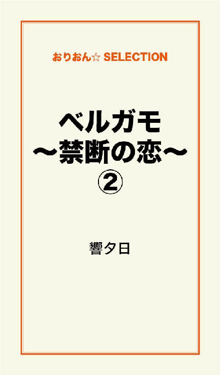

| ベルガモ～禁断の恋～ 完全版 | |
| 響夕日 | |
この本は横書きでレイアウトされています。
また、ご覧になる機種により、表示の差が認められることがあります。
季節は三月中旬。
まだ風が冷たい日もあるが、日は長くなり、桜が開花している地方もあり、長い冬も終わりに近づいている。
北川寛（ひろし）は自宅でテレビを観ている。
六歳の寛は今年小学一年になる。
あと半月で小学生だ。
寛は小学生になるのを楽しみにしていた。
社交的で活発で誰とでもすぐに仲良くなれる寛は友達を沢山作ろうと考えている。
「ひろ、今日は浮間の叔母さんのところに行くわよ」
寛の母親しほりは化粧をして、出掛ける準備が整っている。
「ほんと！ やった！」
寛は喜んだ。
寛は美少年で、どちらかといえば中性的な顔をしている。
いとこの香織（かおり）に逢える。
寛は一人っ子で、外出を楽しみにしていたが、特に香織に逢えるかと思うと胸がときめいた。
寛は、幼心に香織に恋心を抱いてからだ。
香織は寛より一歳年下である。
寛はテレビの電源を切り、服を着替えると、しほりと共にバス停まで歩く。
途中、しほりはケーキ屋でケーキを買い、紙袋を持ちながらバス停を目指した。
バス停に到着すると寛はしほりに「今何時」と聞き、一時だと判ると時刻表を見た。
あと十分でバスが来る。
寛はわくわくしながらバスを待った。
十分が長く感じる。
香織と逢うのは半月ぶりだ。
寛は嬉しさを隠せず、笑みを浮かべながらバスを待つ。
遠くからバスが来た。
寛はガードレールから身を乗り出し、バスを見つめる。
「そんなに乗り出したら危ないわよ」
しほりは寛に小言を言う。
バスが到着して二人は乗り込む。
寛は後ろ向きに座席に座る。
寛はバスの窓から外を見るのが好きなのだ。
代わり映えのない景色を寛はおとなしく座りながら、窓の縁に手を掛け、興味深く眺めている。
バスは浮間に到着した。
寛の家と香織の家とでは三十分というところか。
バスから降りて、香織の家までは五分だ。
寛は走っていく。
「転ばないようにね」
後ろからしほりの声が聞こえるが、寛はダッシュをする。
香織の家の生け垣を通ると、香織の家で飼っている犬のぺスが吠える。
ペスは他人には吠えないが、寛が来ると寛の姿が見えなくても吠えるのだ。
犬は賢い動物だ。
久しぶりに来る寛の顔を、見ないうちから寛と判るのだ。
ペスはいかくして吠えてるのではなく、寛が来て嬉しくて吠えている。
「香織、遊びに来たぞ」
寛はチャイムも鳴らさず、香織の家のドアを開けると、大声で香織を呼んだ。
「ひろ！」
香織が廊下を走ってくる。
香織は美少女で、髪の毛はポニーテールにしていて可愛い。
そのあとから香織の母親和恵も出てきた。
「ひろ、よく来たね」
香織は微笑む。
香織も寛のことが好きなのだ。
「ひろちゃん、今日は。お母さんは？」
和恵が寛に問い掛ける。
「叔母さん、今日は。母さんはもうすぐ来るよ」
庭ではペスが遊びたそうに尻尾を振りながら吠えている。
しほりがやって来た。
「和恵さん、お久しぶりです」
「しほりさん、お変わりなかった？」
「お陰さまで」
「さあ、中へはいって」
和恵の一言で四人は中へ入った。
「和恵さん。お線香をあげさせてもらいますね」
しほりは仏壇の前に座った。
「有難うしほりさん」
「お兄さんが亡くなって二年になりますね。早いものですね」
しほりの兄、一夫は、一昨年電車に巻き込まれて死んだのだ。
ホームの最前列で並んでいたところを、男に押されて線路に落ちた。
すぐに電車が来て巻き込まれた。
一夫を押した男は、目撃者が多かったのですぐに逮捕された。
仕事でむしゃくしゃしてたらしい。
誰でもよかったと男は証言した。
「私も主人が亡くなったなんて、今でも信じられないのよ。あんな死に方をするなんて......」
和恵の夫一夫が他界してから二年の月日がたつが、和恵は仏壇を見ながら悲しそうな顔をする。
「今、お茶入れるわね」
和恵は席を立とうとした。
「お姉さん、今日はケーキを買ってきたのよ」
しほりは紙袋からケーキの箱を取り出した。
「じゃあコーヒーを煎れるわね」
和恵は席を立ち、キッチンへ向かった。
寛と香織は楽しそうに会話をしている。
「香織、俺がいないと寂しいだろう」
「うん、寂しい」
「俺も寂しいよ」
二人はまだ幼いので何のためらいもなく、お互い相手に気持ちを伝えられる。
やがて和恵がコーヒー二つとオレンジジュース二つをトレイに乗せて運んできた。
「みんなリビングに行きましょう」
和恵はトレイを持ちながらリビングへ向かう。
三人も和恵のあとに続き、四人はリビングのソファーに座った。
「香織ちゃん。今日のケーキ美味しそうよ」
しほりはテーブルにケーキを並べ、香織に笑顔を見せる。
「有難うおばちゃん。頂きます」
香織はフォークでケーキを食べた。
「おばちゃん、甘くて美味しい」
香織は満面の笑みをしほりに送る。
「ほんとに旨いな」
寛もケーキを満足そうに食べている。
大人たちはコーヒーを飲み、子供たちはオレンジュースを飲んでいる。
「香織、遊びに行こう」
ケーキを食べ終えると寛が立ち上がる。
「うん」
香織も笑顔で立ち上がる。
二人は近所の公園に行った。
滑り台で遊んだり、ジャングルジムで遊んだり、ブランコで遊んだりした。
砂場ではままごとをして遊んだ。
そしてベンチに座った。
「香織、俺たち大人になったら結婚しような」
「うん」
二人は笑い合う。
そこへ近所の老婆がやって来てベンチに座った。
この老婆は香織と寛がいとこだということを知っている。
「おばあちゃん、今日は」
香織は老婆に挨拶をした。
「あんたたちは本当に仲がいいねえ」
老婆は笑みを浮かべる。
「お婆ちゃん、俺たち大人になったら結婚するんだよ」
寛が笑いながら老婆にいう。
「あんたたちはいとこだから、なるべくなら結婚はしない方がいいんだよ」
老婆は優しく言う。
「どうして？ 俺たち約束したんだ」
「どうしてもだよ」
老婆の笑みが消える。
「嫌だ。ひろのお嫁さんになる」
香織は泣きそうになっている。
「どうしてもいとこは結婚できないんだよ！」
老婆の顔は険しくなった。
実際にはいとこは結婚をすることができる。
しかし、血が濃いのであまり好ましくないといわれている。
アメリカでは二十五州で、いとこ婚は禁止されている。
二人は結婚はできないと言われたのと、老婆の恐ろしい顔に泣き出してしまった。
二人は泣きながら香織の家へ向かう。
「どうしたの？ 二人とも」
泣いて帰ってきた二人を見てしほりは驚く。
「何を泣いているの？」
和恵も驚いている。
「意地悪なお婆ちゃんが俺たち結婚できないって言うんだ」
寛は泣きながら母親に言う。
「あたしひろのお嫁さんになれないの？」
香織も泣きながら和恵に聞いた。
しほりと和恵は困って顔を見合わせる。
ここで真実を言えば、尚更子供たちは傷つくだろう。
しかし、いい加減なことも言えない。
「いとこ同士は結婚できないわけじゃないのよ」
和恵が香織に言う。
「だけどね、いとこ同士が結婚をすると、産まれてくる子供が......」
和恵はそこで言葉をつまらせる。
「いいのよ。いとこ同士だって結婚できるわよ」
しほりは優しく二人の頭を撫でる。
「ほんと、お母さん」
寛の目にはまだ涙が溜まっている。
「本当よ。だから気にしなくていいのよ」
しほりは我が子と香織を抱き締めた。
「ほんとにほんとなの？」
香織もまだ涙を浮かべている。
「大丈夫よ。だから二人とも泣き止んで」
しほりは強く二人を抱きしめる。
二人は涙を拭う。
「あのお婆ちゃん嘘つきだ」
寛は泣き止み悪態をつく。
「ほんとだね」
香織も泣き止んだ。
「二人とも、ペスを連れて散歩に行きなさい。でもあまり遠くへ行ってはだめよ」
「うん」
二人は庭の犬小屋まで走って行った。
「しほりさん、いいの？ あんなこと子供たちに言って。血が濃いと障害者が産まれる確率が高いのよ」
和恵は心配そうにしほりを見る。
「知ってるわよ。でも大丈夫よ。あの子たちはまだ六歳と五歳よ。大人になればそれぞれ別の恋をするわ」
しほりは笑う。
「それもそうね」
和恵も笑った。
しかし、しほりの予想は当たるのかは、この時点では誰にも判らなかった。
香織がペスを放し、寛がリードを持って、二人は散歩に出掛ける。
その小さな二人の後ろ姿を微笑ましげに、しほりと和恵は見送る。
ペスはまめ柴だが、ぐいぐいと寛を引っ張り先に行こうとする。
まだ幼い寛は、ペスに引っ張られながら運動公園に到着した。
この運動公園は市営だが広く、野球場やサッカー場、体育館も完備してある。
サッカー場には誰もいないのでペスのリードを放した。
そして寛は歩いてゴールまで行き、香織はサッカー場の中央に立った。
ペスは香織の足元にいる。
「ペス！ おいで！」
寛がペスに声をかけると、ペスはダッシュをして寛のところへ向かう。
ペスが来ると、寛はペスを抱き上げる。
ペスは寛の顔を舐める。
寛は笑う。
今度は中央にいた香織がペスを呼ぶ。
ペスは寛から降りて、香織の元へダッシュする。
香織は笑いながらしゃがんで、ペスの頭を撫でる。
そしてまた寛がペスを呼ぶ。
ペスは寛の元へ走っていく。
それを繰り返していた。
二人は笑い合う。
ペスも楽しそうだ。
するとペスが寛のところへ行ったとき、真っ黒なドーベルマンが向こう側のゴールからペスを目掛けて走ってきた。
二人は固まる。
ペスも恐ろしさのあまりうずくまる。
寛は小さな体だが、ペスを守ろうとしてペスを抱き上げた。
ドーベルマンが来たら腹を蹴ってやろうと思った。
ドーベルマンは、猛スピードで寛を目掛けて走ってくる。
中央にいた香織を無視して寛に迫ってくる。
香織は恐ろしさで声が出ない。
その場で立ちすくんでるだけだ。
ドーベルマンは寛とペスに襲いかかった。
寛はドーベルマンの腹を蹴飛ばした。
しかし、幼い寛の蹴りなどドーベルマンには効かない。
寛はペスを放さないように必死だ。
ペスを放したらドーベルマンに食い殺されてしまうだろう。
そのとき寛の足に激痛が走った。
ドーベルマンが寛の太ももに噛みついたのだ。
寛はあまりの痛さに、ペスを放し両手でドーベルマンの頭を押して離そうとした。
だがドーベルマンは、寛の足にしっかり噛みついて離れない。
すると向こうのゴールから人影が見えて、その人物はドーベルマンに向かって指笛を吹いた。
それを合図に、ドーベルマンはその人物に向かって走り出した。
その人物は多分、飼い主なのだろう。
寛は痛さのあまり芝生に倒れ込んだ。
「ひろ、大丈夫！」
香織が走ってくる。
向こうから飼い主らしい男も走ってくる。
そして寛のそばまで来ると、
「きみ！ 大丈夫か！」
と叫んだ。
「足が......足が......」
寛は倒れ込みながらうめき声を上げる。
「ちょっとズボンを降ろすよ」
その人物は寛のズボンを膝まで降ろした。
右足の太ももがひどく内出血をして、紫色になっている。
血もぽつぽつと出ている。
男はジャケットの内ポケットから携帯電話を取り出し、救急車を呼んだ。
ドーベルマンは向こうのサッカーゴールに繋がれている。
ペスが寛の傷口を舐めている。
香織は寛のあまりにも酷い傷口を見て泣き出た。
「すまなかった。私が目を離したばかりにこんなことになってしまって......私は矢部という。医者をしている。ちょっと診せてくれないか」
矢部はそう言い、寛の太ももの裏側を強く押した。
「痛いか？」
「裏側は痛くない」
「だったら骨には異常はなさそうだな。駐車場までおんぶするから立てるか？」
「立てない」
寛の顔は痛さで歪んでいる。
「判った。救急車が来たら担架で運ばせよう。早く来てくれ」
矢部は時計を見る。
「ひろ、痛い？」
香織は泣きながら寛に聞く。
「大丈夫だよ。香織」
寛は香織を安心させようと嘘を言う。
本当は凄く痛いのだ。
「本当にすまない。ラッキーは......あのドーベルマンの名前だが、ラッキーは本来は人懐っこい犬で、人に噛みつくことなどまずない犬なんだが......」
「凄い勢いでひろのところに走っていったから、ひろが蹴飛ばしたの」
香織は泣きながら矢部に言う。
「そうか、それでラッキーは坊やのことを敵だと思ったんだ。ラッキーは本当は坊やたちと遊びたかったんだよ。でも、あんないかつい犬が来たら誰でも襲われると思うだろうな。本当にすまなかった。ラッキーを放してた俺が悪い」
矢部は二人に頭を下げた。
サイレンの音が聞こえてきた。
矢部は駐車場まで走っていく。
「ひろ、本当は痛いんでしょ」
香織は涙が止まらない。
「大丈夫だよこれくらい」
寛は無理に香織に笑顔を見せる。
「でもひろは凄いね。ペスを守ろうとしてあんな大きな犬と戦うなんて」
「ちょっと相手がでかすぎたな」
寛は無理に笑う。
「あたし、絶対ひろのお嫁さんになる」
香織は寛の勇敢な姿を見て益々好きになったようだ。
「お嫁さんにしてくれる？」
今まで泣きじゃくっていて、顔はぐしゃぐしゃだが香織の涙は止まっている。
「当たり前だ。俺たち何があろうとも結婚するんだ」
寛は痛みを押さえつつ笑顔で香織に言う。
「うん！」
香織も笑顔になる。
二人は幼心に固く結婚を近い合った。
矢部の案内で、救急隊員二人が担架を持って寛のところまでやって来た。
救急隊員は寛の傷口を見ている。
「これは酷いな」
「痛みはあるかい？」
救急隊員の一人が寛に聞く。
「うん。凄く痛い」
寝たまま動けない寛は、救急隊員に素直に自分の状況を言う。
やっぱりかなり痛いんだ。
私に心配をかけないように笑って見せたんだ。
凄いよひろ。
香織はまた涙が出てきた。
あたし、ひろのことが大好き。
どんなことがあっても、あたしはひろのお嫁さんになる。
寛は上半身を起こそうとした。
「いいから君は動かないで」
救急隊員の一人が言うと、一人が寛の脇の下に手を入れ、もう一人が尻の下に手を入れて、せーので寛の体をスライドさせて担架に乗せた。
救急隊員は寛を乗せた担架を担ぎ、サッカー場の奥のゴールから芝生を踏みながら駐車場まで歩いていく。
そのあとを、矢部と香織とペスが着いていく。
救急車に到着すると、救急隊員と寛と香織が救急車に乗り込み、矢部は自分の車でドーベルマンとペスを乗せて救急車のあとをついていった。
矢部の車の後部座席で、ラッキーとペスは仲良くしている。
救急車の中では、香織が寛の手を握っている。
寛は痩せ我慢もここまでか、かなり痛そうにしている。
救急隊員が何故こんなことになったのかと寛に尋ねても、寛は痛さのあまり喋れない。
代わりに香織が説明をした。
「勇敢な子だね」
と救急隊員の一人が言うと、
「ひろは凄いんだよ」
と香織が言う。
救急車が病院に到着すると、医師団が五人待っていて寛を滑車のついたベッドに寝かせ、緊急治療室へ運んだ。
救急隊員は救急車で消防署へ帰っていった。
廊下では香織と矢部がベンチに座り、治療が終わるのを待っている。
「これは全て私の責任だ。できる限りのことはさせてもらうよ」
矢部は香織に言うと、席を立ちどこかへ行った。
戻ってきた矢部の手には、コーヒーの缶が二つ握られていた。
「コーヒーでよかったかな？」
矢部は香織に聞きながらコーヒーを渡した。
「うん......」
香織は缶コーヒーを受け取った。
よく見ると、香織の目には矢部はまだ二十代に見えた。
若い医者だ。
トレーナーにジャケットを羽織り、ジーンズ姿なのでそう思ったのかもしれない。
「矢部さんは何科のお医者さんなの？」
香織は今はあまり話をしたくなかったが、黙っていても息が詰まりそうなので聞いてみた。
「僕は内科だよ。きみの名前は何て言うの？」
「相田香織」
「香織ちゃんかいい名前だね。コーヒー飲んでよ」
「うん」
香織はコーヒーを飲んだ。
寛はレントゲンの結果、骨には異常はなかった。
見た目は酷いが出血も少ないので、医師団は大したことはないと判断した。
破傷風予防のため、傷口を時間をかけて洗浄した。
寛にはこれがたまらなく痛かった。
早く終わってほしいと願った。
しかし、医師は念入りに洗浄をした。
それが終わると消毒だ。
これも痛かったが、洗浄ほどではなかった。
そして医師は薬を塗り、ガーゼを絆創膏で止め、包帯を巻いた。
治療が終了した。
寛は痛みが治まっていた。
「上半身を起こしてみなさい」
と医師に言われたので、上半身を起こしてみたが痛みはなかった。
看護師が松葉杖を持ってきたので、それを使うと立ち上がることができた。
松葉杖は右側片方で充分だ。
「そこら辺を歩いてみて」
と医師に言われたので歩いてみると歩ける。
痛みは殆ど感じない。
寛は歩いて集中治療室を出た。
「ひろ、大丈夫？」
香織が駆け寄る。
「大丈夫だ。痛みも治まったよ」
「本当？ 無理してない？」
香織はまた自分を安心させようと寛が痛みをこらえて言っているのではないかと心配だ。
「本当に大丈夫だよ。不思議なくらい痛みがなくなった」
寛は笑ってみせる。
「ほんとにほんと？」
香織はまだ疑っている。
「全然痛くないというわけじゃないけど、大分痛みは治まったよ」
寛は正直に言う。
「やっぱり痛いんだ」
香織の目がまた潤む。
「泣くな香織。本当に痛みは少しだから」
寛は必死に説得をする。
集中治療室で一時間以上も治療を受けていたのだ。
香織は寛の怪我は重症だと思い込んでいる。
松葉杖もついている。
やはり寛は自分を安心させようと、平気なふりを装っているだけなのだと思った。
そう思うと幼い香織の瞳から、大粒の涙が頬を伝う。
実際は、レントゲン検査などで時間がかかってしまっただけなのだ。
「化膿止めを出すから必ず飲んでね。忘れたらだめだよ」
医師は寛に言ってから、矢部に、
「酷い怪我ですが、骨には異常はないですし、出血も軽いので入院させることはないと思います。今日は帰ってもらって構いません」
と言った。
医師に向かって、
「どうも有難うございました」
と言うと矢部は寛を支えながら会計に向かう。
あとから泣きながら香織がついてくる。
慣れない松葉杖のため、寛はうまく歩けない。
矢部にしっかりと支えられている。
会計まで向う途中寛は歩いてると、また足に激痛が走った。
香織はまだ泣いている。
寛は歩くのをやめたかったが、香織が心配するのでそのまま会計に向かった。
会計に到着すると三人は長椅子に腰をかけていたが、香織がトイレに向かった。
「どうだい傷の具合は」
矢部が心配して寛に尋ねる。
「凄く痛い」
寛は本音を言った。
「本当にすまなかった。辛い思いをさせたね」
矢部は寛に謝罪をした。
「でも香織には俺の足が痛んでることは内緒にして。心配をかけるだけだから」
寛は香織をこれ以上泣かしたくはなかった。
「判った」
矢部はうなずく。
トイレから帰ってきた香織の顔は綺麗になっている。
涙を流したのだろう。
香織は泣き止んでいる。
会計を済ませ、薬局で薬を受け取り矢部の車で三人は浮間の香織の家へ戻った。
矢部がドアフォンを鳴らした。
和恵が出てきた。
「どうしたの！ ひろちゃん」
寛が松葉杖をついていたので和恵は驚いた。
その声を聞き、しほりも玄関に出てきた。
「ひろ！ どうしたの」
しほりも寛が松葉杖をついていたので驚く。
「私は運動公園の近くで医者をしてます」
矢部はしほりと和恵に名刺を渡した。
矢部病院と書いてある。
個人経営の病院だ。
「交通事故ですか！」
しほりは興奮して叫んだ。
「いいえ、違います。私の犬が寛くんに噛みついたのです。すみません」
矢部は頭を下げた。
「どんな犬なんですか？」
しほりは矢部に聞く。
犬の種類によって寛の怪我の具合の見当がつく。
「ドーベルマンです」
矢部は言いづらそうだ。
「何ですって！」
しほりの顔が青ざめる。
「寛、中へ入りなさい。香織ちゃんも。それから矢部さんも中へ入ってください」
しほりは三人を中へ入れた。
和恵はキッチンへ向かう。
「これはどういうことですか？」
矢部に向けられるしほりの視線が鋭くなる。
「うちの犬は人懐っこくて、お宅の犬と遊ぼうと走っていったんです。すると寛くんが襲われると勘違いをして、お宅の犬を守ろうと、うちの犬の腹を蹴ったんです。そうしたらうちの犬が寛くんに噛みついたんです」
和恵がお茶を持ってきて五人の前へ置いた。
「いくら寛が勘違いをしてお宅の犬を先に蹴飛ばしたとしても、獰猛な犬を放し飼いにしてる方に責任があるんじゃないですか？」
しほりは声を荒立てる。
「ごもっともです。私の不注意です。ですからできる限りのことはさせてもらいます」
矢部は出されたお茶に一口もつけずに誠意をみせている。
「寛の怪我の具合はどうなんでしょうか？」
しほりは寛を心配して矢部に聞く。
「幸い骨には異常はないそうです。出血もすくないですから心配はいらないと医者は言っていました。しかし、寛くんはしばらくは歩けないでしょう。それとこれを一日一回寛くんに必ず飲ませるように言われました」
矢部は出された薬をテーブルの上に置いた。
「判りました」
しほりは矢部は紳士だと思ったので、それ以上文句は言わなかった。
「それでは私は帰ります。寛くんが心配なのでまた明日仕事が終わったら来ます。失礼します」
矢部は席を立ち、しほりと和恵に深々とお辞儀をした。
しほりと和恵は玄関まで矢部を見送りに行った。
「香織、俺の足が紫色に腫れてること言うなよ。母さんに心配かけたくないんだ」
寛は香織の耳元でささやく。
「うん......」
香織は寛の足が心配だがうなずく。
しほりと和恵がリビングに戻ってきた。
寛はソファーで横になっている。
「和恵さん、悪いけどしばらくひろを預かってもらえないかな？ ひろは当分歩けないというのよ」
しほりはすまなそうに和恵にお願いをする。
「いいわよ。部屋は空いてるんだから、しほりさんは気兼ねしないで。雄作さんの面倒も見なければならないでしょうから、しほりさんは帰ってかまわないわ」
雄作とはしほりの夫である。
「ごめんなさいね。そうしてもらうと助かる」
しほりは和恵を頼りにするしかない。
「大丈夫よ。子供が一人増えたくらいじゃ手間はかからないわ」
和恵は笑う。
「ひろ、足の具合はどうなの。痛むの」
しほりが心配そうに寛を見る。
「大丈夫だよ。母さん。歩けないけど痛くない」
寛はまた嘘をつく。
先程からズキンズキンと痛みが走っている。
「本当に大丈夫なの？ 相手はドーベルマンでしょ。怪我酷いんじゃないの？」
和恵も心配そうに寛に尋ねる。
「大丈夫だよ。叔母さん。大したことないよ」
寛は無理に笑う。
「それじゃあお姉さん、私、そろそろ夕飯の準備をしなければならないから帰りますね」しほりは席を立った。
「ひろちゃんは何日でも見るから心配しないでね」
和恵はしほりを見送る。
「有難うお姉さん。すぐに引き取りにきますから」
「焦らなくてもいいわよ」
二人は廊下を歩きながら話をしてしほりは帰っていった。
「本当に足、大丈夫なの？」
和恵はリビングに戻ってくるとまた寛に聞く。
「本当に大丈夫。心配ないよ」
寛の足はかなり痛む。
「そう......じゃあご飯の支度するね」
和恵はキッチンへ向かう。
「本当は相当痛いんでしょ」
和恵がキッチンに行ったのを見届けると香織が寛の側へ寄ってきた。
「香織、もう泣かないか？」
寛はソファーで横になっている。
「うん」
「本当はかなり痛い。でも叔母さんに言うなよ。心配かけたくないからな」
「ドーベルマンに噛まれたんだもんね。痛くないわけないよね。それに寛の太もも酷かったもんね」
「まあな。それに、治療が痛かった。終わったときは痛みが引いたけど、やっぱりあとになって痛くなった」
「ごめんね。あたし何もできなくて」
「香織は女の子だ。それこそ香織に何かあったら大変だよ」
寛は香織の手にそっと自分の手を置いた。
「香織、痛みが治る方法があるぞ」
寛は上半身を起こした。
「何？ あたしにできること？」
香織は寛のためなら何でもすると決めている。
「香織しかできないことだ」
「言って。何でもする」
「キスしてくれないか」
「うん」
香織は微笑みながら寛の顔の近くで膝を着いた。
そして二人はキスをした。
やがて和恵が、トレイに料理を乗せてリビングに来た。
「本当ならダイニングで食べるところだけど、しばらくはここで食事をしましょうね。ひろちゃんは椅子に座るよりソファーがいいでしょう」
和恵は笑顔で寛に言って、料理をテーブルの上に並べる。
今日は鶏の唐揚げと卵焼きとウインナーだ。
子供の好きなものばかりだ。
「俺の大好物ばかりだ。頂きます」
「あたしも好きなものばかり。頂きます」
「召し上がって」
和恵は子供たちに笑顔を振り撒く。
寛は先ず唐揚げを食べた。
「旨い！」
寛は笑顔になる。
ところが急に足が痛み出す。
寛は食欲を失ってしまった。
残すのは和恵に悪いから、箸を進めようとするが、足の痛みで食べるどころではなくなった。
「叔母さん、もう食べれない」
寛は箸を置いてしまう。
「どうしたの？ 足が痛むの？」
和恵は唐揚げ一つで食べるのをやめてしまった寛を心配する。
「実は......痛くてたまらない」
もう隠しきれなくなった寛は本音を言った。
「じゃあ今日は早く寝なさい。今、別の部屋にお布団を敷いてあげるからね」
和恵も一旦箸を置き、他の部屋へ布団を敷きに行った。
寛はかなり痛そうにしている。
「ひろ、大丈夫？ あたしには何でも言ってね。隠し事はなしだよ。もう泣かないから」
香織は箸を持ったまま動きが止まっている。
「判った。香織には隠し事はしない。我慢ができないほど痛みだした」
寛の顔が歪む。
「お医者さんから痛み止めは貰わなかったの？」
香織は心配そうだ。
「化膿止めしか出なかった」
寛の眉間にしわが寄る。
寛は太ももを押さえて苦しそうにしている。
「あたし、矢部さんの病院で、痛み止めをもらってくる」
そう言うと香織は立ち上がり玄関まで向かおうとした。
「そこまでしなくていいよ」
寛は座っていられず、倒れ込んでしまった。
その姿を見た香織は、無我夢中でまだ冬空の夜を何も羽織らず、外へ出た。
病院は運動公園の近くだと言っていた。
香織は夢中で運動公園を目指して走った。
家の中ではリビングで寛がもがき苦しんでいる。
布団を敷き終わった和恵はリビングに戻ると、苦しんでいる寛を見て驚いた。
「ひろちゃん、痛みはなくなったんじゃなかったの？」
「大丈夫だよ。叔母さん。ちょっと痛くなっただけ」
「ちょっとどころじゃないでしょう！」
和恵はもがき苦しんでいる寛を見てただ事じゃないと思った。
「香織はどこへ行ったの？」
和恵はリビングを見回したが香織の姿が見当たらない。
「矢部病院に痛み止めをもらいに行った。俺は止めたんだけど」
寛は右足を押さえながら、のたうち回っている。
救急車を呼べば済むことなのにと和恵は思った。
和恵は救急車を呼ぼうか迷った。
こんなに痛そうにしている寛を、このまま放っておくことは出来ない。
和恵は決断した。
救急車を呼ぼう。
このままでは寛が可哀想だ。
矢部病院は運動公園の近くにあるというだけで、正確な場所は判らない。
香織が矢部病院を探しているうちに救急車を呼んだ方が早い。
和恵は消防署に電話を掛けて、救急車を呼んだ。
消防署は近くにある。
すぐに救急車が到着した。
救急隊員が家の中に入ってきて、寛の様子を見ると、すぐに担架で寛を救急車の中へ運び入れ、受け付けてくれる病院を手配した。
赤羽総合病院が、まだこの時間でも医師がいると言うのでそこに運ばれることとなった。
「お母さんも一緒に乗ってください」
救急隊員の一人が和恵に言った。
「ちょっと待ってください」
和恵はノートに『赤羽総合病院に行っています。香織へ』と書き、それをテープでドアの外に張り付け、鍵を掛けて救急車へ乗り込んだ。
香織は合鍵を持っている。
その頃香織は、矢部病院をやっと探し当てた。
そこは運動公園の裏側にあった。
香織は玄関を叩いた。
「矢部さん！ 香織だけど開けて」
香織は自宅からここまで走ってきたので、息が上がっている。
人が出てこない。
「お願い！ 開けて」
尚も香織は玄関を叩く。
一階は真っ暗だが二階は明かりが灯っている。
「矢部さん！ 矢部さん！」
香織は精一杯叫んだ。
すると一階の電気が付き、矢部が出てきた。
「あ、どうしたの？ 香織ちゃん」
矢部はバスローブを羽織っている。
香織は矢部を大人の人だと思った。
「ひろが大変なの！ 急に痛がって倒れたの！ 矢部さんに痛み止めの薬をもらいにきたの」
香織は涙目になりながら必死に矢部に訴える。
「そうか、判った。薬より注射の方が即効性がある。今、用意するから、香織ちゃんは中へ入って椅子に座って待ってて」
矢部はそう言うと急いで二階へ登り、服を着替えて一階に降りてきて、診察室に入り、痛み止めの注射や医療器具を鞄に入れて走って香織のところへ来た。
「香織ちゃん。私の車で行こう」
「うん」
矢部は香織の手を引いて駐車場まで走った。
香織は大きい手だなと思った。
何故か香織の胸は高鳴った。
香織は矢部に父親の面影を重ねているのかもしれない。
二人は駐車場まで行き、車に乗り込むと、急いで香織の自宅へ向かった。
車内では、矢部が香織に寛の様子を細かく聞いている。
矢部は一刻も早く寛の痛みを取り除いてやろうと、車のスピードをあげる。
車は香織の自宅に到着すると、香織が助手席から飛び出して家へ向かう。
すると、寛と和恵は赤羽総合病院に行ったという張り紙があった。
矢部も駆けつけてその張り紙を見て、赤羽総合病院に行こうと、また矢部は香織の手を取り、車に乗り込んだ。
二人を乗せた車は赤羽総合病院に到着すると、二人は急いで病院内へ入ったがこの時間は受付が閉まっている。
矢部と香織は救急治療室まで向かった。
長椅子に和恵が座っている。
「お母さん！ ひろは！」
母親の姿を見つけると香織は叫んだ。
「静かにしなさい。今、お医者さんが診てるところよ」
和恵は娘を優しく叱る。
「矢部さんも来てくれたんですか」
和恵は矢部を見上げる。
「香織ちゃんが心配そうなので、車で走ってきました」
矢部は和恵の隣に座った。
香織は和恵の片方の隣に座る。
長椅子に和恵が中央で、両側に矢部と香織が座っている。
「寛くんの状態はどうですか？」
矢部が和恵に尋ねる。
「悶絶するほど酷く痛がってまして、香織を待たずに救急車を呼んだんです」
和恵は、矢部を待っていられなかったことをわびるような口調で言った。
「あのときラッキーを放していなければこんなことにならなかったのに」
矢部は後悔で膝のうえで握りこぶしを作った。
「しかたがありません。もう済んだことです。でもあの子が大事に至らなければいいのですけど......」
和恵は集中治療室のドアを見る。
「ねえ、ひろは大丈夫なの？」
香織は落ち着かず長椅子の上に立ち、和恵の肩に掴まり、ぴょんぴょん跳ねている。
「大丈夫よ。香織。だからおとなしく座ってなさい」
和恵は香織をたしなめる。
「はーい」
香織は和恵の言うことを聞き、椅子から降りて座った。
「骨には異常はないと言うことなので楽観視をしていましたが、寛くんがお宅に戻ったあと、私が自分の病院からお宅に行って鎮痛剤を打つべきでした」
矢部はすまなそうにうつ向いた。
「あの子は治療を受けて戻って来たんです。誰でもこんなことになるとは思いませんよ」
和恵は矢部には落ち度はないと言いたいのだ。
「いや、お母さんは見ていないでしょうけど寛くんの怪我は酷かった。内出血で紫色に腫れ上がっていたんです」
矢部は和恵を見つめて話す。
「そうなんですか。あの子は包帯を巻いていて傷口は見えないし、私の前では平気にしてたんです」
和恵も矢部を見つめる。
「お母さんの前では心配をかけまいと我慢してたんですね」
矢部は、寛は幼いわりには真の強い子だと思った。
「言い遅れましたが、私はあの子の母親ではありません。義理の妹の息子なんです」
和恵は人の子供を預かっているので余計に心配なのだ。
「私も言い遅れましたが、運動公園の裏で内科の開業医をしています。前の医者が心不全のため、急に亡くなたたので、私に個人病院をしてみないかと父に言われたんです。父も開業医をしています。父の病院は個人病院にしては大きな病院です。ハイテクの医療機器は揃っているし、入院設備も整っています。私は父の下で医者をしていました。ところが個人病院の医者が亡くなったと言うので、父があの病院を買ったのです。そしていい経験になるからと私をあの病院の院長にしたんです。院長と言っても医者は私だけですけどね。他に看護師が二人の小さな病院です」
矢部はそこまで話すと、煙草とライターを胸ポケットから取り出し火をつけた。
矢部は続ける。
「小さな病院なので、手術の設備もありませんし、入院設備もありません。患者も重症患者は来ません。風邪や花粉症やちょっとした怪我をした患者ばかりです。お気楽なものです。私の歳は二十六です」
矢部は煙草の煙を吹き出す。
「小さいといっても開業医でしょ。その若さで凄いじゃないですか」
大規模な病院の跡取り息子で、二十六歳の若さで開業医をしている矢部はかなりの御曹子だと和恵は思った。
腕を見ると高そうな時計をしている。
和恵には判らないが、この時計はロジェディブ●ールデンスクエアーだ。
六百万円以上する高級時計だ。
車はベ●ツＣＬＫに乗っている。
二千万円以上する。
「ご主人は？」
の矢部の問い掛けに、和恵の顔が曇る。
「主人は二年前に亡くなりました」
「そうでしたか。失礼なことを聞いてすみません」
矢部は灰皿に煙草の灰を落とす。
「いいえ、気にしないでください」
矢部が煙草を揉み消していると、集中治療室から寛と医師が出てきた。
「ひろ！ 大丈夫！」
香織が寛の元へ駆け寄る。
今度は松葉杖を両方にしているので、香織はただ事ではないと思い、泣き出しそうになっている。
「どうですか？ 先生」
和恵も足早に寛のところへ行き、担当医に寛の様態を聞く。
「内出血がひどいのに、前の病院の看護師がきつく包帯を巻いていました。そのために内出血が更に酷くなったようです」
医師は淡々と和恵に話す。
「そうでしたか。それで寛の具合はどうなんでしょうか」
和恵は心配をして医師にすがるような視線を送る。
「もう大丈夫です。我々が全力を尽くしましたから。今日は入院の必要はありませんよ。鎮痛剤を打って起きましたから家でゆっくり休ませてください」
「有難うございます」
和恵は医師に深々と頭を下げる。
「ひろ、大丈夫なの？」
香織が心配して寛に声をかける。
「大丈夫だ。心配はいらないよ。松葉杖二本になったけどこれは大袈裟だよ。痛みもなくなったよ」
寛は優しい視線を香織に送る。
会計は矢部が払った。
寛は保険証を持っていないので六万円かかった。
和恵は矢部に私が払いますと言ったが、矢部は元はと言えば私の不注意でこんなことになってしまったのだから私に払わせてくださいと和恵を制した。
薬を受け取り、四人は矢部の車に乗り込み、車は相田家に向かって出発した。
助手席には和恵が座り、後部座席には香織と寛が座った。
「ひろ、本当に大丈夫なの」
香織は寛の足を心配して必要に寛に聞く。
「もう大丈夫だよ。香織、心配かけてごめんな」
「ううん、あたしは平気。早くひろの足が治ればいいね」
「うん」
「あっ、でもひろの足が治らない方がいい」
「どうして？」
寛には香織が言っている意味が判らない。
「ひろの足が治らなければ、ずっと一緒にいられるもん」
寛は笑う。
香織も笑った。
車は国道を突っ走る。
四人を乗せた車は相田家に到着した。
和恵と香織は車から降りて、寛は矢部が支えて車から降ろした。
矢部は寛の体を支えながら相田家の玄関に向かう。
和恵はドアの張り紙をはがし、鍵を開けて香織と一緒に中へ入った。
あとから矢部が寛を支えながら玄関に来た。
矢部は寛を下ろすと、
「では私は失礼します」
と言った。
「お茶でも飲んでいってください」
和恵が矢部を引き留める。
「もうこんな時間ですから」
矢部は遠慮をして帰ろうとする。
「お茶飲んでいってよう。それともコーヒーがいい？ それともジュース？」
香織が矢部の足にすがりつく。
すると矢部はしゃがんで、
「香織ちゃんは可愛いね。寛くんを助けようと住所も判らないのに、私の病院まで走ってくるなんて、将来いいお嫁さんにになるね」
と笑顔で香織の頭を撫でた。
「あたし、いいお嫁さんになれる？」
「もちろん」
「矢部さん、あたしをお嫁さんにもらってくれる？」
玄関で座っていた寛は耳を疑った。
香織は俺と結婚するんじゃないのか。
「香織ちゃんはいくつ？」
矢部は笑顔だ。
「五歳」
「じゃあ香織ちゃんが大人になったら考えようね」
矢部はまだ香織の頭を撫でている。
「うん」
香織ははしゃいでいる。
「矢部さんここでは何ですから中へ入ってください」
玄関にいた和恵が矢部を誘う。
「では少しだけお言葉に甘えます」
矢部は玄関に入ってきた。
矢部は玄関で座っている寛を持ち上げようとした。
「いい。一人で立てる」
寛は矢部の腕を乱暴に振り払い、松葉杖を使って必死に立ち上がり、リビングに向かった。
矢部は何故、いきなり寛が不機嫌になったのか判らない。
安部も上がってきて、和恵は矢部をソファーに座らせ、寛をソファーに寝かせ、キッチンへ行き、コーヒー二つとグレープフルーツジュース二つを持ってきた。
香織は寛が横になっているソファーの前に座っている。
和恵はソファーに矢部とL字型に座った。
「矢部さん、奥さんは？」
和恵がコーヒーに砂糖を入れながら矢部に聞いた。
「私はまだ独身です」
矢部は笑う。
「そうですか。いい人はいるんですか」
和恵はコーヒーにミルクを入れた。
「そんな人はいません」
矢部は苦笑いをしなからブラックのままコーヒーを飲んだ。
「まだお若いし、院長だし、おもてになりますでしょう」
和恵はコーヒーを飲む。
「これが全然もてません。恋人募集中です」
矢部は照れ笑いをする。
「立派なお医者さんが、恋人募集中なんですか」
和恵は驚く。
「こういった商売をしていると、外に出る機会がないですから接点がないんです」
矢部は笑う。
「せってんて、何？」
香織がストローをくわえながら矢部に聞く。
「女の子に出逢う機会がないことだよ。だからおじさんには彼女がいないんだ」
矢部は真面目に香織に答えた。
「看護婦さんがいるでしょ」
香織は矢部を見つめる。
「二人いるけど二人とも酷いぶす」
矢部は笑う。
香織も和恵も笑う。
寛は笑ってはいない。
香織が、矢部のお嫁さんになると言ったことが面白くないのだ。
「私はそろそろ帰りますが、寛くんが何かありましたら深夜でもいいですから電話をしてください。すぐに来ますから」
矢部は和恵に言った。
「そこまでしてもらっては申し訳ないです」
和恵は矢部の申し出を断る。
「いえ、元はといえば私の不注意から寛くんを怪我させてしまったのですからこのくらいやらせてください」
「そうですか。そう言っていただけるなら遠慮なくそうさせてもらいます。救急車を呼ぶより早いですしね」
和恵はそう言われてみれば、矢部にも責任があるのだからそのくらいはしてもらってもいいと思った。
「矢部さんは来なくていい」
寛が言う。
「どうしたの。ひろちゃん。さっかく矢部さんが親切で言ってくれてるのに」
和恵は寛の内心が分からない。
「もう矢部さんはここに来なくていい」
寛は少し声を荒立てた。
「そういう訳にはいかないよ。私は責任を感じているんだ。毎日来て寛くんの怪我の様子を診るよ」
矢部も何故、寛が急に不機嫌になったのか判らない。
「ひろ、おかしいよ。あたしは大人になったら矢部さんのお嫁さんになるんだよ。矢部さんを冷たくしないで」
香織が怒る。
「勝手にしろ！」
寛は頭に血がのぼった。
「もう寝る！」
寛は怒鳴って松葉杖で立ち上がろうとした。
矢部が寛の体を支えようとする。
「さわるな！」
寛は叫んで一人で立ち上がり、寝室へ向かった。
突然、和恵が笑う。
「どうしたんですか？」
何故寛があんなにも怒るのか。
そして何故、急に和恵が笑ったのか。
矢部には訳が解らない。
「矢部さん。ひろちゃんと香織は結婚の約束をしてたんですよ」
「そうだったんですか。香織ちゃんが私のお嫁さんになると言ったので寛くんは怒ったのですね」
「そうですね」
和恵はまだ笑っている。
「でもいとこ同士の結婚はどうかと思いますが」
矢部はコーヒーを飲む。
「まだ六歳と五歳の子供の約束ですよ。そのうち忘れますよ」
和恵は笑う。
「それもそうですね」
矢部も笑う。
しかし何故、急に香織が心変わりして矢部と結婚すると言ったことが、和恵には理解できない。
「香織はひろちゃんのお嫁さんになるんじゃなかったの」
和恵が香織に聞いてみた。
すると香織は、
「ひろのお嫁さんになるよ」
と言う。
「香織、矢部さんのお嫁さんになるってどういうこと？」
「矢部さんのお嫁さんにもなるの。あたし、ひろと矢部さんのお嫁さんになる」
香織は真剣に言う。
「香織、二人のお嫁さんにはなれないのよ」
和恵が笑う。
「そうなの？」
香織はきょとんとしている。
「そうだよ。二人と結婚はできないんだよ。どうする？ 私と寛くんとどっちを選ぶ」
矢部は笑いながら香織に尋ねる。
「ひろ」
香織は即答して立ち上がった。
和恵も矢部も微笑む。
「お母さん、今日ひろと同じ部屋で寝ていいでしょ」
香織は寝室へ向かう。
「いいわよ。でも早く寝るのよ。ひろちゃんは足が痛いんだからね」
「判った。お母さん矢部さんお休みなさい」
香織は寝室に入っていった。
「可愛いですね」矢部は微笑んでいる。
「でもあの二人大人になって本当に結婚すると言ったらどうしましょう」
和恵は少し不安だ。
「大丈夫ですよ。あんな小さい子供の約束ですよ。すぐに忘れますよ」
矢部は微笑んで和恵を安心させる。
「そうですよね、五年でも長すぎた春と言いますものね」
「そうですよ」
二人は笑う。
「いけない。長居してしまいました。私は失礼します」
矢部は席を立った。
「また明日来ます。寛くんには嫌われてるみたいだけど」
矢部は笑う。
「よろしくお願いします」
和恵は会釈をする。
「こうなったのは私の責任ですから、寛くんに嫌われても毎日来ますよ。それではまた明日」
矢部は玄関で靴を履いている。
「もう遅いですから気をつけてくださいね」
和恵が矢部の背中に声をかける。
「有難うございます。ではお休みなさい」
「お休みなさい」
矢部は帰っていった。
和恵はリビングへ行き後片付けを始める。
香織は押し入れから布団を出して、寛の隣に敷いている。
「香織、何してんだよ」
寛は怒っている。
「ひろの隣で寝るの」
香織は掛布団を敷き終わった。
「お前なんかどっか行けよ」
寛は怒りが収まらないので声が荒くなる。
「ひろ、冷たいよ」
香織は枕を置いた。
「だってあの野郎と結婚するんだろ」
「あの野郎って矢部さんのこと？」
「それしかいないだろ」
寛は大声を出す。
「矢部さんのお嫁さんにはならないよ」
「そうなのか。さっき矢部さんのお嫁さんになるって言ってたじゃないか」
「あたし勘違いしてたの。二人のお嫁さんになれると思ってたから」
香織はパジャマに着替えている。
寛は布団に入っている。
「香織は馬鹿だな。二人と結婚できる訳がないじゃないか」
寛は香織の着替えを見ないように後ろを向いた。
「ごめん、ひろ」
香織は着替え終えて布団に入った。
「二人の男を好きになるのは浮気って言うんだぞ」
寛は体の向きを変えて香織をにらんだ。
「うきわ？」
香織はつぶらな瞳で寛を見つめる。
「うきわじゃないよ。浮気だよ。やってはいけないことなんだ」
「ごめんなさい」
「で、どうなんだ？」
「何が？」
どうなんだと聞かれても香織には解らない。
「あいつの方が俺より好きなのか？」
「そんなことない。あたしはひろが好き」
香織は寛を真剣な眼差しで見つめる。
「もう、あいつのお嫁さんになると言わないか？」
「もう言わない。ひろだけが好き」
「そうか......だったらこっちへ来いよ」
「うん」
香織は自分の布団から出て寛の布団に入った。
「もう誰も好きになるなよ。俺たち結婚するんだからな」
寛が真剣に言う。
「うん。一生ひろだけしか好きにならない」
「香織」
寛が香織を抱きしめる。
「ひろ」
香織の腕が寛の背中に回る。
「香織、お前柔らかいな」
「ひろは暖かい」
二人は抱き合ったまま眠りについた。
翌日の午前中に、しほりが相田家を訪れた。
「ひろ、怪我の具合はどう？」
しほりはソファーに腰を下ろしながら心配そうに寛に聞く。
「大分痛みはなくなってきたよ」
寛はソファーに横になっていたが、上半身を起こしてしほりに笑顔を送る。
香織は寛の寝ているソファーの前に座りテレビを観ている。
テレビでは安室奈●恵がCAN YOU CELEBRATE？を歌っている。
和恵がキッチンからお茶と茶菓子を持ってきた。
「お姉さんすみません。ひろがお世話になって」
しほりがすまなそうに和恵言う。
「ひろちゃんはおとなしくしてくれてるし、痛みも収まっているみたいだし、大丈夫よ」
和恵は昨日寛が悶絶するほど痛みで苦しみ、病院に行ったことは言わなかった。
しほりを心配させたくないからだ。
「じゃあ、ひろは今日家に帰れるね」
しほりは寛を見た。
「まだだめだよ。昨日ひろが凄く痛がって、病院に行って松葉杖二本になったんだから」
香織がしほりに本当のことを言ってしまった。
「そうだったんですか。お姉さん」
しほりは和恵に尋ねる。
「え、ええ。しほりさんに心配かけないようにとこのことは言わないでおこうと思ってたの。でも香織の言った通りなの。まだ歩けないのよ。しばらくはうちで預かるわ」
和恵はお茶を飲む。
「ごめんなさい、お姉さん。手間をかけてしまって」
しほりはすまなそうに和恵を見る。
「私は平気よ。何日だってひろちゃんを預かるわ」
和恵はしほりに微笑みながら茶菓子を口に入れた。
「ひろが歩けないなら仕方がないわね。お姉さん。すみませんけどよろしくお願いします」
しほりは和恵に頭を下げる。
「いいのよ。私とあなたの仲じゃない。気兼ねはしないでね」
和恵は笑みを浮かべながら優しくしほりに言う。
「それじゃあ、お言葉に甘えてもうしばらくひろをお願いします」
「任せておいて」
和恵はお茶を飲む。
「ひろ、その体じゃ動けないと思ったからゲームを持ってきたよ」
しほりは紙袋からプレイステーションを取り出した。
「やった、今からゲームやっていい？」
寛は和恵に聞いた。
「いいわよ」
和恵は微笑みながら答える。
「香織、一緒にゲームしよう」
寛はソファーから降りて、体をずらしながらテレビの前へ行く。
「うん」
香織も寛の横に座る。
二人はクラッシュバ●ディグーをやり始めた。
「二人は本当に仲がいいわね」
寛と香織の後ろ姿を見てしほりは目を細める。
「でも本当に大丈夫なのかしら、あの二人」
和恵は不安気味に声を潜めてしほりに言う。
「大丈夫よ。子供の頃の約束なんかすぐに忘れるわ」
しほりは笑う。
そしてその夜も、二人は抱き合いながら眠った。
恋心を抱いている二人は、お互いの体の温もりを感じることで幼いながらも幸せだった。
下心などない純粋な気持である。
翌朝。
「何してんの！ あんたたち！ いやらしい！」
和恵の怒鳴り声で香織と寛は目が覚めた。
和恵がドアを開けて仁王立ちになっている。
まだ抱き合ったままだ。
二人は幼心に恐怖を感じた。
それは、してはいけない行為を和恵に見られてしまった、という認識があったからだ。
「二人とも！ 早く離れなさい！」
和恵は怒鳴り散らす。
香織と寛は布団から出た。
「二人ともリビングへ来なさい」
和恵は怒りながら二人に叫ぶ。
二人はパジャマから私服に着替え、リビングへ行き、ソファーに腰掛けた。
「ひろちゃん、あんたは今日帰ってもらうからね」
和恵が寛を睨む。
香織と寛は黙ったまま下を向いている。
「まったくあんたたちはませてるね。まさかあんなことをしてるなんて」
和恵の怒りは収まらない。
香織と寛は恐怖で何も言えない。
「ひろちゃんはもううちには来ないでね。このままだととんでもないことになるよ。まったく」
「え、もう香織とは会えないの？」
寛は、それだけは許してほしいので顔を上げて和恵を見つめた。
「当たり前だよ。あんなことをしておいて呼べるわけないだろ」
和恵は寛に見返しながら言う。
「それは嫌だよ、お母さん」
香織は涙目になっている。
「ごめんなさい、伯母さん」
寛も必死に許しを乞う。
「だめなものはだめなんだよ」
和恵は二人を怒鳴る。
幼い二人は、もう互いに逢えなくなるのかと思うと悲しみが募り（つのり）泣き出してしまった。
「もうしないから許して」
寛は泣きながら和恵に言う。
「お願い、お母さん」
香織も大粒の涙をいっぱい流している。
「泣いても許さないよ」
普段は温厚な和恵も、今回ばかりは子供たちの嘆願を拒む。
香織と寛は声を出して泣いた。
「今日は」
そこへしほりがやって来た。
子供たちが泣きわめいている。
和恵は怒りを露にしている。
「何があったの、お姉さん」
しほりはただならぬ情景を見て、驚きながら和恵に聞いた。
「どうもこうもないのよ、しほりさん。この子たちは抱き合って寝てたんだよ」
和恵はしほりに声を荒立てる。
「えっ」
しほりは驚いた。
まさか六歳の息子が、五歳のいとこと抱き合いながら寝ていたとは想像もつかなかった。
「しほりさん、今日はひろちゃんを連れ戻してもらいますからね。そして二度とひろちゃんをこの家には来させないでね」
和恵はしほりにも多少怒った口調で言う。
「そうね......そうした方がいいかもね」
しほりもこのまま二人を近づけておくのは危険だと思った。
「待ってよ、母さん。香織と逢えなくなるのは嫌だよ」
寛は瞳に涙を一杯にためて、しほりを見上げる。
「ひろはしてはいけないことをしたのよ。それは解るでしょ。もうここには来てはいけないの」
しほりは厳しく寛に言う。
「伯母ちゃん、そんなの嫌だよ」
香織が泣きながらしほりにしがみついた。
それを和恵が引き離して、
「しほりさん、もう帰ってね。しほりさんは来てもいいけどひろちゃんは来させないでね」
と言った。
「判りました。どうもすみませんでした。お姉さん、今日のところはひろを連れて帰ります。また改めて私一人できますから。失礼します」
としほりは和恵に言い寛に、
「帰るわよ」
と強い口調で言った。
「嫌だ！ 香織、逃げるぞ！」
「うん！」
寛と香織はソファーから立ち上がり、手を繋いで庭の窓から裸足で逃げ出した。
「こら、待ちなさい」
しぼりは玄関から寛たちを追いかけようとハイヒールを履く。
和恵はジョギングシューズの靴紐を結んでいる。
その隙に裸足で逃げ出した香織と寛は、遠くへ行ってしまってしほりと和恵が外に出たときには二人の姿は見当たらない。
しほりと和恵は近所を探し回ったが、二人を見つけることはできなかった。
「しほりさん、もしかするとあそこかもしれない」
「どこ」
「矢部さんの病院」
「そうか、行ってみましょう」
しほりと和恵は運動公園を目指した。
その頃、香織と寛は土手の下のあしの林の中に身を寄せながら隠れていた。
「これからどうするの」
香織は不安気味な目をして寛に聞く。
「判らないけど絶対に捕まらないようにしような。見つかったら俺たちは二度と逢えなくなるぞ」
「うん」
計画性もなく、金も持たないで飛び出してきた二人は、いつまでも逃げ切れる訳はない。
しかし、香織と寛は逢えなくなる恐怖の方が勝っていたので、捕まりたくない一心で密かに隠れている。
「俺に任せろ。今いいことを思いついた」
「どうするの」
「矢部さんに隠れさせてもらうんだ」
「あっそうか。そうだね。矢部さんならかくまってくれるね」
「うん。今ここから出ると捕まるかもしれないからもう少したってから行こう」
「うん」
幼い二人はこれで逃げ切れると思っていた。
その頃、しほりと和恵は矢部病院にたどり着いていた。
和恵は受付の女性に、
「私は相田というものですが、矢部先生に緊急の用があります」
と言った。
受付の女性は診察室に行き、戻ってくると、
「今診ている患者さんが終わったら、先生がお話をお聞きになるそうです」
と言った。
しほりと和恵は待合室で待つことにした。
十分程度で、受付の女性がしほりと和恵を診察室に来るようにと言った。
しほりと和恵は診察室に入り、香織と寛はここに来てないかと矢部に聞いた。
「来てませんよ。何かあったのですか」
矢部はしほりと和恵のただならぬ表情を見て、ただ事ではないと直感した。
和恵は今日の出来事をこと細かく矢部に説明した。
「判りました。二人は行く宛がないでしょうから、多分私を頼って来ると思います。そうしたら相田さんの家まで二人を車で送りますよ」
矢部はドーベルマンの一件もあるので快く引き受けた。
しほりと和恵は、よろしくお願いしますと言って、和恵の自宅に戻ることにした。
「あんな小さいうちから抱き合うなんて、あの二人が大人になったら本当に結婚をすると言いかねないわ」
帰路を歩いている途中で和恵が言う。
「そうですよね。いとこ婚は障害者が産まれる確率が高いから、あの二人は今から引き離さないとだめよね」
しほりもこのまま二人を放っておけないと考えている。
医学的視点からすると、いとこ婚でも障害者が産まれる確率はそれほど高くないとされているが、しほりと和恵は障害者が産まれやすいと信じ込んでいる。
しほりの夫、雄作や親類も同じ考えをもっている。
香織と寛の周囲の人々は、いとこ婚は絶対に反対なのである。
なので、もし香織と寛が成人を迎え、まだ結婚をしたいと言っても全員反対をするだろう。
香織と寛の結婚は禁断なのだ。
「矢部さんのところへ行ってみようよ」
しほりと和恵が家に戻った頃、香織が立ち上がった。
「そうだな。行ってみよう」
寛も立ち上がる。
二人は土手を登り、頂上に達したときに寛が言った。
「あのさ香織、もしかすると母さんたちも、もう矢部さんのところへ行ってるかもしれないぞ」
寛の足が止まる。
「あ、そうか。そうかもしれないね」
「戻ろう。やっぱりあそこで隠れていよう」
「うん」
二人は今来た道を戻り、あしの中にしゃがんで隠れた。
夜になり空気が冷たくなってきた。
「寒い」
香織は震えている。
「こうすれば暖かいだろ」
寛は香織を抱き締めた。
「うん。暖かい」
香織は微笑む。
寛も笑みを浮かべる。
二人は幸せを感じている。
外灯も何もない土手の下で、月明かりだけが二人を照らしていた。
一方しほりと和恵は、二人が夜になっても戻ってこないので心配していた。
和恵は矢部に電話をしたが、二人は矢部のところには来ていないと言う。
「困ったわね。あの二人どこへいったのかしら」
和恵は落ち着かない様子でソファーに座っていられず、立ったままコーヒーを飲んでいる。
「お姉さん、あの子たちはお金も持たずに飛び出したから遠くへ行っていないはずよ。もう一度探してみませんか」
しほりは和恵に提案する。
「そうね。もう一度探しましょうか」
「はい」
そこで和恵が閃いた。
「そうだ、ペスを連れて行きましょう。ペスがあの子たちの居場所をかぎつけるかもしれない」
「そうね。ペスはあの二人になついてるから誘導してくれるもしれませんね」
しほりと和恵はペスと共に香織と寛を探しに行った。
ペスのリードは和恵が持っている。
ペスは運動公園には行かず、まっすぐ土手を目指した。
土手を登り、そして降りてあしの中へ入っていく。
ペスはどんどん奥に向かった。
ペスが吠える。
しほりと和恵は月明かりの中で目を凝らした。
香織と寛が抱き合いながら隠れていた。
「ひろ！ 何してんの！」
しほりは二人の後ろ姿に叫んだ。
香織と寛は驚いて振り返る。
そこには、鬼のような形相のしほりと和恵が立っている。
「母さん」
寛は見つかってしまったので、恐怖におののく。
「まったくあんたは親を心配させて！」
しほりは寛の頬を叩いた。
寛は叩かれた痛みと、もう香織には逢えなくなると思うと涙が出てきた。
香織も泣きそうになっている。
「家に帰るよ」
和恵が香織の腕を掴む。
「ひろも戻るよ」
しほりはきつい口調で言い、寛を引っ張る。
「もう絶対にひろちゃんと逢ってはだめだからね！」
和恵は香織を怒鳴る。
「ひろもだからね」
しほりも寛を怒鳴る。
四人は相田家に戻りしほりが和恵に、
「お姉さん、私はこれで失礼します。もう絶対にひろを連れて来ませんから」
ときっぱりと言った。
「まったくあんなところで抱き合ってるなんて気がしれないよ。あんたたちはもう二度と逢ったらだめだからね」
和恵は怒りながら香織と寛に言う。
「今日はひろが迷惑をかけてしまってすみませんでした。それではお姉さん失礼します」
しほりは和恵に頭を下げた。
「しほりさんはまた来てね。ひろちゃんは来ちゃだめだよ」
和恵が寛をにらむ。
「それじゃあお姉さんまた来ます」
しほりと寛は相田家をあとにする。
寛は何も言えないでいる。
しほりと寛はバス停に着くとバスを待った。
二人は黙ったままだ。
やがてバスが来て二人は乗り込む。
寛は後ろの席で外を眺めている。
バスが発車した。
すると香織がバスを追いかけてきた。
「ひろ！ 行っちゃ嫌」
香織は泣きながらバスを追いかける。
「香織」
寛は身を乗り出す。
「ひろ、ひろ」
香織は必至にバスを追いかける。
しかしバスはどんどん小さくなる。
「香織！」
寛は何もできない自分を腹立たしく思い、ただ追いかけてくる香織を見つめるしかなかった。
「ひろ！ もう逢えなくなるなんて嫌だよ！」
香織は懸命に追いかける。
バスは遠くに消え去る。
香織は小さな体で一生懸命に走る。
涙が飛び散る。
バスは見えなくなろうとしている。
それでも香織は必至にバスを追いかける。
バスは霧の中に消えていく。
それでも香織は力の限り追いかける。
「ひろ！」
香織は精一杯叫びながら走る。
香織は涙を流しながら懸命に走る。
バスは見えなくなった。
香織は足をとめた。
香織はたたずみながら声を出して泣いた。
もうひろとは逢えなくなる。
香織は涙を流しながらその場でうずくまった。
翌日。
香織は和恵の目を盗んで、電話帳を見ながら寛の家へ電話を掛けた。
どうしても寛とは別れたくなかったからだ。
しかし運の悪いことにしほりが電話に出た。
「もしもし」
しほりの声だ。
「......」
香織は何も言えないでいる。
「もしもし」
しほりはもう一度問いかける。
「......」
香織は黙ったままだ。
「判った。香織ちゃんでしょう。もうひろとは逢うのもだめだし連絡をするのもだめよ」
しほりの声は穏やかだったが、香織には厳しく聞こえたので、何も言わず受話器を下ろした。
香織はまた掛け直せばいいと思っていた。
そのうち寛が電話に出るだろう。
するとすぐに電話が鳴った。
香織はしほりからだと思い、電話には出なかった。
奥から和恵が出てきて受話器をとった。
「もしもし、和恵さん」
「あ、しほりさんどうしたの」
やはりしほりからだ。
「今、香織ちゃんから電話があったみたいなの。何も言わなかったけどあれは香織ちゃんよ。うちに連絡ができないように電話帳を隠してくれないかな」
「判ったわ。二人で連絡してどこかで落ち合ったら大変だものね」
香織が側にいるので、和恵は声を潜める。
しかし香織には聞こえていた。
「それじゃあよろしくお願いしますね」
「判った」
和恵はまだ声を潜めている。
電話を切ったあと、早速和恵は電話帳を香織の届かない棚に乗せた。
しかし、香織は寛の家の電話番号をメモしていた。
夕方、和恵が買い物に出掛けた頃、しほりも買い物に出掛けたのではないかと思い、香織は寛に電話を掛けた。
「もしもし」
寛が出た。
「ひろ、あたしひろに逢いたいよ」
「香織か、俺も逢いたい」
「明日どこかで待ち合わせしようよ」
「そうだな。そうしよう。どこがいいかな」
そこで電話が切れた。
和恵が帰ってきて、電話を切ったのだ。
「まったくこの子は油断も隙もないね。ひろちゃんとは逢ったらいけないんだよ」
和恵は香織に説教をする。
「お母さん許して。もうあんなことしないから」
香織は寛と抱き合ったことを言っている。
「だめと言ったらだめだよ。連絡もとったらだめだからね」
和恵は少し厳しく香織に言った。
反対をされるとよけいに逢いたくなる。
「あたしひろのところに行く」
香織は玄関に向かおうとした。
「こら！ 親の言うことを聞きなさい」
和恵は香織を連れ戻し、ソファーに座り、香織を太ももの上にうつ伏せに寝かせて尻を叩いた。
香織は泣き出した。
「もうひろちゃんのところに行くといわないか」
和恵はまだ尻を叩いている。
「言わない。許して」
香織は泣きながら許しを乞う。
五歳の女の子が一人で遠出はできないだろうが、見せしめのために叩いたので、和恵はすぐに叩くのをやめた。
香織は泣きながら子供部屋に入っていった。
手加減をされて叩かれたので、尻の痛みはすぐに消えたが、これでもう寛と逢えなくなると思うと涙が止まらなかった。
無理に逢おうとしたり、連絡をとると、お仕置きが怖いので、香織はどうすることもできなくなった。
でも寛と逢いたいという気持ちは変わらない。
寝ても覚めても寛のことばかり想っていた香織は、毎日が苦しくてたまらなかった。
春がきて寛は小学生になった。
ひろは友達ができて、あたしのことなんか忘れたのかな。
ひろは人気があるから、彼女でもできたかな。
電話も来ないしあたしのことなんてどうでもよくなったのかな。
香織は悪いことばかりを考えている。
ある日のこと、チャイムが鳴ったので香織が出てみると寛が立っていた。
「ひろ！」
香織は驚いて大きな声を出した。
「静かにしろ。叔母さんは何してる」
「お昼ご飯作ってる」
「そうか、逃げるぞ。公園で待ってるから支度して来いよ」
「判った。すぐ行くね」
香織は急いで自分の部屋へ入った。
寛も見つかってはまずいので、走って公園に向かった。
寛がしばらく公園で待っていると香織が走ってやって来た。
急だったので、手には最小限の着替えを詰め込んだバックを持っている。
「香織、お年玉持ってきたか」
「うん。お年玉とお小遣い全部持ってきた」
「そうか。俺もお年玉持ってきた。これで当分食うに困らないだろ。行こう」
「どこへ行くの」
「幸手のお婆ちゃんのところに行く。あそこは使ってない蔵がある。そこに隠れるんだよ」
「うん」
寛たちの祖母の家は農家だが、五年前に夫を亡くして近所の分家と農業を営んでいる。
祖母の家は本家なので、立派な家があり、立派な蔵がある。
香織と寛はバスで赤羽に行き、京浜東北線で大宮を目指した。
その頃和恵は、昼食の準備が終わり、香織を探したがどこにもいない。
近所を隈無く探したが見当たらない。
和恵はもしかすると寛と逃げたのではないかと思い、家に戻りしほりに電話を掛けた。
「もしもし、しほりさん。香織がいなくなったの」
「お姉さん、こっちも寛が学校を無断欠席してるって電話があったわ」
「やっぱりあの二人どこかへ逃げたんだわ」
「どうしましょう」
「警察に捜索願いを出すわ。しほりさん、それでも構わないでしょう」
「そうね。そうしてください」
「それじゃあ一旦電話を切るわね」
「はい」
和恵は電話を切ると警察に捜索願いを出した。
香織と寛は大宮に到着したが、どの電車に乗れば幸手に着くのか判らない。
「幸手に行くのにはどの電車に乗ればいいの」
寛は改札の前で人に聞いてみた。
「東武線だよ」
その人はそれだけ言うと行ってしまった。
東武線はどこにあるのか判らない。
香織と寛は迷子になってしまった。
東武線は一度駅を出るような形で行かなくてはならないので、幼い二人には見当がつかない。
「ひろ、お腹空いた」
「そうだな」
朝食しか食べていない二人は空腹を覚える。
二人は駅を出て飲食店を探した。
駅の階段を降りたところにハンバーガーショップがあったので、そこで食事をすることにした。
二人はテーブルを挟んで座り、ハンバーガーを頬張る。
「これからどうするの」
香織はもぐもぐしながら寛に尋ねる。
「東武線がどこにあるか聞くよ」
寛は余程腹が減っていたのか、ハンバーガーを二つ買い、一つを食べ終えて、二つ目の包みを開いている。
香織は一つを買い、それをまだ半分しか食べていない。
寛が二つ目を食べ終えた頃、香織は一つを食べ終えた。
「俺、ここの店員に聞いてみるよ」
寛は席を立つ。
「うん」
香織はポテトを食べている。
「東武線はどこにあるの」
寛は店員に聞く。
「ここの裏の道を右にまっすぐ行けば着くよ」
若い女性の店員は笑みを寛に送りながら答えた。
「ありがとう」
寛は礼を言って香織のところへ戻り、
「東武線、判ったよ」
と言った。
「じゃあ、幸手に行けるね」
香織は微笑みながらポテトを食べている。
寛も座り直してポテトを食べた。
「俺たち絶対に捕まらないようにしような」
寛は何本も一度にポテトを口に入れる。
「うん」
二人は食事を済ませると、東武線の改札口へ向かった。
「今日からあたしたち自由だね」
電車の中で椅子に座り、香織は喜びはしゃいでいる。
「うん......」
寛は香織をいきなり連れてきたので、多少の後ろめたさがある。
だが、このまま香織と逢えないと思うと、これでよかったんだと自分の言い聞かせた。
二人の小遣いはたかが知れている。
長く隠れることはできないはずだが、幼い二人にはそこまでの思考は持ち合わせていなかった。
ただ一緒にいることが幸せなのだ。
香織は寛に全ての信頼を預けているので、寛と一緒なら怖いものはなかった。
寛は衝動的に香織を連れ出したが、学校も休んでこんなことをしていいのか不安が脳裏を横切る。
電車はまもなく春日部に到着する。
幸手に行くのには、春日部で乗り換えなければならない。
三歳の頃に一度、幸手の祖母のところに訪れた寛はそれを忘れている。
電車は春日部で停車したが、二人は降りなかった。
ドアが閉まり電車は出発する。
電車は一時間たっても幸手に着かない。
おかしいと思い、寛は次の駅で降りた。
そこは江戸川台という駅だった。
もう千葉県である。
香織と寛は完全に迷ってしまった。
「ここはどこなの」
香織が心配そうに寛に聞く。
「大丈夫だ。心配するな」
寛は香織に迷ったことを悟られまいとして、無理に微笑む。
寛はこうなったら交番で聞くしかないと思い、駅を出て駅前の交番に入った。
「おまわりさん、幸手はどう行けばいいの」
「坊やたち、いくつ」
警官は寛の質問を無視して問いかける。
「俺が六歳で香織が五歳」
「この子は香織ちゃんて言うんだ。坊やは」
警官は笑顔だが目は笑っていない。
「寛」
寛は何故か怖くなってきた。
警官はどこかへ電話を掛ける。
「寛くんと香織ちゃんを保護しました」
捕まる。
寛は直感的に察した。
「香織、逃げるぞ！」
「うん」
二人は手を繋いで交番を出ようとした。
すると太った警官に回り込まれ、二人は腕を捕まれた。
「きみたちはおとなしくしててね」
太った警官は二人を椅子に座らせた。
二人に質問をしていた警官はどこかにしきりに電話を掛けている。
それが終わると太った警官に耳打ちをしている。
「浮間だな、判った。行ってくる」
太った警官は寛たちの前に来て、
「おじさんがパトカーで送って行くからね。パトカーに乗れるなんて嬉しいだろう」
と言った。
寛は戻されてしまうので悔しかった。
香織は状況が判らない様子で小首を傾げている。
太った警官は、二人をパトカーに乗せて浮間を目指した。
「きみたちは何でこんなところに来たんだい」
車の中で警官が寛たちに聞いた。
寛は黙ってうつ向いている。
連れ戻されるのが怖いのだ。
それを見た香織も何も言わなかった。
「きみたちはおとなしいね」
警官が笑う。
警官は色々と質問しても二人は黙ったままだ。
やがて車は浮間の相田家に到着した。
午後八時を過ぎていた。
警官が家のチャイムを押す。
しほりと和恵と雄作が出てきた。
「寛くんと香織ちゃんを連れてきましたよ」
警官は香織と寛を車から降ろした。
「間違いありませんか？」
警官は三人に聞く。
「間違いありません」
しほりが言う。
「では私は失礼しますよ」
警官は車に乗った。
「有難うございました」
しほりと和恵が警官に頭を下げる。
雄作が寛の前に立った。
「こいつ、香織ちゃんを連れ回して何かあったらどうするつもりだ」
雄作は寛を拳骨で殴った。
寛は倒れる。
それを見て香織は泣き出してしまった。
「今度こんなことをしたら許さないぞ！」
雄作は寛に怒鳴り散らす。
香織と寛は逢いたくてたまらないのだが、雄作の恐ろしい形相を目の前にして、もう逢うのは無理だと諦めるしかなかった。
二人は全く逢えないまま、十二年が過ぎた。
香織は高校三年になっており、寛は大学一年になっていた。
（幼い頃の約束なんてそのうち忘れるわ）
しほりの予想は外れていた。
香織は今でも寛のことを想い続けている。
香織は小さい頃から美少女だ。
高校生になっても美しかった。
むしろ、大人になるほど美しくなっている。
髪は幼い頃からのポニーテールのままだ。
スタイルもよかった。
これで身長が高ければモデルになってもおかしくない。
香織は寛のことを引きずっていたが、健やかに育っていた。
学校が終わると友達とカラオケに行ったり、ボーリングをしたり、ファミレスで喋ったり、普通な高校生活を送っていた。
しかし他の女子生徒とは違い、大はしゃぎしない。
どこか影がある。
家に帰り、自分の部屋で寛を想いながら胸が締め付けられる思いもしている。
それほど、香織は寛のことが十二年間たっても忘れられないのだ。
香織は、多人数から交際を求められた。
その中には女子に圧倒的に人気があるサッカー部のキャプテンもいたが、ことごとく断ってきた。
香織の気持ちは寛だけにあるのだ。
ある日香織が友達四人とファミレスで喋っていると、友達の一人の奈美（なみ）が、
「ねえねえ、あの人かっこいいね」
と言って香織の後ろを指差した。
「どの人？」
もう一人の友達の愛（まな）が奈美の指を指した方を見る。
「本当だ。かっこいい」
愛の目はその男性に釘付けになった。
「どれ？」
普段クールな理穂（りほ）が関心なさそうに奈美に聞く。
「あの人」
奈美はまた香織の後ろを指差す。
香織の隣に座っていた理穂は後ろを向いてその男性を見た。
「やばい！」
理穂は興奮する。
香織も何気なく後ろを振り向いた。
香織は驚いた。
そこには寛が座っていた。
寛は香織たちのテーブルから二つテーブルを挟んで、座って雑誌を読んでいる。
香織は席を立って寛の元へ歩いていく。
すると見慣れない女性が寛の隣に座った。
「寛、待った？」
その女性は寛と腕を組む。
香織はどうしていいか判らず、トイレに行った。
香織はトイレの中で頭が真っ白になった。
ひろに彼女ができていた。
あたしは一日もひろを忘れたことはなかったのに。
やっぱり十二年もたつと人は変わるんだ。
幼い頃の約束なんて長続きはしないんだ。
ひろは悪くない。
あたしが純粋過ぎたんだ。
しかし、香織は十二年間の想いを簡単に消すことは出来ない。
胸が苦しい。
寛に彼女がいたなんて。
辛いよ。
苦しいよ。
いつかひろと逢って、昔のように仲良くしたかったのに。
ひろのお嫁さんになりたかったのに。
香織は、残酷な現実を受け入れなければならない。
しかし、今すぐ心の整理はつかない。
この出来事は夢であればいいと思った。
しかし事実なのだ。
ファミレスで腕を組むなんて、かなり深い関係なのだろう。
寛が必ず迎えに来てくれる日がくる、と信じて疑わなかった香織のショックは大きい。
香織は呆然としながらトイレから出て、友達が待つテーブルに向かう。
ふと見ると寛の隣の女性はいなくなっていた。
香織は寛のテーブルを通り越そうとした。
「香織か！」
寛が驚いた様子で呼び止める。
香織は無視して自分の席へ戻ろうとする。
「香織だろ、俺だよ寛だよ」
寛は席を立って香織の腕を掴んだ。
「離して！」
香織は寛の腕を振り払う。
「香織、どうしたんだよ。俺たち十二年ぶりに逢ったんだぞ」
寛は何故香織が怒っているのか判らない。
「もうあたしに構わないで」
香織は歩いていく。
寛は香織の前に回った。
「何を怒っているのか判らないけど、まあ座れよ」
寛は香織を自分の席に連れていく。
香織も久しぶりに寛と逢ったので、本当は寛と話したい。
寛に従い寛の向かいに座った。
「あの二人、どういう関係なんだろ」
奈美が香織が寛の席に座ったので不思議に思っている。
「香織またナンパされたのかな」
愛は羨ましそうに二人を見ている。
「いつものことよ。あたしたちは全然男に相手にされないね。香織ばっかりもてるんだから」
理穂は後ろを振り向きもしないでふてくされている。
「香織、久しぶりだな。元気だったか。それにしても可愛くなったな」
寛は笑顔で香織を見つめる。
「ひろはかっこいいからもてるでしょ」
香織は寛を見ないで言った。
「そんなことないよ」
寛は笑いながら言う。
「嘘！ さっき彼女と腕を組んでたじゃない」
香織は大きな声を出した。
「見られたか。付き合って三ヶ月になるんだ。香織は彼氏はできたか？」
寛は微笑んでいる。
「あたしこの十二年間、ずっとひろのことを想って彼氏なんか一度もつくらなかったよ」
香織は十二年間の想いを寛にぶつける。
「そうなのか。あんな小さい頃の約束をまだ守っていたのか」
寛の笑みが消える。
店員が香織の前に水を置いた。
香織はミルクティーをオーダーした。
「俺にもブレンドもう一杯」
寛は二杯目のコーヒーをオーダーする。
「俺も高校二年まで香織のことが忘れられなかった」
寛はカップに少し残っていたコーヒーを飲み干した。
「だったら何で彼女なんかつくるの」
香織は怒った口調だ。
「高校三年になったとき同級生に告白された。迷ったけど、香織はもう俺のことは忘れたと思ったんだ。俺たちのことは周囲からも反対をされているし、恋をしてみようかと思ったんだ。その子とは一年で別れたけどな。今の彼女は大学で知り合った」
寛は水を飲む。
「あたしは、必ずひろがいつか迎えにくると信じて待ってたんだよ」
店員がミルクティーとコーヒーを運んできて二人の前に置いた。
「そうだったのか。実は俺もまだ香織のことが忘れられないんだ」
残暑が厳しい店の外には陽炎（かげろう）が揺れている。
「そうなの」
香織は驚いた。
「うん。俺たち結ばれないと思って彼女をつくっちゃったけど、俺は今でも香織が好きだ」寛はコーヒーに砂糖を入れている。
「ひろもずっとあたしを想っててくれてたんだ」
香織は初めて笑顔を見せた。
「でも遅いね。三ヶ月早く逢っていればひろは彼女をつくらなかった？」
香織は紅茶に砂糖を入れている。
「今の彼女ができる前に香織と逢えたら、また彼女なんかつくらなかったよ」
寛はコーヒーを飲む。
「残念だな。三ヶ月早く逢っていればよかったのにな。もう遅いね」
香織も紅茶を飲む。
「遅くないよ」
「えっ、どうするの？」
「俺が彼女と別れて香織と付き合えばいいんだ」
「そんなに簡単に別れられるの？」
香織は半信半疑だ。
「俺と彼女は付き合ってから三ヶ月しかたっていない。深い関係にもなっていない。彼女には事情を話して別れるよ」
寛はもう少しコーヒーに砂糖を入れた。
「そうしてくれるの」
香織は笑顔になった。
「そうする。俺は彼女より香織の方が好きだ。香織の気持ちを解った今、どんなことをしても彼女と別れるよ」
寛はコーヒーにミルクを入れ忘れたのを思い出してミルクを入れた。
「あたしのために有難う」
香織は紅茶を飲む。
「これは俺のためでもあるんだ。俺はずっと香織を想ってたんだ」
香織は嬉しくて満面の笑みになった。
「ねえ、携帯の電話番号とアドレス交換しようよ」
「そうだな」
二人は電話番号とアドレスを交換した。
「それじゃ友達が待っているからいくね」
香織は席を立った。
「俺も帰る。俺たち頻繁に連絡をして、近いうちにまた逢おうな」
寛も席を立った。
「うん」
二人は別れた。
香織は笑顔で寛の後ろ姿を見送る。
香織は友達のところへ戻った。
「今の人誰なの？ 随分親しそうに話してたみたいだったけど」
香織が戻ってくるなり早速奈美が質問をする。
「またナンパされたの？」
愛は羨ましそうに香織をみている。
「違うよ。いとこだよ」
香織は否定した。
「あんなかっこいい人といとこなの！ 紹介して」
理穂は珍しく感情を露にする。
「それは困る......」
香織は口ごもる。
「あの人の名前なんていうの？ 歳はいくつ？ 何をやってる人？」
奈美は香織に質問攻めをする。
「寛っていうの。十八歳で大学生」
「あたしたちよりいっこ上の大学生か。いいね。紹介して」
愛がコーヒーを飲みながら言う。
「あたしが先に紹介してって言ったんだよ。愛はだめ」
理穂は口を尖らせる。
「どっちが先とかあととか関係ないよ。ここにいる全員に寛くんを紹介してもらおうよ」
香織の気持ちを判らない奈美は愛と理穂に言う。
「賛成！ この中の誰かが寛くんと付き合えるかもしれないね」
愛がはしゃぐ。
「今度の日曜日にこのメンバーと寛くんでどこかに行かない？」
理穂が提案をする。
「いいね。行こう！」
愛は自分が寛と付き合えるのではないかと思っている。
奈美も理穂も寛を狙っている。
「どこがいいかな」
奈美は香織の気持ちを考えず話を進めたがっている。
「遊園地に行こうよ。あたしお弁当作ってくる」
理穂が言う。
「ずるいよ。理穂は点数稼ごうと思って。あたしもお弁当つくってくる」
愛は理穂に敵対心むき出しだ。
「あたしもお弁当つくってくる」
奈美も負けてはいない。
三人が盛り上がってる中で、香織は断れなくなった。
「じゃあ、今夜ひろに聞いてみる」
香織は仕方なく三人の申し出を引き受けた。
「楽しみ」
奈美は期待に胸を膨らませている。
「あんなイケメンと付き合えるなんて嬉しい」
愛はすっかりその気になっている。
「まだ付き合えるか判らないよ」
理穂は愛をにらむ。
その夜、香織は自分の部屋で寛に電話を掛けた。
「もしもし香織か、どうした」
「ひろ、今度の日曜日空いてる？」
香織は寛には用があると言ってほしかった。
「空いてるよ。デートするか」
寛はあっさりと言う。
「それが困ったことになったの。あたしの友達三人がひろと遊園地に行きたいと言うの」
香織は和恵に聞こえないように小声で話す。
「そうか、四対一じゃさすがに俺もきついな」
「どうしよう」
「俺も友達を連れていくよ」
「そうしてくれる。三人ともひろが目当てだからあたし心配なの」
「誰が来ようが、俺の気持ちは変わらないよ」
「有難うひろ。じゃあ今度の日曜日何時頃どこで待ち合わせしようか」
「池袋の駅で九時でいいんじゃないか」
「判った。みんなにはそういっておく」
「じゃあまたな」
「うん」
香織は電話を切った。
そして奈美に電話を掛けた。
「もしもし香織、どうだった？」
「ひろは日曜日空いてるって。遊園地に誘ったら来るって」
「ほんとに！ やったね」
奈美は喜ぶ。
「それからひろも友達を連れてくるって」
「そう、だったらあたしと愛と理穂で寛くんを取り合いにならないかもね」
電話越しに奈美は笑う。
「待ち合わせ場所は、池袋の駅で時間は九時になったから」
「判った。遅れないで行くよ。寛くんの友達に逢うのも楽しみ。やっぱりお弁当作っていくね」
「うん。それじゃ日曜日ね」
「判った。それじゃね」
香織は愛と理穂にも電話を掛けて、奈美に言った内容を伝えた。
寛の友達にも逢えるというので二人とも喜んだ。
二人とも弁当を作って来ると言う。
奈美も愛も理穂も心ときめいた。
寛がだめでも寛の友達が来る。
三人はどんな人たちが来るのだろうと、勝手な想像をしていた。
寛の友達だから、きっとイケメンなのだろうと思っている。
その頃、寛はまた香織に電話を掛けていた。
「香織、明日彼女と別れるよ」
寛の真剣な声が香織の耳に届く。
「あたしたち付き合えるのね」
香織は胸が高鳴った。
「うん。親にばれないように慎重に逢おう」
「そうだね。ところで寛はどこの大学に行ってるの？」
「八王子の大学だ。八王子のアパートで独り暮らしをしている。独り暮らしは自由だけど結構不便だよ」
寛は笑う。
戸田から八王子まで通えない距離でもないが、やはり遠いのと自立がしたかったので、寛は八王子でアパート住まいをしたいと親に言った。
両親も反対はしなかったので、寛は独立することとなった。
親に迷惑はかけまいとして、仕送りは最低限でいいと言い、まとまった休みにはバイトをして生活をしていた。
今は夏休みなので、寛は小学生相手に塾の講師をしている。
カリキュラムは自分で組めるので、土日は休暇をとっていた。
寛は塾が終わると疲れて、何もすることが出来ず、食事は自分では作らない。
「ご飯はちゃんと食べてるの？」
寛が一人住まいということなので香織は心配だ。
「コンビニ弁当ばかり」
寛は笑う。
「そんなんじゃ栄養片寄るよ。あたし時々ひろのアパートに行ってご飯作ってあげる」
「悪いなそうしてもらうと助かるよ」
「あたしあまり料理は得意じゃないけど本を見て研究する。コンビニ弁当よりはましよ」
「有難う。でも俺のアパートに来るときは叔母さんに気づかれないようにしろよ」
「判ってる。今度あたしたちが付き合っていることを知られたらアウトだもんね」
「うん。くれぐれも慎重にな」
「うん」
香織は寛のアパートに行けると思うと嬉しかった。
翌日の午後。
寛は彼女の友美（ともみ）とカフェにいた。
二人はコーヒーをオーダーしている。
「あのさ友美。俺たち別れないか」
突然、寛の口から意表をつく言葉が出てきたので友美は驚いた。
「何で？ あたしたちまだ三ヶ月しか付き合ってないんだよ。あたしに悪いところがあるなら改めるからそんなこと言わないで」
「実は俺には十二年間想っていた女の子がいたんだ。十二年も逢えないから、もう諦めて友美と付き合い始めた」
店員がコーヒーを持ってきて二人の前に置いた。
「その子が現れたのね」
友美はコーヒーに砂糖とミルクを入れる。
「そうなんだ。俺が六歳の頃から好きだった子が現れたんだ。友美には悪いけど俺はその子と付き合いたいんだ」
寛もコーヒーに砂糖とミルクを入れる。
「嫌だ！ あたし別れたくない！」
突然友美が叫んだ。
他の客が寛たちを見る。
「俺は十二年間その子のことを思い続けてきたんだ。その子が現れた以上俺の気持ちはその子にあるんだ。この気持ちは変わらない」
寛はコーヒーを飲んだ。
「どうしてもあたしたち別れなければならないの？」
友美は涙目になっている。
「悪いけど俺の気持ちは変わらない」
「あたし何でもするから捨てないで。その子の二番目の彼女でもいいから側にいさせて」友美の瞳から涙がこぼれ落ちる。
「そんなことはできない。友美には本当にすまないと思ってる。でも俺は香織だけを想っていたいんだ」
「あたしたちもうだめなのね」
「ごめん、友美」
寛はテーブルの上に千円札を二枚置くと立ち上がり、出口へ向かう。
友美はしばらく呆然としていたが、カフェを出て公園に向かった。
人気のない公園のブランコに座り、頭を下げて思いきり泣いた。
涙はぼたぼたと地面を濡らした。
一緒にディズニーランドに行こうと言ってたのに。
海にも行こうと言ってたのに。
温泉にも行こうと言ってたのに。
中華街にも行こうと言ってたのに。
八景島シーパラダイスにも行こうと言ってたのに。
お台場に行って大観覧車にも乗ろうと言ってたのに。
秋には紅葉を見に行こうと言ってたのに。
冬にはスキーに行こうと言ってたのに。
これから二人で色々計画していたのに。
友美はまさか、寛との別れがこんなにも早くくるとは思ってもいていなかったので、寛とのデートを楽しみにしていた。
それが一瞬にして消えてしまった。
友美の涙は地面に小さな水溜まりを作っていた。
〈２巻につづく〉

日曜日になった。
池袋の駅に全員が集合した。
寛は友人を三人連れてきた。
いずれも同級生である。
「それじゃ行こうか」寛が先頭になり、電車に乗り込む。
寛が連れてきた男たちは香織に群がる。
「俺、信次っていうんだ。よろしくね。きみの名前は何ていうの？」
「香織です」
三人に囲まれた香織は窮屈そうだ。
信次はバスケットボールの選手で、背が高く痩せている。
吊革に捕まっている上腕二頭筋は半袖のTシャツから出ていて太い。
筋肉質なのだ。
顔は妙に細長く真っ黒で目が細い印象がある。
「僕は健太（けんた）といいます。よろしく」
香織の横から声が聞こえる。
健太は中肉中背で銀縁の眼鏡を掛けていて丸顔で愛嬌のある目をしていて、賢そうな印象がある。
「俺は貴史（たかし）。よろしく」
貴史は背が低く、小太りで暑さに弱いのか、汗を沢山かいている。
寛の回りには女子三人が囲んでいる。
「あたしは奈美といいます。よろしくお願いします」
奈美は寛を見つめる。
瞳が愛らしくて可愛い顔をしている。
「あたしは愛といいます。よろしくね」
愛は砲丸投げの選手で太っており背も高い。
顔はぱんぱんに膨れ上がっていて鼻が埋まっている。
「あたしは理穂。よろしく」
理穂はクールなイメージがある。
顔立ちが整っていて、可愛いというより美人と言った方がいいだろう。
黒髪が長く、背中まで延びていて美しい。
八人は遊園地に到着した。
「それでは香織さん、ジェットコースターに乗りましょうか」
健太が香織を誘う。
「だめだ。香織ちゃんは俺と乗るんだ」
信次が健太に釘を刺す。
「違うよ。俺と乗るんだよ」
貴史は汗をハンカチで拭きながら三人の間に入る。
「お前たちは奈美ちゃんのところへ行けよ」
信次が健太と貴史を追い払う。
「確かに奈美ちゃんも可愛いな」
健太は奈美を見る。
「そうだろ。貴史は愛ちゃんのところへ行け」
信次は貴史に命令をする。
「愛ちゃんだけは絶対に嫌だ」
貴史は自分も小太りなのに、それを棚に上げて愛を拒む。
「こうなったらじゃんけんで決めよう」
インテリ風の健太が言う。
「いいだろう」
信次はバスケ部のキャプテンだ。
勝負運には強いと思っている。
「判った」
貴史は大汗をかいている。
じゃんけんの結果信次が勝ったので信次が香織の隣で、次に勝った健太が奈美の隣を選び、貴史が理穂の隣を選んだ。
寛は愛の隣になった。
みんなはジェットコースターの列に並んだ。
健太は奈美も可愛いと思っているのでまんざらでもない。
貴史も香織の隣に座りたかったが、理穂の隣でもいいと思った。
寛は香織のいとこなので、じゃんけんに参加させてもらえなかったので選べなかった。
「香織ちゃん、今日は楽しもうね」
信次が香織に言う。
「はい......」
香織は本当は寛と行動を共にできると思っていたので、まさかこんな展開になるとは思ってもみなかったのでつまらない。
「奈美ちゃんて言うんだよね。電車の中で聞こえたから」
健太は奈美に話しかける。
「そうよ。よろしくね」
奈美は健太に作り笑顔を送る。
健太は香織に一目惚れをしたが、奈美でもいいと思った。
貴史は美人の理穂と順番を待っている。
貴史は舞い上がり、汗がしたたり落ちる。
「よろしく」
貴史はそれしか言えず黙っている。
理穂も貴史には興味を示さず何も話さない。
一番喜んだのは愛だ。
寛の隣に座れる。
信次たちがじゃんけんで相手を選び、愛が残っただけなのだ。
じゃんけんに参加させてもらえなかった寛は、当然愛と一緒になる。
「寛くんは何学部なの」
「法律科だよ」
「将来、何になるか決めてるの？」
「弁護士」
寛も今日は香織と行動を共にできると思っていたので、面白くないから口数が少ない。
その後も男たちはじゃんけんで相手を決めるので、愛が余る。
愛はいつも寛と一緒なので、終始笑顔だ。
愛は完全に寛を好きになってしまった。
八人は夜まで遊んだ。
「最後に観覧車に乗ろう」
信次がみんなに言う。
「今度は俺もじゃんけんに参加させてくれ」
寛は男たちに言う。
「寛は香織ちゃんとはいとこなんだから、取り合いすることはないだろう」
健太が言う。
「正直いつも愛ちゃんと一緒で参っているんだ」
寛は声を潜める。
「判った。寛もじゃんけんに加えるよ」
信次も、寛は愛とばかり一緒なので可哀想だと思っていた。
「ひろが勝ちますように」
香織は心の中で祈る。
じゃんけんの結果、寛は理穂と観覧車に乗ることとなった。
香織と乗るのは健太だ。
貴史は奈美と乗る。
「ついてねえな」
信次は愛と乗ることとなった。
「寛くんは本当は香織と乗りたかったんでしょ」
観覧車に揺られながら理穂が言う。
「べ、別にそんなことないよ」
寛は否定する。
「じゃあ、何でじゃんけんなんかしたの？」
理穂は疑い深い眼差しになっている。
「いつも愛ちゃんとばかり乗り物に乗っていたから、たまには他の女の子とも乗ってみたかったんだ」
寛はごまかした。
「ふ～ん。寛くんはあたしのことどう思う？」
「どう思うと言われても......」
寛は返答に困った。
「タイプ？」
理穂は高校生にしては妖艶な眼差しで寛を見た。
「俺には好きな子がいるんだ」
寛はきっぱりと言った。
「この間、ファミレスで腕を組んでた子？」
「ま、まあな......」
「その子が羨ましい」
理穂は遠くを見る。
「理穂ちゃんは美人だから男にもてるだろう」
「あたし、性格ブスだから、付き合っても長続きしないんだ」
「自分で判ってるなら性格直せよ」
「簡単に直せたら苦労はしないよ」
「それもそうだな」
観覧車は一周した。
全員は遊園地を出ると、ファミレスで食事をして、それぞれ家に戻った。
翌日。
寛の携帯がなった。
信次からだった。
「俺、香織ちゃんのことが好きになった。寛から言ってくれないかな」
「嫌だよ。そんなの自分で言えよ。それに香織には好きな人がいる。告白しても無駄だと思うぞ」
寛は昨日遊園地へいったことで、こうなるのではないかと予測していた。
「どうしてもだめか」
「だめだ」
「判った。自分で言うよ。昨日全員の電話番号とメルアド交換したしな」
「悪いな」
「いいよ。こういうことはやっぱり自分で言わないとな。寛は気にしないでくれ。じゃあな」
電話が切れた。
また携帯が鳴った。
今度は健太からだ。
「香織ちゃんとデートがしたいんだ。寛、取り持ってくれないかな」
健太は電話越しに言いづらそうに言う。
「お前もかよ。さっき信次から電話があって香織と付き合いたいと言ってきた」
「そうなのか。それで寛は何て答えたんだ？ 引き受けたのか？」
「自分で告白しろと言ったよ」
「そうか。で、僕と香織ちゃんは取り持ってくれるのか」
「だめだ。自分で言え」
「何でだよ。友達のよしみで頼むよ」
「だめだと言ったらだめだ」
「......判ったよ。自分で言うよ」
健太は寛に頼むのを諦めた様子だ。
寛が電話を切ったあと、またすぐに携帯が鳴った。
今度は貴史からだ。
「香織ちゃんと付き合いたいんだけど......」
「お前もか。信次も健太も言ってきたぞ」
「そうなんだ。それで信次と健太には何て言ったの？」
「自分で告白しろと言ったよ」
「寛、頼むよ。俺は自分では告白ができない。寛から言ってくれないか」
「だめだ。そういうことは自分で言え」
「どうしてもだめか」
「どうしてもだめだ」
寛は強く言った。
「俺は女の子に自分で告白できないんだ。頼むよ」
貴史は粘る。
「だめだと言ったらだめだ」
寛はかたくなに拒む。
「......そうか」
貴史は女の子に告白ができないので、香織を諦めたようだ。
「でも何で寛はかたくなに俺たちの頼みを断るんだ。もしかすると寛は香織ちゃんのことが好きなのか。でもいとこ婚は危険だぞ」
寛は痛いところをつかれた。
「そんなんじゃねえよ。俺が三人もの仲を取り持つことができるかよ」
「そうだな。じゃあね」
電話が切れた。
寛は内心不安だ。
貴史は諦めたようだが、信次と健太は諦めていない。
あの二人の動向が気になる。
その頃、香織にも奈美と愛から同じような電話があった。
寛と付き合いたいので仲を取り持ってくれと言う。
香織は友達の頼みを無下に断れないので困っている。
理穂からも電話がきたが内容が違っていた。
「寛くんはまだ、この間のファミレスの彼女と付き合ってるみたいだよ」
「そうなの！」
寛は彼女と別れて自分と付き合うと言ってたのに。
二股をかけているのか。
でも寛はそんな男だとは思わない。
何かの間違いだと香織は思った。
「理穂は何でそう思うの？」
「昨日観覧車に乗ったでしょ。そのときに寛くんが言ってた」
「そうなの！」
香織は寛を信じていたのでショックだ。
香織は奈美と愛に電話をしてそのことを伝えた。
二人は失望していたが、一番失望しているのは香織だ。
約束をしたのに寛はまだ前の彼女と付き合っている。
香織は寛を許せなかった。
香織の携帯が鳴った。
寛からだった。
香織は怒って電話には出なかった。
続けて電話がかかってきた。
信次からだ。
「もしもし、香織ですけど」
「香織ちゃん、信次だけど、あのさ......付き合ってくれないかな」
「どこにですか」
「そうじゃなくて、交際をしてほしいんだ」
「あたし好きな人がいますから......」
「そうなのか......気持ちは変わらないよね」
「変わりません」
「判った。ごめんね。じゃあね」
信次は諦めよく電話をきった。
次に健太から電話が掛かってきた。
「香織ちゃん、今度の土曜日映画でも観に行かない？」
「あたし好きな人がいるからデートはできません」
「デートじゃないよ。ただ一緒に映画を観るだけだよ」
健太は引き下がらない。
「でも......やっぱりいけません」
香織は困っている。
「別に付き合おうとは考えてないよ。香織ちゃんと話がしたいんだ」
健太は巧みに香織を誘う。
「だったら一度だけなら......」
香織は断れ切れなくなってしまった。
「ほんと！ じゃあ今度の土曜日赤羽の駅に九時でいい？」
健太は喜ぶ。
「はい......」
香織は気が進まなかったが承諾した。
また電話が鳴った。
寛からだった。
香織は無視をした。
それからも、寛からの電話は度々あったが、香織は怒っていて一度も出なかった。
香織は理穂の発言で、寛は嘘をついてると思っている。
前の彼女とまだ付き合っていると思っている。
二股をかけるなんて最低な男だ。
寛の不誠実さに香織はショックを隠しきれない。
香織はもう寛とは逢わないと思った。
寛は何故、香織が電話に出ないのか判らない。
いつも留守電になっている。
留守電にメッセージもいれたが、返事は返ってこない。
香織はどうしてしまったのか、寛には判らない。
両方の親や親類に付き合うことを禁じられている二人は、香織の家に行くことはできない。
そして日曜日。
香織は赤羽の駅に約束の十分前に着いた。
健太はまだ来ていない。
香織は健太を待った。
時計は九時になった。
しかし、健太は現れない。
それから三十分してようやく健太が来た。
「ごめん、寝坊した」
健太はすまなそうに香織に謝る。
「気にしなくていいよ」
香織は言葉とは裏腹に、何て時間にルーズな人だろうと思った。
「それじゃ行こうか」
健太は反省していないのかすぐに笑顔になった。
「うん」
二人は電車に乗り、有楽町で降りた。
「観たい映画があるんだ」
健太と香織は並んで歩く。
映画はアクションミステリーだった。
恋愛映画が好きな香織には退屈な映画だ。
映画が終わり、二人はファミレスに入った。
頭のいい健太は、ジョークで香織を笑わせる。
香織は久しぶりに涙が出るほど笑った。
香織はこの時点で健太に好意をもつ。
食事をしているときも、健太は香織を笑わせた。
「健太くん、もうやめて。食べられじゃない」
香織は楽しそうだ。
健太は今度はジョークをやめて、知的な話をする。
健太は中肉中背で顔も悪くなく、頭もいい。
香織は健太にすっかり気を許してしまう。
「この間の電話では一度だけ逢ってくれといったけど、香織ちゃんが可愛いから一度だけじゃ嫌だな。また逢ってくれないかな」
健太は微笑みながら言う。
「いいよ」
すっかり健太に気を許した香織は、健太の策略に落ちてしまった。
その頃、寛は香織に電話をしていたが、いつも話中。
いったいどうしたのだ。
多分着信拒否にされている。
寛はなぜ着信拒否にされているのか判らない。
香織に逢って直接話をしたいが、コンタクトをとる方法が携帯しかない。
携帯を着信拒否にされた以上、寛は香織に逢うことができない。
香織と健太は頻繁に逢うようになっていた。
ある日、香織は健太に一泊で旅行に誘われた。
香織は迷った。
香織はまだヴァージンだ。
旅行になんか行ったりしたら、深い関係になるかもしれない。
香織は健太のことは面白いし、知的だし好意をもっていたが、セックスの対象になる存在かどうかは判らなかった。
香織は理穂に電話を掛けた。
「もしもし理穂、健太くんに一泊旅行に誘われたけどどうしよう」
「香織、健太くんと付き合ってるの？」
「最近、頻繁に逢ってる」
「そうなんだ。好きなら行ってもいいんじゃないかな」
「あたし、健太くんのことが好き」
「だったら迷うことないよ。行きなよ」
「そうだね。行こうかな」
香織は心に決めたようだ。
「どこに行くの？」
「那須」
「そうなんだ。気をつけて行ってきてね。香織もついにヴァージンを失うのか」
理穂は電話の向こうで含み笑いをしている。
「それは判らない。断るかもしれない」
「断れきれるかな」
「そのときになったらなんとかなるよ。行ってくるね」
「うん。楽しんできてね」
旅行当日。
健太はレンタカーで約束の場所に来た。
二人は那須へ向かう。
車内では健太の巧みなジョークで、二人とも笑っている。
楽しい旅行になりそうだ。
「今の那須は紅葉が綺麗だね」
健太は微笑む。
「そうだね。あたしたち出逢って三ヶ月になるんだね。今年の夏は暑かったね。異常気象だったからね」
「異常きしょいだね」
香織は笑う。
健太も笑った。
二人は仲良く話をしながらハイウェイを走っていく。
車は殺生石を通過して、山の中腹の駐車場で停車した。
二人が外に降りてみると、絶景のパノラマが目に飛び込んできた。
山々は赤や黄色に染まり美しい。
「凄く綺麗」
香織は感激している。
「本当だね」
健太が香織の手を握った。
香織は一瞬どきっとしたが、その手をどけなかった。
しばらくそのまま紅葉を見ていたが、旅館の食事の時間なので二人は車に乗り込み旅館を目指して山を下った。
旅館に着いたときには丁度、夕飯時になっていた。
二人はチェックインを済ませると、早速食事処へ案内された。
松茸や鮎の塩焼や栃木牛のステーキや山の幸が、ふんだんにテーブルの上に乗っている。
「美味しい料理ばかりだね」
香織は微笑みながら松茸を食べている。
「山の幸は今が旬だからね」
健太は鮎の塩焼にかぶりついている。
やがて食事が終わると、二人は部屋へ入り浴衣に着替え温泉に向かった。
香織は露天風呂に入りながら、今夜のことを思うと少し不安になった。
しかし健太は優しいので、自分が拒めば無理にはしてこないだろうと思いきかせた。
風呂から上がって部屋へ戻ると、健太はベッドの上に座っている。
香織が隣のベッドに座ると突然、健太が襲いかかってきた。
香織はベッドに寝かされ、無理矢理浴衣を脱がされ、下着姿にされてしまった。
「やめて！」
香織が叫ぶ。
「好きなんだ。いいだろ」
健太が香織にキスをしようとした。
香織は横を向く。
健太は香織のブラジャーの上から香織の胸を触り、執拗にキスをせまる。
「やめて！ お願い！」
しかし健太はやめない。
香織のブラジャーを外し、パンツにも手をかけた。
「信じてたのに。あたしは健太くんを信じてたのに」
香織はパンツを脱がされてしまった。
「やめろ！」
そのときドアが開いて男が入ってきた。
二人は声のしたほうを見た。
そこには寛が立っていた。
「健太！ 無理矢理犯すような真似をするんじゃねえ！ 廊下まで香織の嫌がる声が聞こえたぞ！」
寛は興奮して健太を怒鳴る。
「俺は香織ちゃんのことが好きなんだ。我慢できなかったんだよ」
健太は香織から離れた。
「香織、服を着て荷物をまとめろ。この部屋から出るぞ」
寛は香織に優しく言う。
「待ってくれ。もう香織ちゃんには強引にしないから香織ちゃんを連れていかないでくれ」
健太は必死に寛に許しを乞う。
「だめだ。俺は香織のことが好きなんだ。付き合う約束もしている」
寛は健太を睨む。
「いとこ同士でか？ 香織ちゃんの気持ちはどうなの」
健太が香織に聞く。
「あたしは寛なんか何とも思ってない」
香織は服を着替えながら後ろ向きで答えた。
「そうだよな。いとこ同士で付き合うなんておかしいよ」
健太がせせら笑う。
「香織、どうしちゃったんだよ。俺たち付き合うって言ってたじゃないか」
寛は何故香織が怒っているのか判らない。
「あたしを騙して、まだ前の彼女と付き合ってるんでしょ」
香織は怒った顔で寛のほうに振り向く。
「付き合ってねえよ。とっくに別れたよ」
寛は何故、香織がそう思ってるのか判らない。
「前にひろと理穂が観覧車に乗っているときに、理穂に前の彼女と付き合ってるって言ったの忘れたの？ あたしはそれを理穂から聞いた」
香織は着替え終わり、健太からも寛からも距離をおき、部屋のすみにいる。
「それは誤解だ。理穂ちゃんが俺を誘惑するようなことを言ったからまだ彼女と付き合ってると言ったんだ。まさか香織と付き合うことにしたと言えなかったからごまかしたんだ」寛は必死に香織を説得する。
「そうなの？」
香織はまだ半信半疑だ。
「本当だ！ 俺は香織しか見ていない！」
寛の顔は真剣だ。
香織は真剣な寛の瞳を見て、嘘ではないと思った。
「香織、行くぞ。荷物をまとめろ」
「うん」
香織はバックに着替えなどを押し込んでいる。
「香織ちゃん考え直してくれないかな。さっきのことは謝るから」
ベッドの上では、健太が必死に香織を説得する。
「あたしもひろのことが好きなの。健太くんごめんね」
香織はバックを持って寛の元に駆け寄る。
健太は後ろで何かを言っていたが、香織と寛は部屋を出て旅館を飛び出した。
それから二人は電車に乗って東京に戻った。
「これからどうしよう。お母さんには理穂たちと一泊旅行に行くと言ったから、家には帰れないし......」
香織は困っている。
「理穂か愛の家に泊めてもらえないか？」
「もうこんな時間だしだめだよ」
もう零時になろうとしている。
「だったら俺んち来るか。まだぎりぎり終電に間に合う」
「うん」
香織は二つ返事をした。
「でも健太にあんなことされたあとで、男のアパートに泊まるなんて抵抗あるんじゃないか？」
「ううん。ひろなら大丈夫」
「そうか。じゃあ急ごう」
「うん」
二人は電車に乗った。
電車は満員だった。
「香織は俺のことを誤解して、携帯を着信拒否にしてたのか」
「うん......ごめんなさい」
「前の彼女とは、香織とまた付き合おうと約束をした次の日に別れたよ」
「そうだったんだ。本当にごめんなさい」
「もう俺を疑うな。俺は香織のことを本気で想ってるんだ」
「ごめんなさい。もう疑わない。あたしもひろだけを見ている」
香織は携帯を取り出し、寛の着信拒否を解除した。
「でも、どうしてひろはあたしと健太くんが、那須のあの旅館に泊まってることが判ったの？」
「俺は香織に電話を掛けても出ないから理穂に電話をして、香織に伝言を伝えようと思ったんだ。そうしたら香織が健太と那須へ行ったと言うから、急いで追いかけたんだ」
「でも、よくあの旅館だって判ったね」
「あの旅館は子供の頃行って、また行きたいねって話してただろ。だからきっとあの旅館だと思ったんだ。あの旅館に着いたら健太と香織の名前があった。部屋を探していたら、香織の悲鳴が聞こえてきたんで部屋が判ったんだ」
「そうだったの」
すると香織の体がびくっと動いた。
「どうしたんだ？ 香織」
寛は香織の体の異変に気づいた。
「痴漢......」
香織は寛の耳元でささやいた。
寛が香織の下半身を見ると、男の手が香織のスカートの中に入っていて尻をさわっている。
寛はその手を掴んだ。
それは中年男の手だった。
「この痴漢野郎」
寛は男をにらんだ。
「何を言ってるんだ。僕は何もしていない」
男は否定して寛に捕まれた手を振り払おうとしている。
しかし、寛は手を放さない。
「お前ばっくれてんじゃねえよ」
寛の腕に力が入る。
「本当に僕は何もしていない」
男は完全にしらをきる気だ。
すると隣で声が聞こえた。
「あたし、見てました。この人、その女の子のお尻をさわってました」
若い女性が寛に言った。
「あたしも見てたよ。この男は痴漢だよ」
中年の女性も見ていた。
「これで逃げられないだろう。この痴漢野郎」
寛の腕は更に力が入る。
「痛てえな。この野郎」
痴漢は開き直り、寛を殴ろうとした。
寛はそのパンチをかわし、痴漢の腕をねじ曲げた。
「痛ててて」
痴漢は後ろを向いた。
寛は痴漢の腕を後ろで固定して、
「本来なら表へ出ろと言いたいところだが、この電車は最終だ。俺たちが帰れなくなる。お前には次の駅で降りてもらうからな」
と言った。
「許してくれ！ 俺は最終駅まで行かなくてはならない。ここで降ろされたら帰れなくなる」
「タクシーで帰るんだな」
「今日は持ち合わせがないんだ。タクシーに乗れない。頼む！ 許してくれ！」
痴漢は必死に許しを乞う。
今は十一月だ。
夜風が身に凍みる。
痴漢は絶対に途中下車はしたくなかった。
「うるせーよ。この痴漢野郎」
寛は次の駅でドアが開くと痴漢をホームに突き飛ばした。
電車は発車した。
痴漢はホームに取り残され、呆然と電車を見ている。
「ひろ、有難う。ひろは頼もしいね」
香織は寛を見上げながら笑顔を見せる。
「あんなやつ放っておけないからな。一晩夜風にあたって頭を冷やすことだ」
寛はまだ興奮冷めやらない。
「こんなとき健太くんなら助けてくれなかったかも」
「そうだな。あいつは頭はいいけど小心者だからな」
二人は笑った。
駅に到着して二人はタクシーに乗り、寛のアパートへ向かう。
駅から寛のアパートまではタクシーで一メーターの距離だ。
二人はアパートに到着すると部屋の中へ入り、寛が香織に「そこに座ってて」と言った。
寛のアパートはワンルームで八畳程度の洋室だ。
広いクローゼットがあり、服や小物は全てそこに閉まってあり、ベッドと洗濯機と冷蔵庫と炊飯器と電子レンジとテレビとミニコンポなど必要最低限なものしかない。
勉強をするときは座卓でする。
香織は座卓の前に座った。
部屋にはコバルトブルーのカーペットが敷いてある。
寛はキッチンでお湯を沸かして、香織の向かいに座った。
「殺風景な部屋だろ」
寛は笑いながら言う。
「ううん、きちんと整理されていて素敵な部屋だよ。男の人の部屋ってもっと汚いと思った」
香織は辺りを見回している。
「香織は男の部屋に入るのは初めてか？」
「うん」
「俺の友達は、部屋の中がごみの山っていうやつもいるけどな」
寛は笑う。
「どんな感じ？」
「カップラーメンのごみとかコンビニ弁当のごみが山積みになっていて、生ごみも捨てないからゴキブリや蝿が多い。それに自分でした精子を丸めたティッシュまで転がっている」
寛はまた笑いながら話す。
「それは嫌だね」
香織は驚いて、汚いものを想像してぞっとした。
ケトルが鳴った。
寛は急いでキッチンへ行き、ガスを止めた。
寛はインスタントコーヒーを二人分煎れている。
香織は別のことを考えていた。
ひろも自分でするのかな。
寛がコーヒーを持ってきて、テーブルに置いた。
「あのさ......ひろ」
「何？」
「ひろも自分でするの......」
香織は顔が赤くなった。
「おいおい。変なこと聞くなよ」
寛も顔が赤くなる。
「ごめん。ほんとだね。あたし変だね。何言っちゃってるんだか」
香織の顔はますます赤くなる。
「あまり変なこと言わないでくれよ」
寛は笑った。
「ひろには彼女がいたんだもんね。そっちの方は不自由してないか」
「俺は前の彼女とはしてないぞ」
「そうなの？」
「うん」
「その前の彼女とは？」
香織はいたずらっ子のような目付きで、笑みを浮かべながら寛を見る。
「......した」
「えっ、したの。何回くらい？」
「覚えてない」
「覚えてないほどしたの。ひろのエッチ」
香織は笑いながらはしゃぐ。
「もう前のことだ。忘れたよ」
「ひろはエッチだ。襲われたらどうしよう」
香織は笑っている。
「俺は無理矢理はしない」
寛は真剣な眼差しをする。
「真剣な顔をしたってだめだよ。ひろはエッチだ」
香織は更にはしゃぐ。
「変なこと言ってないで風呂に入ってこい。もう沸いてるから」
寛はぶっきらぼうに言う。
「は～い。お風呂に入ってきま～す。覗かないでね。エッチのひろくん」
香織はにやけている。
「覗くかよ！ 早く入ってこい！」
寛は少し声を荒立てた。
「は～い」
香織は笑いながらバスルームに向かった。
やれやれ。
寛はコーヒーを飲む。
「キャー」
風呂から悲鳴が聞こえた。
寛は急いで風呂のドアまで行った。
「どうした！ 何かあったのか！」
寛はドア越しに叫んだ。
「ゴキブリがいる！」
香織が叫ぶ。
「何だ、ゴキブリか。そんなの無視して早く出ろよ」
「嫌だ！ とって」
「仕方がないな」
寛は殺虫剤とティッシュペーパーを取りに行って、またバスルームに戻りドアを開けた。
香織が裸でバスタブに浸かっていて、後ろを向いている。
寛はゴキブリに向かって殺虫剤を噴射してゴキブリを殺し、死骸をティッシュで丸めた。
「香織、ゴキブリを退治したぞ」
「よかった」
香織は気を許して前を向いてしまった。
バスタブには入浴剤が入ってないので丸見えだ。
寛の目は裸の香織に釘付けになった。
「嫌！ 見ないで！」
香織は急いで後ろ向きになった。
「ごめん」
寛は慌ててバスルームから出た。
寛は座卓の前に座り、コーヒーを飲んだ。
寛の目には、香織の裸が焼き付いている。
スタイルがよかった。
美乳だった。
しかし寛は今日、香織を抱こうとは思っていない。
香織の裸を見て一瞬よこしまな考えが脳裏によぎったが、そんな考えは捨てろと寛は思った。
寛が二杯目のコーヒーを飲んでいると、香織が風呂から上がってきた。
「あたしにもコーヒーもう一杯くれる？」
香織は先ほどのことにはふれず、座卓の前に座る。
「判った」
寛は立ち上がりお湯を沸かしなおし、コーヒーを煎れ、香織の前に置いた。
「さっきはごめん」
寛はまともに香織を見られない。
「何が？」
香織はコーヒーを飲む。
「その......裸見て」
「もういいよ。ひろもお風呂入ってきなよ」
「うん」
寛はバスルームに向かった。
香織はコーヒーを飲んでいる。
寛はバスタブに浸かって考え事をしていた。
俺がゴキブリを退治したときすぐに風呂から出ればよかった。
何か気まずくなってしまった。
この雰囲気を元に戻すには、どうすればいいんだろう。
寛は困っている。
そこに香織が風呂に入ってきた。
「見ちゃった。これでおあいこだね」
香織は笑っている。
「こいつ」
寛は風呂のお湯を香織にかけた。
「きゃっ！ そんなことしないでよ。お互い様なんだから」
香織は笑顔でバスルームのドアを閉めた。
寛は裸は見られたが、香織の機嫌はそこなっていなかったのでよかったと思った。
風呂から上がった寛は香織に言った。
「香織、悪いけどさ布団がないんだ。何もしないからベッドで一緒に寝ることになるけどいいか？」
「いいよ」
香織は笑顔だ。
香織は寛と一緒にいると楽しいのだ。
二人は一緒にベッドに入った。
互いに後ろ向きになって横になった。
寛はなかなか眠れない。
時が過ぎていく。
寛は香織と密着しているので目が冴えている。
「香織......もう寝たか？」
「ううん寝てない。寝る前にコーヒーを二杯も飲んだのがいけなかったのかな」
香織も寛を意識して眠れないのだ。
「あのさ香織......」
「何？」
「キスだけしてもいいか？」
寛は寝返りをして香織の方を向いた。
「嫌だ」
香織は後ろを向いている。
「そうか......」
寛は諦めた。
「キスだけじゃ嫌」
香織は寛の方を向いた。
「えっ、怖くないのか」
「あたしひろのことが好き。ひろとだったら怖くない」
「香織......」
「ひろ......」
二人はキスをした。
そして寛は香織の服を脱がしていき、香織を一糸まとわぬ姿にした。
寛は自分も服を脱ぎ、香織に再びキスをした。
「本当にいいのか」
寛は再確認した。
「その前に聞きたいことがあるの」
「何だ」
「ひろはあたしのことを本当に好きなの？」
「本当に好きだ。大好きだよ」
「もう前の彼女とは逢ってないの？」
「きっぱり別れた」
「それが聞きたかったの。あたしもひろのことが大好き」
そして二人は結ばれた。
理穂は香織の家にいた。
「それではおばさん、よろしくお願いします」
「こちらこそよろしくね」
和恵は理穂に微笑みながらお茶を飲んでいる。
これから受験のため、土日は理穂の家に香織が泊まって勉強をしたいと香織が和恵に言ったのである。
それで理穂も挨拶に来たのだ。
「でも毎週、香織がお世話になっていいのかしら」
和恵は理穂に聞く。
「任せてください。うちは構いませんから」
理穂も微笑む。
「じゃあお母さん、今日から理穂の家に行ってくるね」
香織は着替えなどを詰め込んだ大きなバックを持っている。
今日は土曜日だ。
「それじゃ失礼します」
理穂は立ち上がった。
「二人共勉強頑張ってね」
和恵は二人を玄関まで見送る。
「行ってきます」
「失礼しました」
二人はバスに乗って赤羽で降りた。
そしてファミレスに入っていく。
二人はコーヒーをオーダーした。
「うまくいったね」
理穂は笑う。
「有難う、理穂」
「でも香織が寛くんと付き合ってるとは思わなかった」
「このこと秘密だから誰にも言わないでね」
「判ってる。万が一でもおばさんに寛くんと付き合ってることがばれるとやばいんでしょ」
「そうなの。お母さんとひろの親と親戚はあたしたちが付き合うのは大反対なの」
香織は理穂にだけはこの事を打ち明けた。
何故なら、今日から土日は香織は寛のところへ泊まるからだ。
その口実に、理穂のところへ泊まると和恵に言ったのだ。
そして、理穂に協力してもらった。
「ごめんね、理穂。変なこと頼んじゃって」
「いいよ。あたしと香織の仲じゃない」
コーヒーが運ばれてきた。
「でも羨ましいな香織は。あんなイケメンと付き合えるなんて」
理穂はコーヒーをブラックで飲む。
「理穂は綺麗だから、きっといい人が現れるよ」
香織はコーヒーに砂糖とミルクを入れている。
「あたしは性格ブスだからね」
「そんなことないよ。理穂は優しいよ」
香織はスプーンでコーヒーをかき混ぜている。
「あたし、何故か男には冷たい態度とっちゃうのよね」
理穂はため息をついた。
「何で？ トラウマ？ 前に何か嫌なことがあったの？」
香織はコーヒーを飲む。
「実はさあ。誰にも言わないでね」
「うん」
「あたし中学のときにレイプされたの。それから男性恐怖症まではいかないけど、男には心を許せないの」
「理穂にそんな過去があったんだ。ごめんね嫌なこと思い出させちゃって」
「大丈夫。それより寛くんと仲良くね」
「うん。有難う」
香織はそれ以上、理穂の過去は聞かなかった。
辛い思いをして、今でも引きずっているのだ。
いつか何とか力になりたいと考えていた。
香織と理穂は赤羽の駅で別れた。
香織は電車に乗って寛のアパートを目指す。
駅で寛が待っていた。
「香織よく来られたな」
「理穂に頼んで、今度からしばらく土日は理穂の家に泊めてもらうことになってるから」
「そうか。理穂は優しいな」
「それが......」
「どうした？」
「あとで話す。買い物行こ。今日はカレーを作るね」
「有難う」
二人は駅前のスーパーで買い物をしてからバスに乗った。
この時間ならタクシーを使わなくても、バスで寛のアパートまで行ける。
バス停から歩いて五分のところに、寛のアパートがある。
部屋に入ると香織はケトルでお湯を沸かした。
「今日スーパーでココアを買ってきたから飲もうよ」
香織は座卓の前に座った。
「ココアか。そういえば久しぶりに飲むな。子供のとき以来だ」
寛は香織とテーブルを挟んで座っている。
「そうなの？ 男の人ってココア飲まないのかな」
「俺も友達もココアは飲まないな」
「そうなんだ。何でだろうね」
「何でかな」
ケトルが鳴った。
香織は火を止めて、ココアを二杯作って座卓の上に置いた。
寛はココアを飲んだ。
「ココアもたまに飲むと旨いな」
「そうでしょ」
香織もココアを飲む。
「何か懐かしくてほっとする味だな」
寛はアパートへ戻ると、コーヒーばかりを飲んでいたので、ココアが優しい味のような気がした。
「あたしはよく飲むよ。寛も今度から飲みなよ」
「そうだな。ココアも旨いな」
「あと子供の頃よく食べたけど、大人になったら食べなくなった食べ物があるでしょ」
「何だ？」
「ホットケーキ」
「そうだな。食べないな」
「今日はカレーとホットケーキを作るね」
「うん。有難う」
寛は、ホットケーキを食べるのは久しぶりなので楽しみだ。
「夕飯まで時間があるから風呂に入ろう」
寛は立ち上がり、バスルームへ行き、風呂の水を沸かした。
寛はバスルームから戻ってきて、テーブルの前に座り、
「ところで理穂になにがあったんだ？」
と聞いた。
「それが......理穂は中学のときにレイプされたんだって」
香織が言いづらそうに言う。
「そうなのか！」
寛は驚く。
「それで男の人に冷たくあたってしまうんだって」
「そうか。理穂は辛い思いをしたんだな」
「理穂をたち直させる何かいい方法はないかな」
「あるぞ」
寛は何か閃いたようだ。
「俺の友達で、そういう女の子が得意なやつがいる」
「そうなの？」
「明日セッティングしよう。香織は理穂に電話を掛けろ。俺はそいつに電話をする。新宿の駅で十時待ち合わせにしよう」
「うん。理穂に電話をしてみる」
二人はお互いに親友に電話を掛けた。
「俺の友達、達也っていうんだけど明日ＯＫだ」
「理穂もＯＫだって」
「明日が楽しみだな」
「うん」
寛は立ち上がりバスルームへ向かった。
「香織、風呂沸いたから入れよ」
バスルームから寛の声が香織に聞こえる。
「うん」
香織はバスルームへ向かう。
入れ替わりに寛がテーブルの前に座りココアを飲んだ。
本当に優しい味がする。
香織の味だと思った。
そのとき、香織の携帯が鳴った。
寛が見ると、香織の母親の和恵からだった。
まずいと思ったが寛は無視をした。
和恵は今度は理穂に電話をした。
「もしもし」
「あ、理穂ちゃん。私だけど香織が電話に出ないのよ。何してるの」
「あ、おばさん、えっと、あの、香織ならお風呂に入ってます」
「そうだったの。理穂ちゃん、お世話をかけるわね」
「大丈夫です。しっかり勉強してますから」
「それじゃお願いするわね」
和恵は電話を切った。
理穂は内心どきどきした。
うまくごまかしたが、今後もこんなことがあると、ごまかしきれなくなる。
そう思うと怖くなってきた。
理穂は香織に電話を掛けた。
香織の電話が鳴った。
寛が見ると理穂からだった。
いくら親しくても人の電話に出られないと思い電話には出なかった。
今度は寛の携帯が鳴った。
理穂からだ。
「もしもし理穂か。どうした」
「香織は？ 今あたしの電話に香織のお母さんから電話があったの。うまくごまかしたけどやばかった」
理穂は慌てている口調になっている。
「香織は今、風呂に入ってるよ」
「本当にお風呂に入ってたんだ。香織のお母さんに香織はお風呂に入ってるってごまかしたの」
「そうか。迷惑かけて悪かったな。香織が風呂から出たらお母さんに電話を掛けさせるよ」
「うん。そうして。あなたたち少しでも疑われたらやばいんだからね」
「心配してくれて有難う。慎重に行動するよ」
「うん。じゃあね」
「うん。本当に色々と有難う。明日はよろしくな」
「こちらこそよろしくね。寛くんが連れてくる友達ってこの前の三人組じゃないよね」
「違うよ」
「よかった。あたしあの三人組には興味がないから」
「もっといい男を連れていくよ」
「期待しないで行くよ。じゃあね」
「うん」
寛は電話を切った。
香織が風呂から上がってきた。
「香織、お母さんから電話があったぞ。理穂の家で風呂に入ってたと電話しろ」
「判った」
香織は和恵に電話を掛けた。
「もしもし、香織？」
「うん。お風呂に入ってた」
「迷惑かけてない？」
「大丈夫。大人しく勉強してるから。それに理穂のお母さんも優しいし」
「ちょっと理穂ちゃんのお母さんに替わって」
「えっ」
香織はどうしていいか判らなくなった。
「理穂の家は共働きでまだ両親帰ってきてないの」
香織は苦し紛れの嘘をつく。
「何言ってるの？ 香織。さっき理穂ちゃんのお母さん優しいって言ってたじゃない」
香織は言い訳が思い浮かばない。
「あの......テーブルの上に理穂のお母さんから手紙があって、シチューを作ったから温め直して先に食べなさいと書いてあったの」
香織は必死に出任せを言う。
「そうだったの。本当に迷惑かけるわね。理穂ちゃんに替わって」
「えっ、理穂はあたしと入れ違いでお風呂に入ってる」
「そう。理穂ちゃんと、ご両親によろしく言うのよ」
「うん」
「じゃあね」
「うん」
香織は冷や汗をかいている。
「さっきから香織の電話を聞いてたけど、やばくないか？」
寛が心配して香織に声をかける。
「かなりやばかった。でも何とかごまかしたから大丈夫。ごまかしきれなくなったら本当に理穂の家に泊めてもらう」
「そうだな。そうした方がいいな」
「今日はもう大丈夫だから、ひろもお風呂に入ってきなよ。その間に料理作っておくからさ」
「うん。悪いな。じゃあ風呂に入ってくる」
寛はバスルームへ向かった。
香織はキッチンに立って調理を始める。
寛はバスタブに浸かりながら考えごとをしていた。
今日から土日は香織が来る。
甘い生活が始まる。
しかしなんとしてでも、自分たちが逢っていることを親や親類に知られてはならない。
慎重にならなければいけない。
理穂が味方になってくれているので、いざとなれば理穂に頼めばいいと思った。
明日理穂に逢わせる達也は、寛の無二の親友だ。
小学校三年から友達として付き合っている。
達也は変わったところがあるが、大人で女の子の嫌がることは、一切しない。
達也なら、理穂とお似合いだと寛は考えていた。
何故遊園地に達也を連れていかなかったというと、達也は二ヶ月前まで彼女がいたからだ。
達也の彼女は、他に好きな男ができたと言ってあっさり達也を振った。
達也と彼女は高校一年から付き合っていて、もう四年になる。
肉体関係もある。
それがあっさり振られてしまった。
「突然、何の前触れもなく振られたよ」
達也は寛の前で笑う。
達也の彼女は寛もよく知っている。
高校で同じクラスだったからだ。
「でも由里子はきっと俺のところへ戻ってくるぞ」
達也はまた余裕で笑う。
由里子とは達也の元カノの名前である。
寛がバスルームから出ると、テーブルにホットケーキとサラダが並んでいる。
「カレー出来たからよそうよ」
香織は寛がバスルームから出てきたので、カレー皿にご飯をよそろうとしている。
「うん。腹減った」
寛はテーブルの前に座った。
香織はカレーを寛の前に置き、自分の席の前にも置いた。
そして二人は向い合わせで食事を始めた。
「頂きます」
寛はカレーを食べた。
「味はどうかな？」
香織は心配そうに寛を覗く。
「旨いよ。肉も柔らかいし、野菜もちょうどいい大きさに切ってある。最高に旨い」
寛は笑顔で香織に言う。
香織は、
「よかった」
と笑みを浮かべ、自分もカレーを食べた。
「本当だ。我ながらうまくいった」
香織は笑っている。
「このホットケーキも旨いな。懐かしい味がする」
ホットケーキにはバターが乗せてあり、その上から蜂蜜がかかってある。
「あたしもホットケーキは久しぶりに食べる。美味しいね」
香織は笑顔で寛に言う。
「こりゃコンビニ弁当よりずっと旨いや。これから土日が楽しみになるな」
寛は喜ぶ。
「ご飯が終わったら受験勉強するね。お母さんに理穂の家で受験勉強をすることになっているから、少しでもやっておかないとね。大学に落ちたら大変だから」
香織はサラダを食べている。
「解った。俺はその間はヘッドホンで音楽でも聴いてるよ。それにしてもホットケーキかなり久しぶりに食べるけど、本当に旨いな」
寛は笑顔を浮かべながら、美味しそうにホットケーキを食べている。
「有難う」
香織はカレーを食べる。
普段は母親に任せて料理はしないのだが、今日は寛も香織も納得のいく料理が作れた。
香織は料理の本を読んで、もっと勉強をしようと思った。
何故なら自分の作った料理を好きな人が、旨いうまいと食べてくれるのはこんなに嬉しいものかと思ったからだ。
食事が終わり、香織は後片付けを始めた。
「洗い物は俺がするから、香織は勉強をしろよ」
寛が食器をキッチンへ運ぶ。
「いいよ。あたしがするよ」
「いいからここは俺に任せて香織は勉強をしろ。俺はどうせ暇なんだから」
「じゃあそうさせてもらうね。有難う」
香織は寛の優しさを実感した。
そしてテーブルの上に、教科書とノートを置き勉強を始めた。
寛はキッチンで洗い物をしている。
香織は大学の模試をしているが、結構難しい。
寛が洗い物を終えて戻ってきた。
「ひろ、ここが解らないんだけど......」
香織は寛に模試を見せた。
「どれどれ、数学か。これはこうやって解くんだよ」
「そうか。有難う。ひろ、家庭教師してくれない？」
「いいよ。香織のためなら何でもするよ」
二人は仲良く勉強をした。
寛が丁寧に勉強を教えてくれるので、香織は解りやすかった。
十二時を過ぎた頃、勉強を止めた。
「ひろ、今日はプレゼントがあるの」
香織は長い箱をバックから取り出した。
「プレゼント？ 今日は特別な日だったかな？」
寛は取りあえず箱を受け取った。
「正式にあたしたちが付き合うようになった記念日」
「そうか。開けていいか」
「うん。開けてみて」
それはブランド物のネックレスだった。
香織がしているのとお揃いだ。
「これ、高かっただろう」
寛はネックレスを手に持っている。
「大丈夫、あたしお小遣いあまり使わないから」
「そうか。有難う」
「つけてみて」
「うん」
寛はネックレスをつけた。
「似合ってる」
香織は微笑む。
「俺も香織に何かプレゼントしないとな」
「気持ちだけでいいよ」
「いや、貰ってばかりいたら悪い。今度俺もプレゼントをするよ」
「貰ってばかりってまだ一つしかプレゼントをしてないよ」
「いや、俺は最高のプレゼントを貰っている」
「最高のプレゼントって何？」
「香織だよ」
寛はそう言うと、香織を抱き上げベッドへ向かった。
ベッドの中で寛は香織にキスをして、
「本当によかった」
と言った。
「何が？」
香織が尋ねる。
「偶然香織と再会できたことだよ」
寛はまた香織にキスをした。
「あたしも嬉しい」
二人は長い口づけをかわした。
そして二人は愛し合う。
香織は寛のペンダントが揺れているのを見つめて幸せを感じていた。
翌日の午前九時三十分。
理穂は新宿駅の待ち合わせ場所にいた。
少し早すぎたと思った。
そこは待ち人で混雑していた。
十一月の空気は冷えびえとしていて、コートを着ていても寒かったので、あと三十分も待たなければならないのかと思うと、理穂にとっては長く感じられる時間であった。
すると十五分たった頃、前からそこにいた男に声をかけられた。
「あの、新宿の目はここでいいんですよね」
その男は中肉中背でたれ目だが不細工ではなく、どこか愛嬌のある顔つきをしている。
「そうです。ここで間違いではありません」
ナンパかと思った理穂は身構えた。
男は身構えた理穂に気がついたようだ。
「俺はきみをナンパしようと思ってないよ。俺も人と待ち合わせをしてるから」
男は理穂を安心させようとした。
「別にあたしは......」
男に警戒したことを見抜かれた理穂は、ばつが悪いと思った。
「ところできみは結構待っているみたいだけど、何分くらい待ってるの？」
男は理穂に声をかける。
「十五分です。......あなたは？」
理穂も愛嬌のある男の顔を見て少し気を許して、つい質問をした。
「俺は四十五分待ってます」
「四十五分もですか！ 相手の人は時間にルーズですね」
理穂は寒い中、四十五分も待たされているのかと思うとその男が気の毒に思えた。
「いいえ、相手は時間にルーズではないですよ。俺が早すぎたんです。待ち合わせ時間は十時だから」
男は笑った。
たれ目が細くなり、よけいに愛嬌のある顔になる。
今は九時四十五分だ。
それにしても、約束の一時間前から待っているなんて、なんて律儀な人だろうと理穂は思った。
理穂は時間にルーズな男は大嫌いだ。
男を約束の一時間前から待たせる女は、幸福者だと思った。
「いつも待ち合わせのときは、そんなに早いんですか？」
理穂はこの男は人畜無害だと思い、話しかける。
「俺は時間にルーズなやつは大嫌いなんです。だから待たすのも嫌なんです。いつも早めに来ますよ」
「立派ですね。あたしも時間にルーズな人は嫌いなんです」
「気が合いますね」
男は笑う。
理穂もつられて笑った。
約束の十分前に香織と寛が着いた。
「ごめん、待った？」
香織は理穂に謝る。
「約束の時間に遅れてないから大丈夫だよ」
理穂は優しく香織に話しかける。
「達也も待ったか？」
寛はたれ目の男に声をかけた。
「俺は今来たところだ」
たれ目の男は笑う。
「えっ、達也さんてあなただったの！」
理穂は驚いた。
同時に四十五分も待っていたのに、今来たところと言ったことに感動した。
「きみが理穂さんだったのか。奇遇だな。まあ立ち話もなんだから、俺の知ってるカフェに行こう」
達也は歩き出した。
三人も達也についていく。
カフェに入り、寛の隣に達也が座り、向かって香織と理穂が座った。
「何にする？」
寛が三人に聞いた。
「あたしミルクティー」
香織が言う。
「じゃああたしはレモンティー」
と理穂。
「俺はイチゴパフェ。ここのイチゴパフェ旨いんだ」
達也は笑っている。
男のくせにイチゴパフェを食べるなんてださい、と理穂は思った。
待ち合わせ時間のことで、少し達也に好意をもった理穂は幻滅した。
男なんてくだらない生き物。
店員が水とおしぼりを持ってきた。
「寛がコーヒーで香織ちゃんがミルクティーだよな」
達也が再確認する。
二人ともうなずく。
「コーヒーとミルクティーとイチゴパフェ二つ」
達也は店員にオーダーした。
店員は承知しましたと言って奥に行った。
「えっ、ちょっと待ってよ。あたしはレモンティーだよ。間違えないでよ」
理穂は達也が間違えたのではないかと思い、達也に抗議する。
「間違えてないよ。ここのイチゴパフェ旨いんだ。理穂ちゃんに食べてもらいたいんだ」
達也は笑っている。
「あたしはイチゴパフェなんか食べたくないよ。レモンティーが飲みたい」
理穂は半分怒っている。
「まあまあそんなに怒るなよ。俺がおごるからさ。イチゴパフェが不味かったら、レモンティーに替えればいいよ」
達也はまだ笑っている。
「そういう問題じゃないでしょ！ 人が注文したものを勝手に替えるなんてどうかしてるよ！」
理穂は完全に怒ってしまった。
オーダーしたものを替えられたのと、達也がへらへら笑っているのが気に入らないのだ。
理穂は達也を大嫌いになってしまった。
「判った。そこまで言うなら、もしイチゴパフェが旨くなかったら、俺はこの場で裸になる。裸になってお詫びする。そしてレモンティーを頼む」
達也の顔から笑みが消えた。
「そこまでしなくてもいいだろう」
寛が達也に言う。
「やってもらう！ あたしがイチゴパフェを食べて不味いと言ったら、達也くんに裸になってもらう！」
理穂は怒りでかたくなになっている。
理穂は同時に、こんな男を紹介した寛にも腹が立っていた。
やがてオーダーしたものが、香織たちのテーブルに運ばれてきた。
理穂の前にイチゴパフェが置かれる。
理穂は怒りで、イチゴパフェを臭いものを見るかのような顔をした。
香織は理穂の性格をよく知っている。
例えイチゴパフェが美味しくても、今の理穂は怒っているので不味いと言うだろう。
「まったく、あたしを無視してこんなものを頼むなんて。絶対に裸になってもらうからね」理穂は達也を睨み付けながらイチゴパフェを一口食べた。
そして驚いた。
（美味しい！ 今までこんなに美味しいイチゴパフェ食べたことない）
理穂は感激した。
「どうだ、理穂ちゃん。不味いなら不味いと言ってくれ」
達也は服を脱ぐ準備をしている。
「脱がなくていいよ」
理穂はまたイチゴパフェを食べた。
「じゃあ旨いってことか？」
達也が理穂に聞く。
「ままあまあだね」
理穂は愛想なく答える。
香織も寛もほっとした。
この状況で理穂がまあまあだと言うことは、相当美味しかったのだろう。
「あたしもイチゴパフェが食べたくなった」
「俺もだ」
香織と寛もイチゴパフェをオーダーした。
そしてイチゴパフェが来て二人とも食べてみると、その美味しさに感激した。
「本当にここのイチゴパフェ美味しい」
香織は目が輝いている。
「ほんとすげー旨いな」
寛は普段は甘いものは食べないのだが、ここのイチゴパフェは絶賛した。
「実はさあたしさっきまで怒ってたから、このイチゴパフェまあまあって言ったけどかなりやばいよ」
理穂が本音を言った。
男の前では心を開かなかった理穂が、素直になっている。
香織はいけると思った。
「理穂、あたし寛と行くとこあるから、理穂は達也くんとどこかへ行ってくれば？」
「え～、香織たち行っちゃうの。あたしこの人と逢ったばかりだから二人きりっていうのはちょっとねえ......」
香織は理穂がきっぱりと断らないので、脈があると思った。
「じゃあ、あたしたち行くね」
香織と寛はカフェを出た。
「香織、これからどこへ行くんだ？」
「ひろのアパート。あたしひろとだったらどこでもいいの」
「そうか。じゃあ戻るか」
「うん」
二人は八王子の寛のアパートの近くで昼食をとったあと、寛のアパートに戻りコーヒーを飲んでいる。
「あの二人うまくいってるかな」
寛はぼそっと呟く。
「理穂は達也くんのこと好印象だと思うよ」
理穂は笑う。
「あれでか？」
寛は怪訝（けげん）な顔をする。
「理穂があそこまで男の人に素直になったことないもん。きっとうまくいくよ」
香織は楽しそうだ。
その頃、達也と理穂は水族館にいた。
「あのイチゴパフェ、旨かったろ」
達也は微笑みながら理穂を見る。
「......うん。悔しいけどね」
理穂は達也を見ないで言う。
そして、熱帯魚の群れを見ている。
「綺麗だね」
理穂は素直になれなくて、話題を変える。
「本当に綺麗だな」
達也は微笑んでいる。
「あんたさあ。さっきから何にたにたしてんのよ」
妙に愛嬌のあるたれ目で微笑む達也を見て、理穂は何故か腹がたってきた。
「理穂ちゃんが可愛いからだよ。こんな可愛い子とデートしてるから嬉しいんだ」
達也は笑顔を絶やさず理穂を見つめる。
「でもあたしは性格ブスだからね」
理穂は達也を睨み付ける。
「そんなことねえよ。理穂は性格もいい子だよ」
達也から笑顔が消えた。
「会ったばかりで、あたしの何が解るっていうのよ」
理穂はやはりトラウマで男には素直になれない。
「解るよ。時間にルーズじゃないし、あの状況で例えイチゴパフェが旨くても、本当の性格ブスなら俺を裸にしてた。違うか」
「それは......」
理穂は何も言えない。
「理穂は本当は可愛くて素直な女の子だよ。それを見抜けないほど俺は馬鹿じゃねえよ」
達也の眼差しは真剣になっている。
「あたしは人には言えない過去があるんだよ。だから性格がひん曲がってるの」
理穂は水槽を眺めている。
「会ったときから何だかそんな気がしてた。辛い目にあったんだな。でも心配するな。今日から俺がついている」
「えっ」
理穂は達也を見た。
「俺が理穂の過去を忘れさせてやる」
「そんなに簡単にはいかないよ」
「簡単じゃなくても時間をかけて痛みを癒してやるよ」
「会ったばかりでそんなこと言うなんて変だよ。おかしいんじゃないの。それとも体目当て？」
理穂は達也をにらむ。
「俺がそんな男だと思うか？ 俺は理穂が可愛くて素直な女の子だから、気に入っただけだ」
「あたしは素直なんかじゃない」
理穂はかたくなになっているようだ。
「そんなことねえよ」
達也も少し声を荒立てる。
「もういいよ」
理穂は歩き出した。
達也もあとから着いていく。
二人はそのまま黙って水族館を巡った。
理穂は怒っているようだ。
それが解るから、達也も黙って歩いた。
そして水族館を出ると、理穂が帰ると言った。
「あのさ......理穂は怒っているかもしれないけど、よかったらまた逢ってくれないか」
達也は真剣な顔で理穂に言う。
「......いいよ」
理穂は下を向いている。
「そうか」
思いがけない理穂の返事に達也は喜ぶ。
「俺は女の嫌がることは絶対にしないし、大切に扱うよ」
達也は笑顔を見せる。
「待ち合わせ時間の1時間前に来てるのに、寛くんには今来たばかりだって言うし、あたしの嫌がることは言わないし、何て言うか下心みたいなものもないみたいだし、達也くんのこと信じてみようと思った」
理穂はいつになく男に素直になっている。
「それじゃさあ、今からイタリアンに行かないか。旨い店、知ってるんだ」
「うん」
理穂も笑顔になった。
イタリアンで、達也はジョークを言い理穂を笑わせた。
「そんなに笑わせないでよ。食べられないじゃない」
理穂は久しぶりに楽しい時間を過ごした。
「ところでさあ」
達也が急に真顔になる。
「なに？」
達也の真剣な目を見て理穂は少し身構えた。
「携帯の電話番号とメアド教えてくれないか？」
「何だそんなことか。いいよ。あたしにも教えて」
「うん」
二人はすっかり仲がよくなった。
そして別れ際に、達也は近いうちに直ぐに逢おうと言った。
理穂は素直にうんと即答した。
理穂と達也は別れてそれぞれ家に着いてからも、電話で笑いながら話をして尽きることはなかった。
その頃、香織も家に着いて寛と電話で話をしていた。
「あの二人うまくいってるみたいだよ」
香織の声が弾んでいる。
「そうなのか」
「さっき理穂に電話をかけたらキャッチホンで理穂が出て、いま達也くんと話してるから後でかけると理穂が言ったの」
「そうか。達也は優しいからこれからもうまくいくだろうな」
「あの二人絶対に付き合うよ。理穂の電話を待ってるんだけどまだかかってこないから。きっと達也くんと盛り上がってるのよ」
香織は自分のことのように喜んでいる。
「理穂に達也を紹介してよかったよ。これで理穂のトラウマが消えるといいな」
「うん。あたしたちも理穂と達也くんのこと応援しようね」
「そうだな。俺もまた香織に逢いたくなってきた」
「何言ってるの。さっき別れたばかりじゃない」
「香織は俺と逢いたくないのか」
「逢いたくないわけがないよ」
「早くまた土曜日が来ないかな」
「そうだね。一週間なんてあっと言う間だけど、待ってると長いね」
「うん。それじゃそろそろ寝るか」
時刻は午前一時である。
「うん。お休みなさい」
「お休み」
二人は電話を切った。
そして、次の土曜日がやってきた。
香織は理穂の家に行くと和恵に言って、家を出た。
行き先は理穂の家ではない。
寛のアパートだ。
香織はスーパーで買い物をして寛のアパートへ向かい、夕飯を作って二人で食べ、食事が終わると寛が後片付けをして、香織は勉強をした。
それが終わると、二人は愛し合った。
香織が理穂に電話をかけると、理穂も達也のアパートにいるという。
理穂と達也もうまくいっているようだ。
理穂は達也に会わせてくれたことを、香織と寛に感謝してると言って電話を切った｡
「俺たちさあ。周りからどんなに反対されても結婚しような」
寛がベッドの上で香織に言う。
「でも、寛の叔父さん叔母さんは許してくれるかな」
香織は心配でたまらない。
「周りがどうのこうの言ったって俺の気持ちは変わらない。俺は香織しか好きにならない。一生な」
寛は香織にキスをする。
「あたしもひろしか好きにならない」
二人は激しく身体を求めあった。
香織は幸せだ。
幼い頃から大好きだった寛に抱かれている。
寛も充実した気分になっている。
互いに最高の幸せを感じていた。
二ヶ月が過ぎた。
一月の冷たい風は香織の身体を吹き抜けていたが、香織は寛に逢えると思うと寒さなど気にはならなかった。
毎週土曜日、寛のアパートへ行き愛し合い日曜日の夜に帰る。
それが習慣になっていた。
いつもどおり寛と食事をしていると、香織の携帯が鳴った。
和恵からだった。
「もしもし香織、勉強はかどってる？」
「うん。お母さん。順調だよ」
「理穂ちゃんに変わって。お礼が言いたいから」
「り、理穂はお風呂」
「またお風呂？ じゃあ理穂ちゃんのお母さんに変わって」
「理穂のお母さんまだ帰ってきてない」
香織は内心どきどきしている。
「いつもそうなのね」
和恵は疑い深い声を出した。
「お母さんがタイミングが悪いんだよ。いつも同じ時間にかけてくるから」
香織は必死に言い訳を考える。
「まあいいわ。理穂ちゃんとご両親に迷惑をかけないでね」
「解ってる。じゃあね。お母さん」
「しっかり勉強するのよ。入試も近いし」
「解ってる。それじゃ切るね」
「頑張るのよ」
「うん」
香織は電話を切った。
直ぐに寛がキスをしてきた。
「ひろ、そんな場合じゃないよ。何かやばくなってきた」
香織は寛の体を離した。
「大丈夫だよ。いざとなれば理穂の家に泊まればいいんだからさ」
寛はまた香織にキスをする。
「うん。ひろに逢えなくなるのは辛いけど、ばれたらやばいもんね」
香織は寛に抱きついた。
「でも、俺はどうなろうと香織を離さない」
寛も香織を抱きしめる。
「あたしもどうしてもひろとは離れられない」
二人は夜の闇に二人だけの場所に溶け込んだ。
翌朝寛と香織が目覚めると、交互にシャワーを浴びて朝食をとる。
「どうするか。そろそろ理穂の家に泊まるか」
寛はオムライスを食べながら香織に言う。
「まだ大丈夫だと思うから、あと二回くらいここにくる」
香織は少しでも寛と一緒にいたいので、状況が悪くなってきてはいるが、あと一、二度なら大丈夫だと考えている。
「そうだな。あと二回だな。香織の入試も控えているからな」
寛も香織と突然逢えなくなるのは辛いので香織の意見に同意した。
午後になり、香織が自宅に帰るときにいつものように二人はキスをして、寛は駅まで香織を送り別れた。
香織は自宅に到着すると和恵に勉強ははかどっていると言い、自分の部屋に入り理穂に電話をかけた。
「理穂、今どこにいるの」
「達也くんち」
「そうなんだ。理穂はもう達也くんとえっちしたの？」
「今してる」
「あっ、ごめん。そんなときに電話して」
香織は慌てた。
「いいよ。今あたしが上になってるから電話しやすいから」
「そういう問題じゃないような気がするけど......別に用はなかったから切るね」
「うん。またね」
二人は電話を切った。
次の土曜日。
香織はいつものように午前中に家を出た。
八王子の駅には寛が待っていた。
「こら！ 二人とも！」
後ろから怒鳴り声が聞こえる。
二人が振り替えると、和恵がそこに立っている。
いきなり和恵の顔が目に飛び込んできた二人は、蛇ににらまれた蛙のように体が固まってしまった。
「どうもおかしいと思ったら、あんたたち土日に逢ってたんだね」
和恵は香織のあとを着けてきたのだ。
二人は何も言えない。
「香織、帰るよ」
和恵は香織の腕を掴んだ。
香織は黙って母親の言うことを聞いて、二人はホームに向かう。
香織は後ろめたいことをしてると思っているので、母親には逆らえない。
寛も追いかけていけない。
親族全員に反対されている恋なのだ。
寛が何を言おうと、和恵は耳を傾けないだろう。
二人はまた引き裂かれてしまった。
今度は致命的だ。
子供の頃とは違い、香織は思春期だ。
和恵の監視も厳しくなるだろう。
何で俺たちいとこなんだ。
何でいとこ同士が恋をしてはいけないんだ。
寛は悔しくて全身が震えた。
その頃、香織は電車の中で涙を流していた。
案の定、次の日から香織に対する和恵の監視が厳しくなった。
門限が決められ、土日は家で勉強をすることとなった。
ここまでさせられると、香織は寛に逢いたくても会いにいけない。
これがきっかけとなり、香織は勉強が手につかなくなった。
毎日寛のことを想い、食べることさえままならなくなっている。
「ごちそうさま」
香織は食事をほとんど残し、そうそうに部屋へ戻ろうとする。
「香織、もういいの。まだこんなに残ってるじゃない。食べないと体に毒よ」
和恵は心配して香織の後ろ姿に声をかけるが、香織はもういいと一言いうと部屋へ入ってしまう。
食事も睡眠もとれず、香織は十日で五キロも痩せてしまった。
痩せたと言うより、やつれたと言ったほうが正しいだろう。
そんな香織を見て心配した和恵は医者に香織を診せたが、体にはどこにも異常はない。
当たり前である。
香織は寛に逢えないので苦しんでいるのだ。
和恵もそれが解るから診療内科を紹介してもらった。
診察の結果、鬱病と診断され、坑鬱剤と眠剤を渡され親子は自宅に戻った。
それでも直ぐに薬が効くわけでもなく、香織は痩せ衰え、覇気がなく一日中ぼんやりと過ごす毎日が続いていた。
和恵は悩んだ。
いつもの香織の面影がない。
今や香織は動かない時計のようである。
毎日、窓の外をぼんやりと眺めながら暮らしている。
今の香織に必要なのは、坑鬱剤でもなければ睡剤でもない。
寛が特効薬なのだ。
でも寛に逢わせる訳にはいかない。
今、寛と香織を逢わせたら二人が付き合うことを黙認してしまうことになる。
寛の両親も親族も、香織と寛が付き合うことを猛反対している。
自分一人の判断で香織と寛を付き合わせる訳にはいかないのだ。
しかし薬を飲ませても、香織の症状は一向に回復しない。
香織の瞳は気の抜けたソーダ水のようになっており、食べないので体重は落ちるばかりだ。
三月。
そんな状態なので大学に落ちた。
香織は浪人となった。
鬱は日増しにひどくなり、家事手伝いもできない。
いつもぼんやりとしている。
和恵が香織の部屋を掃除しなければ、散らかり放題になるありさまだ。
それほど、香織は何もできなくなっている。
和恵はそれを寛のせいだと思った。
寛と再会しなければ、香織はこんなことにはならなかったと。
和恵は寛の母親しほりに電話をかけた。
「しほりさん、香織とひろちゃんが秘密で逢ってたのよ」
和恵の声は少し荒立っている。
「そうなの」
しほりは驚いた。
「それで二人を逢わせないようにしたら、香織が鬱病になってしまって大変なの」
和恵は香織の食が細くなったことや、糸の切れた操り人形のようになってしまって大学に落ちたことを話した。
「それは困ったわね」
「困ったじゃないわよ。ひろちゃんがいけないのよ。ひろちゃんと香織が逢ってなければこんなことにはならなかったのよ」
和恵は更に声を荒立てる。
「ひろと香織ちゃんは小さい頃の恋心をまだ忘れなかったのね」
しほりは冷静に話す。
「そんなのんきなことを言ってないで、ひろちゃんをなんとかしてよ」
和恵はしほりが冷静なので頭に血が上る。
「ごめんなさいお姉さん。でもこればかりは私もひろにもどうすることもできないわ。香織ちゃんの鬱病を治したかったらひろと付き合わせるしかないんじゃないかしら」
「それができないから悩んでいるんでしょ。ひろちゃんと香織は付き合わせるわけにはいかないでしょ。しほりさんも解ってるでしょ」
和恵は怒鳴る。
「お姉さん、ちょっと落ち着きましょうよ」
「落ち着いてなんかいられないわよ。ひろちゃんのせいで香織は駄目人間になってしまったのよ」
和恵は更に怒鳴る。
「お姉さん、ひろと香織ちゃんに電話やメールだけでも許してあげたらどう」
「そんなことをしたら焼け没栗に火がつくだけよ」
和恵はヒストリー気味な声を出した。
「それじゃあ、ひろにどうしろと言うの」
「ひろちゃんに彼女ができたとか言って香織を諦めさせるのよ」
和恵は名案が浮かんだように微笑んだ声を出した。
「お姉さん、それはもっとも危険な行為だわ。香織ちゃんはひろと逢えなくなっただけで鬱病になるのよ。彼女ができたなんて言ったら自殺するかも」
しほりも声を荒立てる。
「そうか。どうしたらいいんだろう」
和恵の声に覇気がなくなる。
「やっぱり香織ちゃんとひろを逢わせるのが一番だと思うけど......」
「それはできない。香織が障害者を産んだらどうするのよ。育てるの大変よ」
「最近の医学ではいとこ婚でも障害者が産まれる確率は低いというデータがあるそうよ」
「そんなのあてにならない。現にあたしの友達がいとこ婚だけど、三人子供がいて、一人は知的障害者よ」
和恵は泣きそうな声になっている。
「でもこのままだと、香織ちゃんの鬱病はもっと重症になるんじゃないの」
「みんなひろちゃんが悪いのよ」
和恵はそう言うと、一方的に電話を切ってしまった。
しほりは寛に電話をかけた。
「もしもし、ひろ」
「あ、母さん、俺今大変なんだ」
「解ってるわよ。香織ちゃんのことでしょ」
「うん。香織の友達から聞いたけど、香織鬱病になってるそうなんた」
「あたしもお姉さんから聞いた。かなり重症らしいわよ」
「俺はどうしたらいいんだろう」
「今のアパートを引き払って、別のアパートに越すのよ」
「それどういう意味」
「誰も知らないアパートに越して、香織ちゃんと一緒に暮らすのよ」
「そんなことしたら香織の母さんだけじゃなく、親戚中が黙ってないよ」
「今の香織ちゃんを救えるのはあなたしかいないの。ひろに逢えなくなったから香織ちゃんは重い鬱病になったのよ」
「それは解ってるけど、大問題になるんじゃないの」
「母さんに任せなさい。とにかくこのままでは、もしかすると香織ちゃん自殺まで考えるかもしれない」
「えっ、そんなにひどいの」
「そうよ。香織ちゃんの自殺を止めるのはひろしかいない。親戚がどうのこうの言ってる場合じゃないのよ」
「解った。俺、香織をさらって一緒に暮らす」
「住所はあたしにも言わないでね。仕送りは銀行口座に振り込むから」
「でも、そんなことして本当にやばくないの」
「だからそんなこと言ってる場合じゃないの。香織ちゃんが死んでもいいの。あとはあたしが何とかするから。こうなったら一刻でも早いほうがいいわ。直ぐに行動をお越しなさい」
「解った。母さん。有り難う。俺、すぐに誰も知らないところへ引っ越して香織をさらうよ」
「そうしなさい。今の香織ちゃんを救うのはひろしかいないんだからね」
「じゃあ俺、不動産屋に行ってくる」
「じゃあね」
「有り難う。母さん」
しほりは電話を切った。
寛は電話が終わると急いでバスに乗り、駅前の不動産店に駆け込んだ。
どこでもいいから今のアパートより遠くて目立たない場所を選び、分倍河原から徒歩十分のところに決めた。
２Kのアパートだ。
そして自分のアパートに戻り、荷造りをした。
三日後に引っ越しをして、その足で浮間の香織の家に行った。
時刻は午後三時。
今は和恵がいるだろう。
和恵が買い物に出掛けるのを、物陰に隠れてじっと待った。
四時過ぎ。
和恵が家から出てきた。
和恵が遠ざかるのを待ってから、寛は玄関のチャイムを押した。
しかし誰も出てこない。
寛は何度もチャイムを押すが、物音一つ聞こえない。
香織は外出しているのか。
香織は自分の部屋で、空をぼうっと眺めていた。
チャイムの音は聞こえない。
寛は玄関に向かって叫んだ。
「香織、いないのか。俺だ。寛だ」
しかし、鬱病の香織はぼんやりしていて声に気がつかない。
「香織、いるんだろ。出てこいよ」
寛は何度も叫ぶ。
香織は気がつかない。
このままでは和恵が帰ってきてしまう。
寛が二階を見ると、窓が開いていて香織が座っている。
「香織、俺だ。寛だ。迎えに来たぞ」
寛は二階に向かって大声を出す。
香織は死んだ目で空を見ている。
こうなったらしょうがない。
寛は石を拾い二階に向かって投げた。
窓ガラスが割れた。
香織はぴくっとして下を見た。
そこには寛が立っている。
「ひろ......」
鬱病になってから一言も話せなかった香織が、ぼそっと呟いた。
「俺だ。寛だ。早く降りてこい」
「ほんとにひろなの」香織の瞳が輝く。
「早くしろ。お前の母さん帰ってくる。最低限の荷物を持って降りてこい」
「解った」
今までぼんやりしていた香織の顔に、覇気が戻る。
香織は急いで服などをバックに詰め込む。
早くしろ。
叔母さんが帰ってくる。
寛は気がきではない。
そのとき遠くに人影が見えた。
和恵だ。
「香織、早くしろ。伯母さん来ちまった」
香織はバックを持って急いで下に降りる。
玄関が開いて香織が飛び出した。
それを和恵に見つかった。
「ちょっと、あなたたち何してるの」
和恵がレジ袋を持って走ってくる。
「香織、逃げるぞ」
寛は香織の手を掴み走り出した。
「ちょっと待ちなさい」
和恵が叫んで追いかけてくる。
「ごめんなさい。お母さん」
香織が振り向いて和恵に言った。
香織が喋った。
和恵は驚いた。
鬱病になってから一度も話さなかったのに。
和恵は二人を追うのをやめた。
「香織」
和恵は地面にへたり込み、我が子の名を叫んだ。
香織と寛は急いで駅に到着すると、電車に乗って新宿を目指した。
「ひろ、もう逢えないかと思ってた」
車内で香織が嬉しそうに言う。
寛と一緒にいるだけで、鬱病はどこかへいってしまったようだ。
「母さんが香織を助けろと言ってくれた。このままだと香織の病気が重くなるからって。俺も毎日心配してた。でも親類全員に反対されてちゃ、手も足も出ないと思っていた。母さんのお陰だよ」
寛は微笑む。
「ほんとはあたし、もうひろと逢えないなら自殺しようと思ってた」
「やっぱりそうか。母さんの言った通りだ。間に合ってよかった。俺、アパート替えたんだ。今度は誰も知らないアパートだよ。だから安心して二人で暮らそう」
「うん」
香織は笑顔になる。
「でもこんなことして親戚が黙ってないよね」
香織は急に声が小さくなる。
「母さんが何とかしてくれると言ってた。自殺まで考えたんだ。いざとなったら俺も出ていって親戚に話すよ。だから心配するな」
「うん。解った」
香織は満面の笑みを寛に送る。
二人は新宿から京王線に乗り換え分倍河原に向かう。
分倍河原で降りて、歩いてアパートに到着した。
部屋の中へ入ると、まだ空けていない段ボール箱が散乱している。
テレビやステレオやオーディオボードや、本棚やテーブルやベッドや冷蔵庫や洗濯機は、引っ越しのときに所定の場所に置いた。
段ボール箱の中身は、服や食器や雑貨類や本やCDなどだ。
「もう七時だから、荷物はこのままにして明日片付ける。買い物に行くのも億劫だから出前をとろう」
寛は中華飯店のメニューを持ってきた。
「今日はあたしの手料理をひろに食べてもらおうと思ったけど、いまから買い物に行ったら料理ができるのが遅くなるもんね。明日からあたしが料理をつくるね」
香織はメニューを見た。
「香織は何が食べたい。俺はカツ丼でいいや」
「あたしは炒飯」
「解った」
寛は電話でカツ丼と炒飯を注文した。
香織は自分の服をバックから取り出して、ハンガーにかけている。
「俺も少し荷物の整理をするかな」
寛も段ボール箱を開け、服をハンガーにかけた。
出前が来たのはそれから三十分後だった。
〈３巻につづく〉
二人は食事を始めた。
「ここの炒飯、美味しい」
「カツ丼も旨いぞ。いい店でよかった。ポストにメニューが入ってたんだ」
「駅から近いしいいアパートだね」
香織は炒飯を美味しそうに食べている。
今まで全く香織は食欲がなかったが、今日はご飯が美味しく感じられていた。
「香織、今日からここが俺たちのアパートだ。よろしくな」
「こちらこそよろしくね」
香織はもう再び、寛と会うことはないと思っていたので、この上のない幸せに浸っている。
食事が終わると、寛はしほりに電話をかけた。
「もしもし、母さん。香織をさらってきた。今新しいアパートにいる。やっぱり香織は自殺を考えていた」
「やっぱり。手遅れにならなくてよかったわ。香織ちゃんを守るのよ」
「解ってる。香織を泣かせるようなまねはしない」
「ちょっと香織ちゃんに替わって」
「うん」
「もしもし、伯母さん。今回のことは本当に有り難うございました」
「香織ちゃん、大丈夫なのね」
しほりは香織の声が元気なので安心した。
「お陰さまで。でもこんなことをしてお母さんや親戚が黙ってないんじゃないでしょうか」
「こうでもしないとあなたはダメになってたのよ。あとのことはあたしに任せて、香織ちゃんは幸せに暮らすのよ」
「どうも有り難うございます。あたし本当に幸せです」
「よかったわ。それじゃね」
「はい。本当に有り難うございました」
「ひろに替わって」
「はい」
「もしもし、母さん」
「ひろ、この先色々とあると思うけど負けちゃだめよ。香織ちゃんを死なすようなことは絶対に避けないとね」
「うん。伯母さんや親戚が反対しようと、香織は絶対に離さない。香織を手放すと香織は死んでしまう。そんなことはさせない」
寛は力強くしほりに言う。
「それじゃね」
「うん」
寛は電話を切った。
しほりの家に和恵から電話がかかってきた。
「しほりさん。ひろちゃんが香織をさらったのよ」
「知ってるわ」
しほりは穏やかに話す。
「そうなの。こんなときによく平然としていられるわね」
和恵は声を荒立てる。
「お姉さん、香織ちゃんにはひろが必要なのよ。さっき香織ちゃんと電話で話したけど生きいきとしてたわ。鬱病はどこかへ飛んでいってしまったの。香織ちゃんはひろなしでは生きていけないのよ」
「香織が生きいきしてたの？ 鬱病がひどくて話もしなかったのに」
和恵は驚いている。
「あの二人は幼い頃から結ばれる運命だったのよ。あたしはひろと香織ちゃんを付き合わせるべきだと思う」
しほりはきっぱりと言った。
「それはそうかもしれないけど......」
和恵は悩んでいる。
「二人の好きなようにしてあげましょうよ」
「でも、やっぱりいとこどうしは付き合ってはいけないのよ。今はいいかもしれないけど後で泣くのは香織だわ。こうなったら親族会議をしましょう。それで文句ないわよね」
和恵は興奮している。
「解ったわ。親族会議で決着をつけましょう。それではお姉さん失礼しますね」
「お休みなさい」
二人は電話を切った。
その頃、寛は香織に勉強を教えていた。
「あ、そうか。ひろの教え方がうまいから解りやすい」
「香織がもの覚えがいいんだよ。まだ一年あるんだ。焦らず勉強しような」
「うん」
香織が微笑む。
「何だか小腹が空いてきたな」
今は午後十一時だ。
「あたし、何か作る。食材、何があるの」
「引っ越したばかりで何もないんだ」
「お米はあるの」
「米はある」
「じゃあお握り作るね」
香織は立ち上がった。
「悪いな」
「気にしないで」
香織はキッチンへ向かう。
「炊飯器どこ？」
キッチンでは香織が炊飯器を探している。
「いけね。炊飯器はまだ段ボール箱の中だ」
「早炊きすれば三十分で炊けるよ。どの段ボール？」
「どれかな」
寛は段ボール箱を一つずつ開け始めた。
「あった。これだ」
三つ目の段ボール箱に炊飯器があった。
「すぐご飯炊いちゃうね。あ、お米は？」
「あ、そうか。どの段ボールだ」
寛は米を探す。
「あった。俺、米をキッチンに運ぶよ」
寛は米をまだ整理されていないキッチンへ運ぶ。
香織は米を磨ぎ炊飯器のスイッチを入れた。
「あと肝心なもの忘れてた。塩はあるの」
キッチンから戻ってきた香織は寛に聞く。
「塩はあるよ。どの段ボールかな」
寛は段ボール箱を次々と開けたが、塩が見つからない。
「塩がないとお握り出来ないよ」
「解ってる。どの段ボールかな」
寛が段ボール箱の中身を出していくので、部屋が散らかってしまった。
「塩は小さいから見つけづらいな」
寛は次から次へと段ボール箱の中身を出している。
「あたしも手伝う」
香織も段ボール箱の中の塩を探し始めた。
塩がないお握りは食べられたものではないだろう。
二人は必死に塩を探すが、見当たらない。
部屋は散らかるばかりだ。
段ボール箱はあと一つになった。
「あとはこの段ボールだけだな」
寛が段ボール箱の中身を出していくと、一番下に塩があった。
「探し物をすると最後の最後に出てくることが多いな。参るよ」
寛は苦笑いをしている。
「部屋が散らかっちゃったね」
「明日、片付けるよ」
塩を探しているうちに、ご飯が炊き上がった。
香織は蒸らしてからお握りを作った。
お握りが出来上がり二人は座卓を挟んで食事を始めた。
「何も入ってないお握りだけど、二人で食べると美味しいね」
香織は微笑む。
今までの香織の顔には覇気がなく、笑顔など見せたことはなかったが、今日は香織はよく笑う。
寛と暮らすことになったのが、余程嬉しいのだろう。
母親にはすまないと思ったが、今の自分には寛が必要だと思っている。
鬱病のときは心が辛くて何もできなかったが、寛と一緒にいると、かなり気が晴れている。
香織は寛のために尽くそうと思っていた。
明日は散らかった部屋を、寛が学校へ行っている間に片付け、夕飯を作って寛の帰りを待とうと思っていた。
夜食を食べ終え二人はベッドに入った。
二人はベッドの中で、キスをしながら眠りについた。
次の日香織は朝早く起きて、朝食の支度をしようと思ったが、食材がない。
寛がよく眠っているので、起こしてスーパーの場所がどこにあるのか聞けなかった。
香織は一人でアパートを出て、スーパーを探すことにした。
ところが、どんなに歩いてもスーパーの場所が解らない。
香織はとうとう府中まで来てしまった。
府中に大型スーパーがある。
香織はそこで、三日分の食材を買いだめしてスーパーをあとにした。
しかし、寛のアパートの方向が解らなくなってしまった。
散々歩いてスーパーを見つけたので、どこを歩いてきたのか検討がつかない。
香織はとりあえず、寛のアパートだと思われる方向を歩き出した。
しかし、香織は逆を歩いていた。
香織はすっかり、迷子になってしまった。
香織は歩き疲れて、公園のベンチに座る。
食材も買いだめしたので重い。
寛に電話をしようと思ったが、携帯をアパートに置き忘れてしまった。
香織は途方にくれた。
寛の携帯の電話番号は携帯にインプットしてあるので、いちいち番号を押さなくてもかかるから覚えていない。
だから、公衆電話も使えない。
今、自分がいる場所と寛のアパートの場所が完全に解らなくなっている。
「もしかしたら、香織ちゃんか」
その時、前方から声が聞こえた。
香織は顔を上げて声の主を見た。
見知らぬ男が香織に近づいてくる。
香織は怖くなった。
いったい誰なんだろう。
「やっぱり香織ちゃんだ。どうしたの。こんなところで」
見知らぬ男は笑っている。
誘拐されると香織は思った。
でも、何で自分の名前を男は知っているのだろう。
男は身構えている香織に気がついて、
「僕だよ。忘れたのかな」
と言った。
「どなたでしょう」
香織は恐るおそる聞いてみた。
「この犬に覚えはない？」
男はドーベルマンを連れている。
香織は思い出せないで首を傾げる。
「寛くんに噛みついた犬だよ」
男は笑顔だ。
「あ」
香織は思い出した。
目の前には幼い頃、寛に噛みついた犬と飼い主が立っている。
「思い出しました。確かお医者さんですよね」
「うん。矢部って言うんだけど名前は忘れたかな」
「忘れてたけど、何となく覚えています」
「無理もないよな。香織ちゃんは幼稚園だったんだからな」
矢部は香織の隣に座った。
「でも今、思い出しました。衝撃なことだったので」
「あのときは悪かったね」
「いえ、大分昔のことですから」
香織は完全に矢部を思い出した。
「ところで香織ちゃんはどうしてこんなところにいるの」
矢部は浮間から程遠い場所に香織がいるので、不思議に思う。
「あたし、昨日から分倍河原でひろと生活を始めたんです」
「そうなんだ。幼い頃の恋は続いていたんだね。でも香織ちゃんは綺麗になったな」
「そ、そんなことないです。矢部さんも変わってないですね」
「そうかい。有り難う」
「矢部さんは、どうしてここにいるんですか」
「府中の総合病院に転任したんだ。親父が名医になるためには大きい病院で働くことだと言ったから」
「そうなんですか。大変ですね」
「やっぱり親父が、その若さで開業医なんかしていたら腕がよくならないと言って、親父の知り合いの病院に僕を預けたんだ。よかったら香織ちゃんも遊びにきなよ。香織ちゃんはいくつになったの」
「十八です。矢部さんは？」
「三十八だよ。すっかり歳とった」
矢部は苦笑いをする。
「三十八歳なんて全然見えません。二十代後半に見えます。若いですね」
香織は驚いている。
「でもどうしてこんな公園で座っているの」
「買い物に出掛けたんですけど、道に迷ってしまったんです」
「そうなのか。住所とかアパートの名前は解らないの」
「昨日来たばかりで解らないんです」
「困ったな。僕も一緒に探してあげるよ。まず分倍河原の駅に行こう」
「すみません」
二人は歩き出した。
「その荷物、僕が持つよ。重いだろ」
「大丈夫です」
「いいからいいから」
矢部は香織の荷物を持った。
「すみません」
その頃、寛は香織がいないことに気づく。
寛は香織に電話をかけた。
香織の携帯はテーブルの上で鳴った。
香織は携帯を忘れてアパートを出たのだ。
寛はアパートを飛び出した。
「香織、どこにいる」
寛は叫びながら香織を探す。
香織と矢部は分倍河原の駅に到着した。
「ここからどうやって、寛くんのアパートに行ったか覚えているかい」
「それが......全然覚えてなくて......」
「どんなアパート？」
「レンガ造りの新しいアパートです」
「ここから何分くらい？」
「十分くらいです」
「とにかく歩いてみよう」
「はい」
二人は歩き始めた。
すると遠くで寛の声がする。
「ひろ」
香織は声のする方へ走る。
矢部もあとを追う。
香織と寛は会うことができた。
「何やってたんだ」
寛は心配で気がきではなかった。
「ごめんなさい。朝食を作ろうと思ってスーパーを探してたら戻る道が解らなくなってしまったの」
「そうか。香織は昨日ここへ来たばかりだから一人で出歩くな。心配したぞ。ところで香織の隣の人、もしかしたら矢部さん？」
寛は覚えていた。
あんなにショッキングなことがあったのだ。
忘れるはずはない。
「そうだよ。矢部だよ」
矢部は寛に笑顔で言う。
「お久しぶりです。でも何でここに矢部さんがいるんですか」
「今、府中の病院に勤めているんだ。それでラッキーと散歩中香織ちゃんを見つけたんだ。香織ちゃんが迷子になったので、二人で寛くんのアパートを探してたんだ」
「そうでしたか。どうも有り難うございました。うちでコーヒーでもどうですか」
寛は矢部を誘う。
「いや、もうすぐ病院に戻らなければならないので、僕は失礼するよ」
矢部はドーベルマンを連れて帰っていった。
香織は寛に怒られたのでしょんぼりしている。
それを見た寛は、
「気にするな。分倍河原は俺も来たばかりだから土地勘がない。出掛けるときは二人で出掛けような」
寛は香織に笑顔を送った。
「本当にごめんなさい。もう心配をかけることはしない」
香織はまだ俯いている。
「元気出せ。もう怒っていないから」
寛は香織が持っている荷物を持った。
「さあ、アパートへ帰ろう」
寛は香織の手を繋ぐ。
「ひろは優しいね」
香織は微笑む。
二人は手を繋ぎながらアパートへ戻っていく。
「でも、こんなところで矢部さんに会うなんて驚いたな」
アパートに戻った寛はキッチンに立って、料理を作っている香織の後ろ姿を見て言った。
「ほんとだね。家も近いらしいよ」
香織はペペロンチーノを作っている。
「そうなのか」
「府中と分倍河原の間って言ってた」
「そうか」
寛は悪い予感がした。
香織は幼い頃に父親を亡くしているので、ファザコンのようなところがある。
香織に聞くと矢部はまだ三十八歳だという。
年老いてはいない。
香織と矢部は二十歳も離れているが、年の離れたカップルはざらにいる。
寛は、香織と矢部とはもう会わせたくなかった。
不吉な予感がしたからだ。
「パスタ出来たよ。食べよ」
香織はテーブルの上にパスタを置いた。
二人は向かい合い食事を始めた。
「これ、旨いよ」
寛は美味しそうにパスタを食べている。
それを見た香織は嬉しくなった。
この生活がいつまで続くかは解らないが、このまま寛と結婚をしたいと切々と思っていた。
食事が終わると寛は学校へ出かけた。
香織は食器を洗ったあと、散らかった部屋の掃除を始める。
香織はかなり散らかった部屋を黙々と片付けている。
すると額縁に入った一枚の写真が出てきた。
それは幼い頃に、寛と一緒に撮ったツーショットの写真だった。
寛はこの写真を、いまだに大切に持っていたのだ。
香織はこの写真を胸に抱いて泣いた。
自分もこの十三年間寛を思わなかったことはなかったが、ひろもあたしのことを忘れてはいなかったんだ。
香織の瞳から、次からつぎへと涙がしたたり落ちる。
香織は感激して、胸がいっぱいだ。
このとき、香織は決意した。
どんなことがあろうとも、寛の側から離れないと。
寛は学校が終わると、寄り道をしないでアパートへ戻った。
部屋が綺麗に片付いている。
「香織、部屋を片してくれたのか」
「うん。意外とはやく片付いたよ」
「有り難う。いい匂いがするな」
「今日はシチューを作ってるの。今煮込んでるからもう少し待っててね。あと卵焼きとウインナー」
「そうか。俺の大好物ばかりだ」
「ひろはお子ちゃまメニューが好きだもんね」
香織が笑う。
「なんだと」
寛も笑う。
二人は今が一番幸せだ。
「香織、覚えてるか」
「何が」
「小さい頃、香織は矢部さんのお嫁さんになると言ったんだぞ」
「そうなの。全然覚えてない」
「そうか。今はどうなんだ」
「どうと聞かれても何とも思ってないよ。矢部さんは頼りになるし、優しいし、お金持ちだけど、あたしはひろしか見てないよ」
「そうか」
そう言うと寛は、香織をベッドまで運びキスをした。
「ひろ、今はだめだよ。シチューが焦げちゃうよ」
「そうか」
寛は香織を離した。
香織は急いでキッチンへ向かい、シチューをかき混ぜる。
料理が出来上がり、寛は旨いうまいと食べている。
それを、目を細めながら笑みを浮かべて香織が見ている。
寛はこの日、シチューを三杯おかわりをした。
こんなに食べてくれると作りがいがある。
香織は鼻歌を歌いながら洗い物をした。
その間に寛は風呂に入っている。
矢部さんのことは思い過ごしだ。
香織は矢部さんを何とも思っていない。
寛は自分に言い聞かせながら、シャワーを浴びている。
寛が風呂から出ると、入れ替わりに香織が風呂に入った。
香織は矢部のことなど何とも思っていない。
寛の思い過ごしだ。
香織が風呂から上がると、寛が香織を抱きかかえてベッドに乗せた。
寛は香織に長いキスをする。
香織は寛の背中に手を回した。
そして二人は一糸まとわぬ姿になり、何度も愛し合った。
二人はこのうえのない幸せに浸っていた。
鬱病になった香織とそれを救った寛。
香織の鬱病はすっかり治っていた。
それもそのはずである。
香織の鬱病の原因は、寛に逢えなかったことにあるのだから。
二人はいたずらに身体だけを求めているのではない。
もっと奥に潜む、精神的なことで喜びを感じていた。
それからは寛が大学へ行っている間に香織が家事をして、夕方に買い物をして、料理を作りながら寛の帰りを待つ日々が続いた。
すっかり結婚気分になっている香織は幸せだ。
誰にも連絡をしてはならないと寛に言われていたが、そういえば理穂が心配をしてるのではないかと思い、香織は理穂に電話をかけた。
理穂なら大丈夫だと思ったからである。
「もしもし、理穂」
「あ、香織。大丈夫なの」
「うん。鬱病は治ったよ」
「そうなの。そんなに簡単に治るものなの」
「今ね、ひろと一緒に暮らしてるんだ。それがきっかけで治った」
「そうなんだ。香織は寛くんとの仲を引き裂かれて鬱病になったんだもんね。寛くんと付き合うようになったから治ったのか」
「うん。毎日が幸せよ」
「よかったね。今どこにいるの」
「分倍河原。誰にも言わないでね」
「言わないよ。あたしはこう見えても口は固いよ」
「有り難う。理穂は達也くんとはうまくいってるの」
「あたしたちも同棲してるの。いい人紹介してくれてありがとね」
「ラブラブなんだね」
「そっちこそ」
「今度会いたいね」
「あたし、大学生だからいつでも時間はとれるよ」
「じゃあまた電話するね」
「うん。じゃあね」
二人は電話を切った。
玄関のチャイムが鳴った。
誰だろうと香織は思った。
どうせ新聞の勧誘かなにかだろう。
香織はドアを開けた。
そこには矢部が立っていた。
「あ、矢部さん。どうしたんですか」
「患者さんからシュークリームをもらって一人じゃ食べきれないから持って来ちゃった。寛くんはいるの」
「まだ帰ってきてません。矢部さんは家族はいないのですか」
「いまだに独り身だよ」
「そうですか。立ち話もなんですから上がってください」
「悪いね。そうさせてもらうよ」
矢部は上がってきた。
「ちょっと座って待っててください。今コーヒーを煎れますね」
香織はキッチンへ向かう。
矢部はテーブル越しに座り、シュークリームの箱を開けている。
香織がコーヒーを持ってくる間、矢部は黙って部屋の中を見ている。
香織がコーヒーを持ってきて座った。
「この部屋の模様替え、香織ちゃんがやったの」
矢部はシュークリームを香織の前に置いた。
「そうです」
香織はシュークリームを食べた。
「どおりで女の子らしい部屋だ。素敵だよ」
矢部はコーヒーを飲んだ。
すると矢部は激怒した。
「何このコーヒー。砂糖入ってるじゃない。僕はブラック派なんだよ。まして甘いものを食べるんだ。砂糖とミルクは別々にしてほしかったな」
普段優しい矢部がこんなことで怒るなんて子供だと香織は思ったが、
「ごめんなさい」
と言った。
「まあいいよ。今度から気をつけてくれよ」
今度？ また来るの。
矢部はシュークリームを食べた。
ぼろぼろこぼすし、クリームは口の回りについたまま喋るので汚い。
だからいつまでも奥さんが来ないのだ、と香織は思った。
医者で金持ちで、高級車を乗り回し、高級そうな時計をしてるけれど、中身は全くの子供だから、いつまでたっても独身なんだと香織は思った。
「それにしても香織ちゃんは綺麗になったね。子供の時も美少女だったけど本当に綺麗になった」
矢部はクリームを口の回りにべっとりつけて話す。
「はあ」
香織の矢部に対するイメージが音を立てて崩れていく。
「僕ね、香織ちゃんと再会してから香織ちゃんのことが好きになったんだ。よかったら付き合ってくれないかな」
矢部の口の回りは汚い。
「あたしにはひろがいますから」
寛がいなくても、こんな男とは付き合いたくないと香織は思った。
「香織ちゃんと寛くんはいとこ同士だ。結婚は反対されるだろうね」
矢部はもう一つ、シュークリームを食べた。
またぼろぼろとこぼす。
「反対されてもあたしはひろの側にいます」
「無理だと思うよ。現実はそんなに甘くない。僕なら金はあるし、香織ちゃんを大切にするし、幸せにするよ」
「あたしにはひろしかいないの。もうひろが帰ってくる頃だから帰ってください」
「解った。また来るよ」
矢部は口の回りにクリームをべっとりとつけながら、ベ●ツに乗って帰っていった。
矢部は車の中で思っていた。
何故か今日の香織は冷たいような気がした。
矢部はバックミラーを見た。
口の回りがクリームだらけで汚い。
これかと矢部は思い、ハンカチで口の回りを拭いた。
次は注意しようと思った。
コーヒーの件もよくなかったと思った。
そんな状態で告白されても、うんと言うはずがない。
矢部は後悔し反省をして、これからはうまく立ち回ろうと決意した。
まだ矢部は諦めてはいなかった。
いざとなれば奥の手がある。
香織と寛の交際は家族には禁じられている。
それをうまく利用するのだ。
矢部には勝算があった。
今日のことは香織に謝り、仲良くなったところで奥の手を使おうとしていた。
矢部は不気味に笑いながら車を走らせた。
「ただいま」
寛が帰ってきた。
「お帰りなさい」
香織は急いで玄関に行き、寛に抱きついた。
「やっぱりひろが一番」
香織は寛にキスをした。
「どうしたんだ。何かあったのか」
寛は唖然としている。
「何でもない。ご飯食べよ。今日は豚カツだよ」
香織はキッチンへ向かう。
「怪しいな。何かあったんだろ」
寛もキッチンへ着いてきた。
「実はね、今日矢部さんに告白されたの」
香織は下ごしらえが終わったカツを熱した油に入れている。
「本当か。それでどうなったんだ」
寛は焦る。
「矢部さんあんな人とは思わなかった。コーヒーに砂糖を入れたら文句を言うし、口の回りにシュークリームのクリームをべっとりつけて話すし汚かった。歳はとってても子供って感じがした」
「じゃあ、断ったんだな」
「もちろんよ。あたしにはひろしかいないの」
「でも矢部さんがそんな人とは思わなかったな。普段は決めているのにな」
「あたしもがっかりしちゃった。コーヒーに砂糖を入れたくらいで激怒するのよ。付き合ってる訳じゃないのに」
「人は見かけによらないね」
「ひろは見かけ通りだよ。かっこいいし優しい」
「おだてても何もでないぞ」
「へへへ。理穂もひろはかっこいいし優しいって言ってたよ」
「そういえば、理穂と達也のやつ八王子で同棲してるぞ」
「知ってる。電話で理穂から聞いた」
「そうか。理穂は完全にトラウマがなくなったそうだ。よかったな」
「うん。ひろが理穂に達也くんを紹介してくれたお陰だよ」
豚カツが揚がった。
香織はキャベツを千切りにして豚カツに添え、テーブルの上に置いた。
「いただきます」
二人は食事を始めた。
「そういえば奈美と愛はどうしてる？」
寛は揚げたての豚カツを美味しそうに食べている。
「奈美は大学に行って、愛は短大だよ」
香織はキャベツにマヨネーズをかけている。
豚カツだとキャベツにもソースをかけるが、香織は苦手なのだ。
「二人とも彼氏はできたのか」
「奈美は同級生と付き合いだした。愛はまだ彼氏できないらしい。理穂から聞いた」
「そうか。愛はもう少し痩せないとだめだな」
「砲丸投げの選手だったからね。太ってなければならなかったのよ。今更痩せろと言われてもなかなか無理なんじゃないかな」
「そうか」
「一緒に遊園地に行った三人はどうしてるの？」
「健太には彼女ができた。でもキャバ嬢なんだ。貢がされてるらしいぞ」
「あたしを無理矢理犯そうとした罰よ」
「あとの二人は彼女はいない。あの二人はまだ童貞らしいよ」
「そうなんだ。ひろはあたしで何人目？」
「二人目だよ。変なこと聞くな」
「前の彼女？」
「あの子とは付き合って３ヶ月だったからしていない」
「高校のとき？」
「香織を忘れられなかったから、高校二年までは彼女をつくらなかったけど、三年になって香織を諦めて彼女を作った」
「本当に高校二年までは、あたしのこと想っててくれてたの」
「本当だ。三年になって香織のことを諦めたんだ。そう言う香織はどうなんだ。可愛いからもてただろ。何人と付き合ったんだ」
「あたしはひろのことが忘れなくて、告白されても誰とも付き合わなかったよ」
「そうなのか」
「うん」
「香織」
「ひろ」
二人は食事中にキスをした。
「ソースの味がした」
香織がはしゃぐ。
「本当だな」
寛も笑う。
「香織、俺たち結ばれる運命なんだよ」
「うん」
香織は微笑む。
二人は食事中に互いの身体をさわり合い、ふざけあっている。
寛が香織の胸を触った。
「あ」
香織は声を上げた。
寛は香織の服を脱がし始めた。
「ひろ、ご飯が冷めちゃうよ」
香織は言葉と裏腹に抵抗しない。
「香織、こんなになってるぞ」
「恥ずかしい」
香織の顔が赤くなる。
二人はその場で結ばれた。
終わったあと、再び食事を再開した。
香織は寛に向かって、微笑みながら料理を食べる。
「こんな状況でえっちをするのも気持ちがいいな」
寛は豚カツを食べている。
「変なこと言わないでよ」
香織はキャベツにマヨネーズをかける。
「香織は気持ちよくなかったのか」
「......気持ちよかった」
香織の顔がまた赤くなる。
「たまにはこういうのもいいな」
「でもご飯が冷めちゃった」
「冷めても旨いよ。気持ちよかったし」
「もう、ひろのえっち」
「でもさ、好きどうしじゃないと、こんなに気持ちよくないだろうな」
「それは言えてるね」
二人はまたキスをした。
「マヨネーズの味がした」
寛が笑う。
「こっちはソースの味がしたよ」
香織も笑った。
二人は幸せを実感していた。
一週間後、和恵の自宅で親族会議が行われた。
親類は十二人集まった。
和恵は絶対に、香織と寛の交際は認めないと言った。
寛の父親の雄作も同意見であった。
他の親族もいとこ婚は好ましくないということから、香織と寛の交際を認めないものが多数を占めていた。
「寛にパイプカットさせればいいんじゃないの。そうすれば子供は出来ないよ」
雄作の弟の正幸が提案をする。
「パイプカットしたら、もし香織と別れた場合永久に子供ができなくなるぞ」
しほりの兄が言う。
「あの二人は別れませんよ。親たちがどんなに引き裂いても付き合っているんですから」
正幸は反論した。
パイプカットは究極の選択なので、親族は考え込んでしまった。
「パイプカットをしても精液は出るし、普通に夫婦生活はできるから問題ないですよ」
正幸は医学書の翻訳の仕事をしているので詳しいのだ。
しかし、いとこ婚で障害者が産まれる確率は解らない。
正幸の知人にいとこ婚をした夫婦がいるが、生まれた子供は知的障害者だった。
「でも、いとこ婚で生まれた子供が東大生になっている例もあるぞ」
雄作の兄が言う。
「それは希なんじゃないですか。やっぱりいとこ婚は危険だと思います」
和恵はどうしても香織と寛の結婚は反対だ。
「今、あの二人を引き裂いたら確実に香織ちゃんは自殺をしますよ。鬱病のときひろがさらわなかったら、自殺を考えていたと言っていましたから」
しほりは唯一、香織と寛の味方なのだ。
香織を死なせるわけにはいかない。
「でも、どうしても会えない状況を作れば、香織ちゃんも諦めるんじゃないの」
しほりの姉が言う。
「そんなに簡単な問題じゃないの。ひろと別れた香織ちゃんはひどい鬱病になったのよ。香織ちゃんが自殺してからでは遅いのよ」
しほりは声を荒立てる。
「もし香織とひろちゃんが結婚して障害者が産まれたらどうするの。香織が苦労するだけよ」
和恵が苛立った声を出した。
「だからパイプカットをすれば、全て解決しますよ。子供がいなくたって幸せな夫婦はいるんだから。逆に子供のせいで不幸な家庭もあるんですから」
正幸は香織と寛の間に子供さえできなければ、この問題は解決すると思っている。
「でもひろと香織ちゃんはもう一緒に暮らしてるわけだし、パイプカットをするなら今のうちにさせないとまずいことになるぞ。そうは言ってもあの若さでパイプカットをさせるのは抵抗があるな」
雄作が言う。
「どうですか。ここらで皆さんの意見をまとめてみましょう。パイプカットに賛成な方、挙手をお願いします」
寛の父方の長男が言う。
手を上げたのは三人だった。
「それでは香織ちゃんと寛くんの結婚を認める方」
手を上げたのは一人だった。
しほりである。
「あとの八人は、二人の結婚は反対なのですね」
「ちょっと待ってください。考えあぐねているんです。反対だから手を上げなかった訳ではなく、パイプカットも仕方がないかもしれません。しかし究極の決断ですから」
和恵の兄が言う。
「では、二人の結婚は絶対に反対の方、挙手をお願いします」
手を上げたのは二人だけだった。
和恵と和恵の妹である。
「いとこ婚だけはどうしても避けなければならないと思います。パイプカットをすればひろちゃんは男でなくなるという意味もありますよね。あたしはパイプカットも反対です」
和恵の妹が言う。
「とにかくいとこ婚はだめなんです。リスクが大きすぎます」
和恵は声を大にして言う。
「お姉さん、あの二人を引き裂いたらいけません。香織ちゃんが死んでもいいんですか。二人を引き裂いたら、必ず香織ちゃんは自殺しますよ」
しほりも熱が入る。
「確かに二人を引き裂いたために、香織は鬱になり日増しにひどくなっていた。だったらどうしろと言うのよ」
和恵が叫ぶ。
「お姉さん、ここは二人のすきなようにさせてあげましょうよ。それが二人にとって一番の幸せなんですよ」
しほりは優しい口調で和恵に語りかける。
会議はまとまらない。
そこへ車の音が聞こえて、相田家の前で停まった。
チャイムが鳴った。
和恵が出てみると、矢部が立っている。
「どちら様でしたか」
和恵は急には思い出せない。
「私です。医者の矢部ですよ。昔寛くんに噛みついたドーベルマンの飼い主です」
「ああ、思い出しました。あまりにも久しぶりなものですから、記憶が曖昧になってしまってて。でも矢部さんは変わらないですね」
「よく言われます。子供っぽいのかな」
当たっている。
「今、親族会議で大勢人が集まっていますが、上がってください」
「親族会議ですか。ちょうどよかった。僕も大切な話があるんです」
矢部は上がってきた。
リビングに通されると人が大勢いる。
「初めまして。僕は府中で医者をしている矢部といいます。以後お見知りおきを」
矢部は香織と寛の親類に会釈をした。
十一人も会釈をした。
和恵はキッチンでコーヒーを煎れている。
「今日は香織ちゃんと寛くんのことでお集まりですか」
矢部は十一人に聞く。
「そうです。香織と寛とはどういったご関係ですかな」
寛の父方の長男が矢部に聞く。
「香織さんとは友好的にお付き合いをさせていただいてます」
矢部はでたらめを言う。
和恵が矢部の分のコーヒーを持ってリビングへやってきた。
「すみません。頂きます」
矢部はコーヒーを飲んだ。
「矢部さん、今日はどういったご用件でしょう」
和恵が矢部に聞く。
「実は、僕は香織さんとはかなり親密に交際をさせていただいてまして、結婚を前提にお付き合いをしています」
「そうなんですか」
和恵の目が輝いた。
「はい。僕も香織さんの人柄を気に入っていまして、是非結婚を、と考えてる次第です」
矢部の言っていることは全くのでたらめだ。
しかし、和恵はいい話だと思っている。
「ところで、あなたいくつ」
しほりの妹が矢部に聞く。
「三十八です」
矢部は歳のことはいいづらそうだ。
「香織と二十も離れてるじゃない。ちょっと釣り合いがとれないんじゃないですか」
しほりの妹は、ずけずけものを言うタイプだ。
「でも、僕は香織さんを大切にします」
歳のことを言われたので、矢部は少し弱気になっている。
親族の間でも、確かに歳が離れすぎてるという意見が圧倒的に多い。
しかし、和恵だけは違った。
医者で金持ちで、紳士で優しくて香織を大切にしてくれる。
歳は離れているが、寛より余程ましだと思った。
「あたしはこの話はいいと思います。皆さんはご存知ないでしょうが矢部さんは立派なお医者さんです。歳は離れていますが、香織をきっと幸せにしてくれるでしょう。あたしは香織と矢部さんを結婚させたいと思います」
和恵は香織と寛を結婚させたくないというのと、自分一人で給料はいいが香織のために辛い仕事をしていたので、香織と矢部が結婚をすれば自分も楽ができると思った。
ここにいる全員が、香織の母親の決めたことだから仕方がないだろうと手を打った。
しかし、しほりだけは違っていた。
「矢部さん、今香織はどこにいるんですか」
和恵が矢部に聞く。
「分倍河原です」
「あたしをすぐに連れていってください。この話を進めましょう」
「解りました。直ぐに行きましょう」
「そういうわけなので、話は決まりましたから、あたしは香織に会いにいきます。皆さん今日はこれでお開きにします」
和恵は早く香織に会い、この話を進めたいと思ったので、親類には早々と引き払ってもらいたかった。
しほりは反論したかったが、今の和恵に何を言っても無駄だと思った。
親類が帰っていき、和恵と矢部を乗せた車が出発したあと、しほりは寛に電話をかけた。
「もしもし、ひろ。早く逃げなさい」
「どうしたの。母さん」
「親族会議をしてたら矢部さんが来て、矢部さんと香織ちゃんを結婚させることになってしまったの」
「えっ」
寛は驚いた。
「今、矢部さんと和恵さんがそっちに向かっているわ。急いで逃げるのよ。香織ちゃんに替わって」
「うん」
「もしもし、香織です」
「矢部さんが、香織ちゃんと結婚を前提に付き合ってると言ってたけど、嘘なんでしょう」
「矢部さんがそんなことを言ったんですか。そんなこと嘘に決まってます。あたしはひろだけが好きです」
「やっぱり嘘だったのね。とにかく矢部さんと和恵さんが、そっちに向かっているから逃げて」
「解りました。有り難うございます」
「それじゃね」
「はい」
二人は電話を切った。
「逃げるとしても、どこへ逃げればいいかな」
寛は思案している。
「理穂のところは布団一組しかないだろうしね」
「俺の友達のところだって同じだ。二人も押し掛けて寝る場所がない」
二人は途方にくれたが矢部と和恵は迫ってきている。
「こうなったら仕方がない。香織、着るものをバックに詰めろ」
「う、うん」
香織は言われた通り、着替えをバックに詰め込み始めた。
寛も着替えをバックに詰め込んだ。
そして二人は外へ出た。
「これからどうするの」
香織が心配そうに寛に聞く。
「ラブホテルに泊まろう。あそこなら安全だ」
「うん」
二人は電車に乗り、聖蹟桜ヶ丘で降りてラブホテルにチェックインした。
その部屋は広く、ソファーとクイーンベッドが置かれていた。
「俺、また引っ越すよ。今のアパートは矢部さんに知られているし、誰も知らないところへ逃げよう」
「うん」
香織はラブホテルは初めてなので、周りを見回している。
「俺、早速不動産屋に行ってくる」
寛はラブホテルを出た。
そして、聖蹟桜ヶ丘の駅前の不動産店に入った。
聖蹟桜ヶ丘の駅前のアパートは家賃が高いので、駅から徒歩十五分のところのアパートに住むことに決めた。
引っ越しは三日後だ。
間取りは２Kである。
矢部と和恵は毎日来ないだろうから、その隙に引っ越しをしてしまおうと思った。
それにしても、矢部は卑屈な人間だ。
欲しいものを手に入れるのに、手段は選ばない。
和恵もどうかしてる、と寛は思った。
二十も歳上の男と結婚をさせようなんておかしい。
寛はラブホテルに戻り、三日後に聖蹟桜ヶ丘に移り住むと香織に言った。
「駅前は高いから、駅から歩いて十五分かかるけどな」
「ひろとだったらどこでもいいよ」
「香織」
寛は香織にキスをした。
その頃、矢部と和恵は分倍河原の寛のアパートに到着をしてチャイムを押していた。
だが、何度押しても誰も出てこない。
買い物にでも行ったんだろう、と車の中で待つことにした。
ところが何時間待っても、香織と寛は戻ってこない。
時刻は九時になっている。
「今日は戻って来ないようですね」
矢部はタバコを車の灰皿でもみ消した。
「まったく何をやってるんだろう、あの二人は」
和恵はせっかくいい話が転がり込んできたのに、二人がいつまでたっても戻って来ないので腹をたてている。
「今日のところは帰りましょう。また明日来ましょう。送りますよ」
矢部は車を走らせた。
「有り難うございます。明日は何時ごろ来られますか」
「明日は月曜なので病院が終わってから行きますから、六時くらいになると思います」
「こんなにいい話はありません。矢部さん。断固として香織と結婚してくださいね」
「はい。僕もそのつもりでお付き合いをさせていただいてますから」
矢部は嘘を突き通している。
寛と香織は交互に風呂に入り、ベッドの上でふざけあっている。
「ひろ、だめだよ。そんなとこさわっちゃ」
「もっと敏感なところをさわろうかな」
「やめて」
香織は笑っている。
「ところで腹減ったな。ルームサービス頼もうか」
「うん」
「何がいい」
寛はメニューを持ってきた。
「あたし、グラタンが食べたい」
「そうか。そうだな。俺もグラタンにしよう。あとピザも頼もうか」
「うん」
寛はフロントに電話をかけ、グラタン二つとピザを一枚オーダーした。
「香織、未成年は親の承諾がないと結婚できないから、香織が二十歳になったら直ぐに籍を入れような」
「うん」
香織は微笑む。
「就職難だけど、俺はどこでもいいから大学を出たら働く。香織一人くらい養えるさ」
「ひろ、有り難う」
「親戚が反対してるから、結婚式はしなくていいな。でも新婚旅行には行きたいな。香織はどこへ行きたい？」
「えっとね。ハワイがいいかな」
「ありふれてるな。でも二人ならどこでもいいか」
「うん」
香織は笑みを絶やさない。
ドアのチャイムが鳴って料理が運ばれてきた。
二人はグラタンを食べた。
「こういうところの料理は冷凍食品だろうけど、腹が減ってるから旨いな」
「うん。美味しい。冷凍食品て結構美味しいよ。ひろは冷凍の讃岐うどんたべたことある？」
「あるある。あれ旨いな」
「そうでしょう。最近の冷凍食品はあなどれないよ」
「そうかもしれないな」
寛は美味しそうにピザを食べた。
「でも、やっぱり香織の作る料理のほうが旨いぞ」
香織は実家にいるときはあまり料理をしなかったが、寛と暮らすようになってから本を見ながら料理を研究しているので、みるみる上手くなっている。
「有り難う。あたしもっと料理の腕をあげるね」
香織は寛に真剣な顔を向ける。
それがまた可愛いと寛は思った。
「香織の料理は今のままで十分旨いよ」
寛は世辞抜きで言う。
「ううん。もっと上手くなって、ひろを喜ばせるの」
香織はピザを食べながら言う。
「有り難う。ところで飲み物頼むの忘れたな」
「そうだね」
「ジンジャーエールでいいか」
「うん」
寛はフロントに電話をかけ、ジンジャーエールを二杯オーダーした。
「でも、どうしても叔母さんが俺たちの結婚を許さなかったら、どうすっかな」
寛はグラタンを食べる。
「そしたら駆け落ちしようよ」
「そうだな」
いとこ同士ということだけで、結婚を反対されている二人は、自分たちのことだけを考えればいいと思っていた。
自分たちが結婚して、誰に迷惑がかかるとも思っていた。
ジンジャーエールが運ばれてきた。
寛はグラス二つにジンジャーエールを注ぐ。
「ひろ」
香織はグラスの中で炭酸が飛び散る音を聞きながら、寛を真剣に見ている。
「あたし、ひろのことが大好き」
香織は和恵に矢部と結婚をさせられそうになっている。
しほりから聞いた。
矢部と結婚をするくらいなら、和恵のことは気にせず、寛と二人で逃げ通そうと思っている。
「俺も香織のことが大好きだ」
自分と別れたとき、自殺まで考えた香織を寛は絶対に手放さないと誓っている。
二人は口づけを交わした。
そしてまた食事を再開する。
「俺、思ったんだけどさ。高校二年まで香織のことを思い続けていたけど、再会したら香織が大デブになってたらどうしてただろう」
寛は半分笑いながら変なことを言う。
「あたしはひろがかっこよくなってなくても、想いは変わらないよ」
「そうだな。十二年間思い続けていたんだ。俺も想いは変わらないと思う」
二人はもう一度キスをした。
「でも、ひろのお母さんが味方でよかったね。今日も電話で知らせてくれなかったら、あたし捕まえられていて強引に実家に戻されてた。そして、矢部さんとの結婚話が進んでいたかもしれない」
香織は身震いをした。
「そうなったら、また香織は自殺を考えるだろう。母さんはそれを心配してるんだ。香織の母さんと親戚は、それが解らないのかな」
寛はジンジャーエールを飲む。
「みんなあたしたちのことを解ってくれてないよ。いとこ婚の何が悪いのよ。障害者が産まれる確率は低いし、子供を産むなと言うなら避妊すればいいでしょ。あたし子供がいなくてもひろと一緒なら幸せだよ」
「そうだな。親戚が反対するなら無理に子供を作る必要はない。二人で幸せに暮らしていけるさ」
また寛は香織にキスをする。
香織の腕が寛の首に巻き付く。
二人は長い間口づけを交わす。
食事が終わり、香織はベッドに倒れるように横になる。
「広いしふかふかして気持ちいい」
香織ははしゃいでいる。
「今日から引っ越しまでの三日間はここで暮らすんだ。喧嘩はしないようにしような。部屋が一つしかないから、喧嘩をすると気まずい」
「でも、そう言えばあたしたちって喧嘩をしたことがないね」
「そう言われてみればそうだな」
「やっぱりあたしたち気が合うのよ」
「うん。お互いに嫌がることしないしな」
「矢部さんはとんでもない人だった」
「そうだな」
寛もベッドに潜ってきた。
「あたしお母さんが怖くなってきた。二十も歳の離れた人と結婚をさせようとするなんて」香織は鏡になっている天井を見つめている。
「矢部さんが医者だからだろう。サラリーマンなら結婚はさせないと思う」
寛は香織の横顔を見つめている。
「打算的よ」
「そうだな」
「あたし、絶対に家には帰らない」
「今度は誰にも見つからないようにしないとな」
「うん」
やがて二人は眠りについた。
翌朝。
遅めに目覚めた二人は、シャワーを浴びてルームサービスで朝食をとった。
「俺は今から学校へ行ってくるけど、直ぐに戻るからボウリングでもいかないか」
「うん。行く。あたしも学校へ行っていい？ 一人じゃ心細いから」
「いいよ。一緒に行こう」
二人は着替えてホテルを出て、駅を目指した。
駅から大学まで二十分かかる。
その間、周囲の人々は美男美女の寛と香織の二人に見惚れている。
大学に着いても、キャンパスを歩く香織を行き交う男が見つめている。
二人は教室へ入った。
男たちは香織の美貌に釘付けになり、ちらちらと香織を見ている。
今日は二時限目からだった。
英語だ。
「それじゃ誰かに読んでもらおうか」
教授は寛を指名した。
寛は立ち上がり、教科書を流暢に音読していく。
発音も抜群だ。
寛は数学だけじゃなく、英語も得意なんだと香織は思った。
英語の授業が終わり、次は国語だ。
寛は熱心に授業を聞いている。
香織にも国語は解りやすかった。
授業が終わると二人は学食に入り、昼食をとることにした。
どのメニューも安いので香織は驚いた。
「あ、香織じゃない」
食事をしていると理穂が声をかけてきた。
達也も一緒だ。
四人は同じテーブルで食事をした。
「達也、お前今日の予定は？」
寛が達也に聞く。
「今日はあと一つで講義は終りだ。寛は？」
「俺もだ。理穂は？」
「あたしは次の授業は休講になったから、予定はないよ」
「だったらボウリングに行かないか。俺たちが講義を受けてる間、香織と待っててくれ」
「うん。いいよ。香織とは久しぶりだから積もる話もあるしね」
「達也も行くだろ。ボウリング」
寛は四人で行こうと思った。
「あまりうまくないけどいくよ」
達也は苦笑いをする。
寛たちが講義を受けている間、香織と理穂は学食で話をしている。
「香織、鬱病はよくなったの」
「うん。すっかりよくなったよ」
香織は微笑む。
その微笑みを見て、学食の中の男たちはため息をつく。
美少女が二人で会話をしているのだ。
男たちは幾度となく、彼女たちを見ている。
「よかった。心配してたんだからね」
理穂は安堵する。
「ごめんね。心配かけて。でも今は幸せよ」
「寛くんと同棲してるんでしょ。いいな」
「理穂だって達也くんと同棲してるじゃない」
香織は笑みを浮かべる。
その笑顔を見て、周りの男たちはめろめろになる。
「あたしも達也と同棲はしてるけどさ、寛くんとじゃ比べ物にならないよ。たれ目だし」
「でも優しいでしょ」
「まあね。あたしの嫌がることは絶対にしないね」
「だったらいいじゃない。あたし今、困ってるの」
「どうしたの。大問題？」
「うん。大問題。あたしのお母さんがひろとの仲を引き裂いて、二十も歳上の人と結婚をさせようとしているの」
「えっ、本当に大問題じゃない」
「うん。だから困っているの。あたしとひろとの関係をそっと見守っていてほしいんだけど」
香は俯く。
「それは本当に困った問題だね。お母さんを説得したって、寛くんと付き合うことは許してくれないもんね」
理穂はそのことは十分に知っている。
「何かいい方法はないかな」
「こうなったら駆け落ちしかないんじゃないの」
「理穂もそう思う？ ひろもあたしが二十歳になるまで隠れてて、成人になったら籍をいれようと言うの」
「うん。それしかないよ」
「ひろのお母さんも逃げろと言ってくれてるし」
「それが一番いいよ。香織のお母さんは絶対、二人の結婚は許さないだろうしね」
今の香織と寛の味方は、しほりと理穂だけだった。
香織と理穂が話をしていると達也がやって来た。
「おまたせ。寛は？」
「まだだけど、もうすぐ来るんじゃない」
「そうか。喉乾いた。飲み物買ってくる。理穂と香織ちゃんも何か飲むか」
「あたしたちはミルクティー」
「解った。買ってくる」
理穂は達也に対してそっけない話し方をするが、悪気があるわけではない。
まだ男に対しては、そういう話し方しかできないのだ。
しかし、理穂は達也のことを愛している。
達也も理穂がそっけない話し方をしても、気にもとめていない様子だ。
香織は理穂と達也のことを、似合いのカップルだと思った。
達也が理穂たちの席に向かっていると、理穂たちがナンパをされている。
「彼女たち可愛いね。俺たちと遊びに行かない？」
俺たちは二人組だ。
「こら、俺の彼女に手を出すな」
達也が走ってきて男たちに怒鳴った。
「何だお前は。たれ目のくせして、可愛い彼女たちには似合わねえんだよ」
俺たちは笑う。
「どうしたんだ」
そこへ寛がやって来た。
「この男たちが、理穂と香織ちゃんをナンパしてんだ」
達也は寛に言う。
「俺の女に何か用か」
寛は男たちに凄みを利かせる。
かなりかっこいい男が現れたので男たちは敵わないと思い、どこかへ行ってしまった。
「さすがは寛くん。決まってるね。香織、寛くんを貸してくれない」
「何言ってるの。理穂には達也くんがいるでしょ」
「だってあの二人組、達也の顔を見てもびびらなかったんだもん」
「俺だって必死にお前たちを守ろうとしたんだぞ」
達也は興奮して缶ジュースを落とした。
「はいはい。解ったわよ。でも寛くんて超かっこいいし、どこか不良っぽいところもあるから憧れちゃうな」
理穂は寛を見る。
「おい、理穂、浮気するなよ」
達也は気がきではない。
「解ってるわよ。浮気は絶対しないよ。さっさとボウリングに行こうよ」
理穂が立ち上がり、四人は駅へ向かって歩き出した。
「でも本当に寛くんてかっこいいね。香織も寛くんの頼もしいところにも惹かれたんでしょ」
理穂は寛をべた褒めする。
「うん。子供のときうちの子犬を守ろうとしてドーベルマンと格闘したし、最近だと痴漢を撃退したりしたよ」
香織は寛の外見ではなく、内面に惚れているのだ。
「そうなんだ。ドーベルマンには勝ったの」
理穂は寛のことになると興味津々だ。
「負けた。太ももを噛まれてかなり痛かった」
寛が言う。
「だらしないな。俺なら勝ってたぞ」
ここぞとばかりに、達也がしゃしゃり出る。
「小さい頃なんだから、仕方がないじゃない」
理穂が寛を庇う。
「痴漢には勝ったのか」
達也が寛に聞く。
「最終電車であたしが痴漢にあって、その痴漢終点まで行く予定だったけど、ひろが痴漢を途中下車させちゃった」
香織が笑いながら言う。
「ひどいことしたな」
達也が寛に言う。
「香織のけつを触った野郎だ。許せなかった」
「そうよ。痴漢は女の敵よ。そのくらいしたっていいのよ」
理穂も痴漢にあったことがある。
理穂は痴漢の手を掴み、この人痴漢ですと叫んだ。
痴漢は理穂の手を振り払い、別の車両に逃げていった。
四人は電車に乗った。
「あと、あたしが犯されそうになったとき、ひろが助けてくれた」
香織は小声で理穂と達也に言った。
「そんなことがあったの」
理穂は驚いている。
「鬱病からあたしを救ってくれたのもひろ」
「寛、お前はヒーローだな」
達也がくだらない冗談を言う。
「何、変なしゃれ言ってんのよ。そう言えば達也は、あたしのこと助けてくれたことないじゃない」
理穂が達也に突っかかる。
「そういう状況に遭遇してないからだ。俺だって、理穂に何かあったら命がけで守るよ」
「何が命がけよ。大袈裟ね」
「理穂はもう精神的に達也に助けられているんじゃないのか」寛が理穂に言う。
「そうだね。実は達也には感謝してるんだ。あたしを立ち直してくれた」
やはり理穂は、前より素直になっていると香織は感じた。
四人はボウリング場に到着した。
二ゲームをやったが、香織は八十七と九十。
理穂は八十三と八十六。
達也は八十九と百二十。
寛は二ゲームとも二百を超えた。
殆どがストライクかスペアである。
「寛くん、すごいね。スポーツも万能なんだね」
理穂は驚いている。
「ボウリングは少し自信があるんだ」
寛は照れている。
香織も達也も、寛のうまさに唖然としている。
四人はボウリングが終わると、近くのファミレスに入った。
「寛とボウリングするの初めてだけど、うますぎるな」
達也はメニューを見ながら言った。
「寛くんはかっこいいし、頼もしいし、スポーツ万能だし、勉強もできるからもてるでしょ」
理穂もメニューを見ている。
「よく告白されるけど俺には香織がいる。どんなに誘惑されてもだめだね」
それを聞いた香織は嬉しくなった。
寛はもてるから少し不安だったが、寛は信用のできる男だと思った。
四人はそれぞれオーダーをして、ドリンクバーでアイスコーヒーを持ってきた。
「それにしても、達也は運動神経がないね」
理穂はコーヒーを飲みながら達也に言う。
「ボウリングは久しぶりだったからだ。これでも百七十は出したことがあるんだぞ」
達也は口を尖らせる。
料理が運ばれてきた。
「はいそうですか。それはよかったね」
また理穂はそっけない。
それには気にせず、達也はラザニアを食べている。
こんな状態では喧嘩にならないだろう。
心の奥では、理穂と達也は信頼してるんだと香織は思った。
「でも五、六歳からの約束を今でも守ってるなんてすごいね」
理穂はタラコスパゲティを食べながら香織と寛に言う。
「あたしたち引き裂かれていても、十二年間想い続けてたの」
香織はビーフシチューを食べている。
「俺は高校二年まで香織を想っていたけど、諦めて彼女を作った。でも香織と再会して、やっぱり俺は香織を諦めきれてないことに気がついた」
寛はハンバーグを切っている。
「いい話だね。これで香織のお母さんが、二人の交際を認めてくれればいいのにね」
理穂は香織と寛のことは全て知っているので、何とかしてやりたいと思っている。
しかし、和恵を説得するのは難しいだろう。
香織がひどい鬱病になって、寛と逢えないことが原因だと知っていても、和恵は香織と寛を逢わせなかった。
益々香織の病状が悪化しても、和恵は二人を逢わせなかった。
和恵は、いとこ婚はどんなことがあっても反対なのだ。
それを理穂は重々に知っているので、自分には何もできないと思っていた。
しかし、後に理穂は香織と寛の手助けをすることになる。
「香織ちゃんのお母さんが反対している以上、駆け落ちしかないな」
達也も三人と同意見である。
「香織が二十歳になったら籍を入れるつもりでいる」
寛の決意は固い。
籍を入れればこっちのものだ。
しかしあと二年は長い。
このまま、誰にも見つからずに過ごしていけるかは解らない。
「あたしはどんなに反対されていても、ひろに付いていく」
香織も二年は長いと感じている。
「あたしたちも応援しようね」
理穂が達也に言う。
「もちろんだよ」
達也も理穂に聞いて、香織と寛のおかれている状況を把握している。
四人はファミレスで別れて、香織と寛はラブホテルに戻った。
寛は風呂にお湯を入れに行き、戻ってきて香織が座っているソファーの隣に座った。
二人はキスをする。
「お母さんを何とか説得できないかな。あたし今すぐにでも寛と結婚をしたい」
「俺も同じ気持ちだ。でも母さんの話によると、叔母さんは香織と矢部さんを是が非でも結婚させたいと考えてるそうだぞ」
「矢部さんも欠点はあるけど、もともといい人なんだろうけど、あたしはひろが好き」
「二年間、逃げきれればいいな」
「うん」
二人は抱き締め合う。
引っ越しの日がきた。
理穂と達也が手伝いに来て、四人で引っ越しをすることとなった。
達也が四トントラックを借りてきて、四人は荷物を車に運んだ。
荷物はそれほど多くないので、二往復すれば片付くだろう。
香織と寛は和恵と矢部に見つかりたくないので、早々と荷物を車に乗せている。
理穂と達也もそれが解るから、一生懸命に働いている。
荷物が一杯になったので、達也が運転席に座り、助手席には理穂が座り、寛と香織はトラックの荷台に乗って車は発車した。
聖蹟桜ヶ丘のアパートに着くと、とりあえず荷物を無造作に部屋へ詰め込み、急いで分倍河原のアパートへ向かった。
引っ越しをしているところを矢部に見つかっては大変だ。
車は分倍河原のアパートに到着し、残りの荷物を急いでトラックに乗せて新しいアパートを目指した。
トラックの後方の車に光る目があった。
車はトラックをつけている。
四人はそれには気がつかなかった。
トラックが新しいアパートに到着すると、四人は荷物を部屋へ運んで一段落した。
「二人とも今日は有り難う。今日は荷物はテーブルだけ出して寿司でもおごるよ」
引っ越しがうまくいったと思っている寛は、一安心している。
「そんなに気をつかうな。俺たちの仲で」
達也が何もいらないと言う。
「達也と理穂はよく働いてくれた。このくらいさせろよ」
「寛がそこまで言うならお言葉に甘えようかな」
達也は遠慮をしても、寛が自分達をただで帰す男でないことを知っている。
寛は寿司屋の電話番号を知らないので、一〇四に電話をかけて、聖蹟桜ヶ丘の駅周辺の寿司屋の電話番号を聞いた。
そして、すぐに寿司屋に電話をして寿司を四人前頼んだ。
香織は四人の醤油の受け皿と醤油を用意し、ケトルでお湯を沸かし、お茶を煎れる準備をしている。
「なあ、ベッドとテレビだけでも、所定の位置に置かないか」
達也は重いものは、香織と寛とでは大変だろうと思った。
「有り難う。じゃあ手伝ってもらうかな」
寛は立ち上がった。
二人はオーディオラックとテレビとステレオを置き、ベッドも所定の位置に置いた。
寿司屋が来た。
寛は玄関まで行き、金を払い、寿司を部屋に持ってきた。
寛は寿司をテーブルの上に置いた。
「旨そうだな」
達也の目が輝く。
「特上を頼んだからな」
「そこまでしなくていいのに。並みでいいのよ。どうせ達也には味が解らないんだから」理穂が毒づく。
「今日はお前たちには世話になったんだ。これくらいさせろよ」
引っ越し業者に頼むことを考えれば、寿司の特上など安いものだと寛は思っているので、理穂と達也には感謝している。
香織がお茶を四人の前に置き、四人は寿司を食べ始めた。
「誰にも見つからずに引っ越すことができてよかったな」
達也はウニが大好物だ。
ウニばかりを食べている。
三人が気がついたときにはウニはなかった。
「達也、ネタは一人一種類だよ。それをウニを全部一人で食べるなんて」
理穂が怒る。
「まあいいよ。俺もウニは食べたかったけどな」
寛も少しがっかりしている。
「あたしも」
香織も同じだ。
「すまん」
達也は小さくなる。
「俺がウニを食べた分、お前たちは三種類、俺のネタを食べていいよ」
達也が言う。
「そうか。それじゃ俺は達也の分のアワビを食べる」
寛はアワビを二つ食べられるので喜んでいる。
「じゃああたしはイクラをもらうよ」
理穂もイクラを二つ食べられるので喜ぶ。
「あたしはカニ」
香織も自分の好きなものを選んだ。
「俺はアワビとイクラとカニをたべられないのか」
達也はしょんぼりしている。
「達也がウニを全部食べたのがいけないんだからね」
理穂が達也をにらむ。
達也は仕方なく鯛を食べる。
これも美味しい。
達也はもう一つ鯛を食べようとする。
「一人一種類だよ」
理穂が達也の手を叩く。
達也は大物なのだ。
細かいルールは忘れてしまうところがある。
四人は食事を終え、理穂と達也は帰っていく。
香織と寛は玄関に出て、
「今日は本当に有り難う」
と二人に言った。
それを車の中からじっと見つめているものがいた。
後部座席にはドーベルマンが座っている。
次の日、寛は家庭教師のバイトなので帰りが遅くなる。
夕方に香織は買い物に出かけ、アパートに戻り、料理を作っていた。
チャイムが鳴った。
香織は寛だろうと思い、ドアを開けた。
そこには和恵と矢部が立っていた。
「香織、家に帰るのよ」
和恵は香織の腕を掴んだ。
「嫌」
香織は腕を振りほどき、部屋の奥まで走った。
「香織」
「香織ちゃん」
和恵と矢部が上がってくる。
今日は天ぷらを作ろうと、油を熱してある。
香織はキッチンへ逃げ込んだ。
「香織、言うこと聞きなさい」
「そうだよ。香織ちゃん」
和恵と矢部が近づいてくる。
「それ以上、来ないで。来たら油を浴びるよ」
香織は熱した油の鍋を持った。
「香織、そんなことはやめて」
和恵が叫ぶ。
「油をかぶったら、香織ちゃんは死んでしまうんだぞ」
矢部も焦る。
香織をそこまで追い込んでいるのを、和恵と矢部は解っていない。
香織は油をかぶろうと鍋を持ち上げた。
そこへ寛が帰ってきた。
「香織、どうした」
寛は目の前の光景が信じられない。
極秘に引っ越しをしたのにも関わらず和恵と矢部がいて、香織は油を頭からかぶろうとしている。
「あんたが香織をさらったからこうなったんだ」
和恵は寛をにらみ付ける。
「このままだとまずいぞ。寛くん」
矢部はかなり焦っている。
「とにかく二人は外へ出ていってください。話はそれからだ」
寛は和恵と矢部を外に出そうとする。
「そんなこと言って、あたしたちが外へでたら鍵をかけるつもりなんでしょう」
和恵は疑い深く寛に言う。
「そんなことはしないから、一旦外へ出ていってくれ」
ことは一刻を争う。
香織は本気で油を頭から浴びようとしている。
「あんたの口車には乗らないよ」
和恵は出ていく気配がない。
「これ渡すから出てろ！ この状況が解らないのか！」
寛は和恵に部屋の鍵を渡すと大声で叫んだ。
和恵と矢部は仕方なく外へ出た。
「香織、油を下に置け」
寛はゆっくりと香織に近づく。
香織はコンロに油を置いた。
二人はきつく抱き締め合う。
「あたし、家には戻りたくない」
香織の瞳から涙がこぼれ落ちる。
緊張の糸が切れたのだ。
「大丈夫だ。あいつらの思い通りにはさせない」
寛は更に香織の身体を強く抱きしめる。
寛は香織をテーブルの前に座らせ、外に出た。
ドアの前で和恵と矢部が待っている。
「中へ入ってください」
寛はこの二人を入れたくなかったが、仕方がない。
二人は上がってきた。
四人はテーブルを囲んだ。
「香織、やっぱりいとこ婚はリスクが大きすぎるの。今は辛いかもしれないけど、普通の人と恋愛をして、みんなに祝福されながら結婚をしなさい」
和恵は優しい口調で香織に訴えかける。
「嫌、あたしひろと結婚をする。十二年間も想い続けていたのよ。今更誰とも結婚できない。あたしにはひろしかいないの」
香織は涙ながらに和恵に言う。
「叔母さん、俺からもお願いします。俺たちを静かに見守っていてください。産まれてくる子供のことが心配なら、子供は作りませんから」
寛は頭を下げた。
「そんなことを言ってもできてしまうものはできてしまうんだよ。それに香織は女として生まれてきたんだ。子供を授かる幸福を奪わないでほしいね」
寛と我が子を引き裂いたために、香織が重い鬱病になったのにも関わらず、和恵は自分の信念を曲げない。
「叔母さん、香織は自殺まで考えたんですよ。今、俺たちを離すと香織は死んでしまいますよ」
「それは......でもあたしはいとこ婚だけは反対なんだ。今日は香織を連れて帰るよ」
「それだけは嫌。あたしとひろとの仲を裂かないで」
今まで黙ってた香織が、叫びながら寛の後ろに隠れる。
「俺は絶対に香織を離しませんよ」
寛も戦闘体制に出る。
「だったら警察にお願いするしかないね。ひろちゃんは誘拐犯になって刑務所送りだよ。そうなったら長い間香織とは会えなくなるよ。それでもいいのかい」
和恵は寛に凄みを効かせた。
寛は困った。
刑務所行きになったら、当分出られない。
再び香織をさらうことができなくなる。
香織はその間に死んでしまうだろう。
それだけは避けなくてはならない。
「香織、俺たちの敗けだ。今日のところは実家に戻れ」
寛は苦肉の選択をさせられた結果、刑務所だけは入るわけにはいかないと思った。
「嫌、ひろ。何でそんなことを言うの。ひろはあたしのことどうでもいいの」
「そんなことはない。でも俺が刑務所送りになったら、当分逢えなくなるんだぞ」
「ねえ。また逃げようよ」
香織は小声で言う。
「日本の警察は甘くない。逃げても捕まるよ。香織はまだ若くて綺麗だ。きっといい人が見つかるよ」
これは寛の本心ではない。
相手を油断させておき、また香織をさらおうと考えていたのだ。
四人は外へ出た。
「香織、帰るよ」
和恵は、香織を矢部の車に押し込もうとしている。
香織は寛の顔を見る。
寛は黙っている。
「ひろ！」
香織が叫ぶ。
寛は思った。
今、香織を手放したら、再びさらうのは難しいのではないかと。
香織は寛を見つめながら、後部座席に押し込められた。
寛はもう一度、香織をさらうことができるか心配だ。
和恵が助手席に乗り込み、矢部が運転して車は発車した。
それを合図に寛は車を追いかけた。
車に追い付ける訳がないが、体が勝手に動いていた。
「追いかけてくるよ、あのバカ」
和恵はせせら笑う。
寛は猛ダッシュして車を追いかける。
香織が何気に後ろを向くと、寛が追いかけてくる。
「停めて。あたしをここから出して」
香織は叫ぶ。
「どうします。お母さん」
矢部は二人を哀れに思えてきた。
「いいから停まらないで、スピード出してちょうだい」
和恵はこれで問題は解決したと思っている。
矢部はスピードを上げた。
それでも寛は必死に追いかける。
車が徐々に見えなくなる。
寛は懸命に走るが車が小さくなる。
遂に車は見えなくなった。
寛は息が切れて歩道に座り込んでしまった。
寛は俯いて後悔している。
今回は警戒が厳しくなるだろう。
もう、さらうことはできないかもしれない。
このままだと香織は自殺する。
何としてでも、それは食い止めなければならない。
何気なく寛が前方を見た。
そこには信じられない光景があった。
香織が立っていたのである。
「香織」
寛は起き上がる。
「ひろ」
香織は寛の胸の中へ飛び込んだ。
「何で車から出られたんだ」
「赤信号のとき飛び出したの」
香織は再び寛と逢ったので泣いている。
香織は泣きながら寛にしがみついている。
寛も強く香織を抱き締めた。
香織の瞳から大粒の涙が流れる。
それは美しい涙であった。
寛も泣いている。
二人は泣きながら抱き締めあっている。
「香織、逃げるぞ。またラブホテルに泊まろう」
「うん」
二人は手を繋ぎながら走った。
香織も寛も幸せを感じていた。
警察に通報するならすればいい。
逃げ通すまでだ。
寛は覚悟を決めた。
しかし、前から車が来る。
その車には和恵と矢部が乗っていた。
「まったく油断も隙もないね。香織、車に乗るんだよ」
和恵は獲物を捕まえる動物のような目をしている。
「お母さん。あたしたちを許して。何でいけないの？」
「いとこ同士だからだよ。四の五の言ってないで車に乗りな」
和恵は無理矢理車に香織を乗せると、自分は今度は香織が降りないように後部座席に座った。
そして車は発車した。
寛はもう車を追うことを諦めて、うなだれながらアパートへ向かって歩き出した。
もう香織とは逢えないかもしれないと寛は思った。
案の定、次の日香織の携帯に電話をかけたら和恵が出た。
「香織の携帯はあたしが取り上げたよ。用があるならあたしが聞くよ」
勝ち誇った和恵の声が聞こえる。
寛は何も言わずに電話を切った。
次の日、寛は香織の家に行った。
和恵が買い物に出るのを待った。
しかし、家から出てきたのは和恵と香織だった。
和恵はひとときも香織を一人にしないつもりだ。
これでは打つ手がない。
一ヶ月が過ぎた頃寛の携帯に理穂から電話がかかってきた。
「もしもし、寛くん。理穂だけど。あたし昨日香織んち行ってみたんだけど、香織また鬱病になってるよ。顔に覇気はないし、全然話さないし、そうとうやばいことになってるよ」
「そうか。でも情けないけど今は何もできないんだ」
「またさらってくれば」
「叔母さんが香織を一人にしないんだ」
「そうなんだ。あたし、香織を呼び出してみようか」
「そうしてもらうと助かる。俺も合流して香織をさらう」
今は理穂が頼みの綱だ。
「あたし今、新宿に来てるから今から香織んちに行くからさ。赤羽の駅前で待っててよ」
「解った。頼む」
寛は電話を切ったあと、赤羽に向かった。
赤羽に着いて待っていると、二時間してようやく理穂が来た。
香織の姿は見当たらない。
「理穂、カフェに入ろう」
「うん」
二人は赤羽の駅前のカフェに入った。
寛はコーヒーをオーダーし、理穂はレモンティーをオーダーした。
「どうだった。香織を連れてくるのは失敗か」
寛はお絞りで手を拭いている。
「そうなのよ。あたしが香織のお母さんに、香織と映画に行ってきますと言ったら、お母さんが香織はあたしとだけじゃないと外出は禁止してるっていうのよ」
「余程警戒してるな」
「うん。それで香織の様子なんだけど」
コーヒーとレモンティーが運ばれてきた。
「香織はどうなんだ」
寛はコーヒーに砂糖とミルクを入れている。
「前にも増して病気がひどくなってるね。ほんとに一言も話さないのよ」
理穂は紅茶に砂糖を入れている。
「そうか。何とかならないかな」
寛はコーヒーを飲む。
「あたしも考えてるんだけど、いい案がうかばないの」
「理穂、今日は悪かったな」
「何言ってるの。あたしと寛くんとの仲じゃない。気にしないで。あたしも寛くんのこと、ひろって呼んじゃだめ？」
「別にいいよ。俺も理穂のことを呼び捨てにしてるしな」
「あたし付き合ってもいない男に呼び捨てにされるとムカつくんだけど、ひろに呼び捨てにされても全然平気なの。何でだろう」
「それは俺には解らないな」
「そうだよね」
「そろそろ帰るか。達也が待ってるぞ」
「あたし達也と付き合ってるけど、ひろがフリーならひろに告白してた」
理穂は微笑んでいる。
「俺は香織しか好きになれないよ」
「解ってるよ。ただ言ってみただけ」
「じゃあ帰ろう」
「うん」
二人はカフェを出て駅へ向かい電車に乗った。
新宿で降りて京王線に乗り換えた。
聖蹟桜ヶ丘で寛は理穂にさよならを言って電車を降り、自分のアパートまで家路を歩く。
ドアを開け、電気をつけて誰もいない部屋を見渡すと寂しさが込み上げてくる。
香織がいた生活が忘れられないのだ。
あのときは幸せだった。
香織はまた鬱病にかかっているという。
何とかして助けたい。
それから寛は、手も足も出ずに二ヶ月がたった。
七月上旬だ。
蒸し暑く、熱帯夜が続いていた。
理穂から電話がきた。
「ひろやばいよ」
「どうしたんだ」
「昨日、香織んちに行ってきたけど、香織が姿を現さないんだ。香織のお母さんは今、香織が来るから香織の部屋に行かないでって言うの。そう言われると見てみたくなるでしょ。香織のお母さんがキッチンへ行ってる間に二回に上がって香織の部屋を開けたの。そうしたらどうなってたと思う？ 部屋の床が土だらけで、ここにお花畑を作ると言うのよ。香織の目はうつろで、薄ら笑いを浮かべていて土だらけで顔も体も汚れていて、友達だけど怖かった。あのまま放っておくと、本当にやばいことになるよ」
「解った。有り難う。こうなったら強行突破しかないな。俺、今から香織をさらってくる」
「どうやってさらうの」
「正々堂々と香織の家に行って、玄関から入ってさらってくる」
「そうでもしないと香織がやばいね。でも歩きだと捕まるし、今の香織は走れないと思うから、あたしがレンタカーでひろのアパートに行くよ。最近免許とったんだ。そこから香織の家に行って香織を連れだそうよ」
「有り難う。車があれば楽に香織をさらってこられる。待ってるから来てくれ」
「解った」
理穂はレンタカーを借りて寛のアパートに向かった。
寛はアパートの前で理穂を待っていた。
理穂は寛を乗せると急いで香織の家へ向かう。
「そんなに急がなくていいぞ。安全運転でいこう」
理穂は免許取り立てなのにスピードを出すから、寛は少し怖かった。
車は浮間に到着した。
寛は堂々と相田家の玄関のチャイムを鳴らした。
「どなたですか」
和恵の声が聞こえる。
「回覧板です」
寛はでたらめを言う。
「ちょっと待っててください」
ドアが開いた。
寛が強行突破した。
土足で上がり、
「香織いるか」
と大声を出して二階に駆け上がった。
香織は部屋の中で全身汚れていて、笑みを浮かべながら土の中に種を植えている。
「香織、行くぞ」
寛は香織の腕を掴む。
「どこへ」
香織はすっかり変わり果てている。
「いいところだ」
「いいところ？ 行きたい行きたい」
香織はまるで三才児のようだ。
寛は急いでクローゼットや引き出しを開けて、香織の服や下着をバックに詰め込み階段を降りた。
「待ちな」
玄関では和恵が仁王立ちになっている。
寛は構わずバックに香織の靴を入れ、和恵を突き飛ばして、香織と外に出た。
そして車まで歩く。
「待て」
和恵が追いかけてくる。
寛と香織が車の後部座席に乗ると、理穂が車を走らせた。
「うまくいったね」
理穂が後ろの寛に声をかける。
「これからが大変だ」
聖蹟桜ヶ丘のアパートは知られているので、また引っ越さなければならない。
「俺たちはしばらく遠くへ身を隠す。俺は大学を辞めて働く」
「大学辞めちゃうの。寂しくなるね」
理穂は寛に好意をもっているから離れたくない。
そのとき、突然香織が叫んだ。
「あ、ひろ。あたしどうしてたんだろう」
香織は我に返ったのだ。
やはり寛の顔を見ると病気が治る。
「香織、正気に戻ったんだね」
理穂は後ろを向く。
「理穂、危ないよ。ちゃんと前を見て運転しろ」
寛が焦る。
「はいはい」
理穂は前を向いた。
「ひろ、あたしどうしてたの」
「俺たちの仲を引き裂かれて、香織は鬱病になってたんだ」
「あたしたちもう引き裂かれない？」
「俺が香織を離さない。今度は一時的になるべく遠くへ逃げよう」
「どこへ行くの」
「まだ決めていない」
「今日はアパートに泊まって、明日は叔母さんや矢部さんが来るだろうから、ラブホテルに泊まって、三日後に遠くへ逃げよう」
「うん」
香織は汚れた顔で微笑む。
車は寛のアパートに到着した。
「理穂、上がってコーヒーでも飲んでいけよ」
「うん。そうさせてもらう」
三人は部屋へ入った。
香織がケトルでお湯を沸かし、コーヒーを煎れて、居間に戻ってきた。
「香織、理穂、ケーキがあるから食べよう」
寛は冷蔵庫からケーキの箱を取り出した。
「ひろ、ケーキなんか買うの」
香織は不思議そうに寛を見ている。
「いや、女の子からもらったんだ」
「ひろ、あたしがいない間に浮気してたの」
香織は寛の肩を叩いた。
「違うよ。何だか知らないけどくれたんだ」
「ひろは大学では女の子にかなり人気があるんだよ」
理穂が香織に言う。
「そうなんだ。心配だな」
香織はコーヒーを飲んだ。
「でもひろは香織しか興味がないよ」
理穂はケーキを食べている。
「でも不思議だよね。あんなにひどかった香織の鬱病が、ひろの顔を見た途端に治っちゃうんだからね。愛の力は偉大だね」
理穂は二人を羨ましく思った。
「でもまた逃げないとならないからな。どこへ逃げようかな」
寛は行き先を検討している。
「島なんかいいんじゃない。島だったらそう簡単に追いかけてこれないよ」
理穂が提案をする。
「そうだな。島がいいな。伊豆大島でも行くか」
沖縄は旅費も高いし、ホテルも高いと思ったので、寛は伊豆大島に決めた。
「三日後に東京から伊豆大島に行こう。俺は小遣いはあまり使わないしバイトしてるから、金はあるからしばらく大島に滞在しよう。親からも仕送りしてくるしな」
「あたしも、あたし名義の口座に毎月お母さんが貯金をしてくれている」
「じゃあ、ほとぼりが冷めるまで大島に行こうな」
「大島は海がきれいだから、この季節ちょうどいいじゃない。二人水入らずで楽しんで来なよ」
理穂も行きたくなった。
「そうだな。そうするよ」
寛はただ逃げ回ってるだけではなく、観光や海水浴もできるので、大島は最適だと思った。
「旅館は明日決めるとして、十時に船に乗ろう。そうすればちょうどチェックインの時間だろう」
「何かアバウトだけど、そのくらいの時間がいいだろうね」
理穂は寛には決断力もあるのだと思った。
「香織は大島でいいか」
「うん。この季節にぴったりだし、あたしはひろとだったらどこでもいい」
「お熱いこと」
理穂は手のひらで顔をあおいだ。
「理穂、このことは誰にも言わないでくれよ」
「言うわけないじゃない。あたしはあなたたちの味方なんだからね」
「そうだよな。有り難う」
しかし、この会話を聞いているものがいた。
矢部だ。
寛たちのアパートに入ったときに、テーブルの下に盗聴機をつけていたのだ。
今日は遅いので和恵は寝てる頃だろうから、明日早く電話をしようと思っていた。
次の日、目が覚めた香織と寛は、和恵が来る前に荷物をまとめてラブホテルに入った。
その頃、矢部は和恵に電話をかけていた。
「お母さん。香織ちゃんたちが次にどこに隠れるか解りましたよ」
「そうなんですか。場所はどこですか」
「伊豆大島です。昨日三日後と言ってましたから、二日後ですね。東京から十時の便にのるそうです」
「解りました。親類を連れて、あたしもその便に乗ります」
「僕も行きます。僕の未来の花嫁がさらわれてるのですから」
「お願いします」
香織と寛はホテルのルールサービスで朝食をとっていた。
「香織、昨日何でケーキを食べなかったんだ」
「だって他の女の子からもらったケーキだもん」
「別に深い意味はないよ」
「あげた本人にとっては深い意味があるのよ」
「そういうもんか」
「そうよ。だから今度からは女の子からプレゼントはもらわないで」
「解ったよ。でも俺から香織にプレゼントがある」
寛はポケットから小さな箱を取り出した。
香織はその箱を開けた。
中にはルビーの指輪が入っている。
「本当はもっと立派なものをやりたいけど、逃亡資金もとっておかなければならないから安物だ。二年後には立派なエンゲージリングを買ってやるからな」
「ううん。有り難う。とっても綺麗。嬉しい」
香織の瞳が潤んでいる。
「つけてやるよ」
「うん」
香織は左手の薬指を出した。
寛がつけるとサイズが少し大きい。
「失敗したな。やっぱりサイズを聞いてから買えばよかった」
「このくらいなら大丈夫。大切にするね」
香織は笑顔を見せる。
和恵は親類に電話をかけ、二日後伊豆大島に行ける人々を誘っていた。
その日行くと言ったのは、しほりと雄作と雄作の弟と長男と和恵の妹と和恵の兄と和恵の長男であった。
矢部も来る。
しほり以外は全員仕事をしていたが、大問題なのでその日はそれぞれ有休をとった。
そして、寛たちが伊豆大島へ行く日が来た。
二人は船に乗り込む。
親類もあとを追った。
香織と寛は、今度こそ誰にも知らないところへ行けるのでうきうきしている。
船が出港すると、甲板にいた二人に親や親類が近づいてきた。
「こら！ 寛、いい加減にしろ」
寛の父親の雄作の怒鳴り声が聞こえる。
香織と寛は驚いて後ろを振り向く。
そこには家族と親類が集まっている。
「香織、どこへ逃げてもむだだよ」
和恵が二人を軽蔑した眼差しで見る。
「香織ちゃん。バカなことを考えないで帰りましょうね」
和恵の妹が言う。
「嫌、ひろとは離れられない」
香織は寛の後ろに隠れる。
「香織、言うことを聞きなさい。お前たちが一緒になっても、辛いことばかりだぞ」
和恵の長男が言った。
「そんなことない。あたしはひろといるだけで幸せなの」
香織は叫ぶ。
「寛も諦めるんだ」
雄作が険しい表情をしている。
「父さん解ってくれよ。香織は俺がいないと重度の鬱病になってしまうんだ」
「そうよ。香織ちゃんはひろなしでは生きていけないの」
しほりが言う。
「だからパイプカットをすればいいんだよ」
雄作の弟の正幸が言う。
「だめなものはだめなの」
和恵は大声を出す。
二人は両家に引き離される。
「ひろ」
「香織」
香織は和恵の兄に手を掴まれ、寛は雄作に掴まれて二人は離されていく。
そのときドンと大きな音がして、船が傾いた。
「どうしたんだ」
船長は乗組員に聞く。
「タンカーと衝突しました」
「被害状況は」
「まだ解っていません。早急に調べます」
船は斜めになっている。
「船長、船尾に大きな穴が開いています。早く乗客を避難させないと危険です」
「解った」
船長はマイクで乗客たちに、説明をして、救命胴衣を着て女子供から速やかにボートに乗るように言った。
パニックを避けるため、すぐにはこの船は沈まないと言った。
和恵たちは驚いて救命胴衣を着て、甲板に出た。
船は大きく傾いている。
乗組員たちがボートを出す準備をしている。
そしてボートが水面につくと、次から次へと乗客は乗組員の指示に従い、ボートに乗り込む。
そのとき、香織は大事なことに気がついた。
指輪がない。
多分船室だろうと思い、人をかき分け、下に戻った。
船上はパニックになっているため、和恵は香織がどこにいるのか解らなくなったが、どこかのボートに乗っているものと思い、自分もボートに乗った。
香織は懸命に指輪を探すが、どこにもない。
寛からもらった大切な指輪だ。
なくすわけにはいかない。
船室を探していると足元が冷たい。
水が入ってきたのだ。
乗客の女子供はボートに避難し、今度は男の番だ。
寛も雄作も正幸も親類も救命胴衣を着て、ボートに乗り移った。
男は女子供よりは俊敏に動く。
全員ボートに乗り、沈み行く船を見ている。
寛のボートが和恵のボートに近づく。
「香織は？」
寛は香織がボートに乗ってないので不安を感じた。
「それがどのボートに乗っているか解らないのよ」
和恵も不安そうだ。
「香織」
寛が香織の名を叫ぶ。
「香織」
「香織ちゃん」
和恵も親類も叫ぶが、香織の声は聞こえない。
「まだ船の中だ」
寛はそう言うと海に飛び込んだ。
「おい、今、船に近づいたら危険だぞ」
乗組員の一人が叫ぶが、寛は構わず船に向かって泳ぐ。
寛は船に到着した。
かなり傾いている船の横から入り、香織の名を叫びながら下に降りて香織を探す。
辺りは水浸しになっている。
寛は腰まで水に浸かりながら香織を探す。
「香織、香織」
寛は叫ぶ。
すると、奥の船室で声が聞こえたような気がした。
寛はその船室に向かって歩き出す。
船室に到着し、ドアを開けると香織がベッドの上にいた。
「ひろ」
「香織」
二人は抱き締めあった。
「香織、早く逃げるぞ」
「うん」
寛は自分の着ている救命胴衣を、香織に着せた。
水はもう寛の顔まできている。
船は着実に沈んで行く。
香織は身長が低いので救命胴衣を着ていなかったら溺れていただろう。
寛の顔に水がかかる。
早くしなければ二人とも海の底だ。
遂に水は寛の頭まできた。
寛は息をするのもままならない。
「香織、あの階段まで急いで泳げ」
寛はやっと天井に口を出すと香織に指示をした。
「うん」
香織は救命胴衣を着てるので泳ぎやすい。
寛は上を向いていないと、息ができないので泳ぎづらい。
その頃、和恵としほりと雄作と親類たちはボートの上で心配して船を見ている。
まったく、ひろちゃんさえこんなことをしなければ、香織はこんな目に合わなかったのに。
和恵はまだ寛を恨んでいる。
そのとき斜めになっている甲板に香織と寛が姿を現した。
二人は船の低いところから海へ飛び込み、ボートを目指した。
空いているボートの乗組員が、二人をボートに乗せた。
その瞬間、他のボートの人々から拍手が起こった。
船は完全に沈んでしまって見えなくなっている。
香織と寛はきつく抱き締め合う。
ボートは東京湾にたどり着き、寛と香織と親族たちは待合室で話をしている。
「香織、今回は解っただろ。ひろちゃんといるとろくなことがないんだよ。帰るよ」
和恵は寛を睨む。
「嫌、お母さん。ひろがいなければあたし死んでた。いつもあたしはひろに助けられている。絶対に実家には戻らない」
香織は断言をした。
「まだバカなことを言ってるの。ひろちゃんと一緒にいても幸せになれないんだよ」
和恵が香織を叩こうとした。
その手を和恵の長男がとめた。
「解ってないのは和恵のほうだ。寛くんは香織を救おうと勇敢に海に飛び込んだ。余程愛し合っていなければあんな真似はできない。いとこ婚というと我々は退いてしまうが、香織と寛くんは別格だ。この二人を離してはならない。香織、寛くん。結婚式はあとでするとして、今から籍を入れにいきなさい。親の承諾がなくても親類の承諾があれば結婚はできるから、私がつきそってあげるよ。みんな文句はないな。反対の人がいたら手をあげてくれ」
全員手を上げなかった。
「お兄さんが許しても、あたしは許さないよ。籍なんか絶対に入れさせるもんか。香織は矢部さんと結婚をするんだよ」
和恵はまだ諦めない。
「そうです。香織さんには僕がふさわしいです」
矢部が一歩前に出る。
「姉さん、今日の寛くんを見たでしょ。寛くんは死ぬことを恐れないで、香織を助けた。もう二人のことは反対できないよ」
今まで反対していた和恵の妹が言う。
「俺もいとこ婚は反対だったが、寛と香織ちゃんは許してもいいと思う」
雄作も今度のことで二人を認めた。
「みんな香織と寛くんを結婚させてやろうな」
和恵の長男が言う。
「はい」
和恵と矢部は除いて全員賛成した。
「じゃあ早速籍を入れに行くか。誰かタクシーを呼んでくれ」
そのとき和恵がタクシーを呼んだ。
「お兄さん。あたしの負けです。あたしは間違えていた。いとこ婚を反対するばかりに、香織とひろちゃんを遠ざけてきた。でも遠ざければ遠ざけるほど、香織の鬱病は重くなる。やっぱり香織とひろちゃんを結婚させたほうがいいのね。籍を入れるのはあたしが付き添います。みなさんはこれで帰ってください」
和恵は急にしおらしくなった。
和恵は市役所には行くつもりはなかった。
香織を実家に閉じ込めようとしていた。
タクシーが来て香織と和恵と寛が乗り込もうとすると、和恵の長男も乗り込んできた。
「和恵は今言ったことは本心じゃないだろう。どうせ市役所には行かないに決まっている。私は絶対に今日二人に籍を入れさせるからな。反対するものはお前だけだった。お前だって寛くんと香織を引き裂いたらどうなるか解っているはずだ。やはり未成年が結婚するには親権者の同意が必要だ。お前は同意して二人をそっと見守ってやれ」
タクシーは出発した。
寛も未成年なので、勇作としほりもあとからタクシーで着いていく。
和恵は車の中で何も言わない。
香織と寛を結婚させることが、余程悔しいのだろう。
「和恵は香織を矢部さんとやらと結婚をさせたがっているが、娘が医者と結婚をすれば、自分も楽ができると思ってるんだろう」
和恵の長男は和恵の本心を当てた。
「二十も歳が離れてるんじゃ無理だ。相思相愛なら話は別だがな。お前はいくつになった」
和恵の長男が和恵に聞く。
「三十六」
和恵はぶっきらぼうに答える。
「矢部さんが三十八歳だから、お前とちょうどいいんじゃないか。お前と矢部さんは頻繁に会っているようだしな」
和恵の長男は提案する。
そう言えば、それもありかと和恵は思った。
夫に死なれて十五年。
和恵は香織のために再婚どころではなく、がむしゃらに働いてきた。
矢部とは話が合うし、悪い話じゃないと思った。
歳も相応だ。
和恵は矢部と付き合おうと思った。
もう香織と付き合わせようとは思わない。
香織と寛が結婚するならそうしろと思った。
自分は医者の妻になって優雅な生活を夢見た。
タクシーは市役所に到着した。
四人は降りて受け付けに向かう。
香織は和恵に承諾のサインをしてもらい、寛は雄作にサインをしてもらって、結婚届けを出した。
これで晴れて二人は夫婦になった。
「結婚式はすぐにできないけど、お金送るから新婚旅行に行ってきなさい」
しほりが二人に言う。
「母さん有り難う。俺たち世界一幸せになるよ」
寛は香織の肩を抱いた。
「香織ちゃんを泣かすような真似はするなよ」
雄作は普段あまり笑わない男だが笑みを浮かべている。
「めでたいめでたい。十三年間も想い続けていた二人だ。きっといい結婚生活が送れるだろう」
和恵の長男は笑っている。
和恵は別のことを考えていた。
矢部との新生活だ。
和恵の長男と和恵はタクシーで帰っていった。
香織と寛としほりと雄作は、タクシーで聖蹟桜ヶ丘の寛たちのアパートへ向かった。
アパートに到着すると寛が、しほりと雄作を部屋に上がるように誘った。
「今日は大変な一日だったんだから、あなたたちはもう寝なさい。あたしたちは電車で帰るから」
「解った。母さん。実は俺も香織もかなり疲れているんだ。そうさせてもらうよ」
「それじゃね」
しほりは手を振った。
「叔母さん」
香織がしほりの前に出た。
「何？ 香織ちゃん」
「今まで一人だけで、あたしたちのことを応援してくれて有難うございました。あたし今本当に幸せです」
香織は感極まって涙が出てきた。
「あたしはこれからもあなたたちの味方よ。困ったことがあったら何でも言ってね」
しほりは香織を優しく抱き締めた。
香織はしほりの胸で泣いた。
やっと決着がついたのだ。
香織には辛い日々も多かった。
香織のたがが外れたのだ。
香織はしほりの胸で泣き続けている。
それを寛と雄作は笑みを浮かべて見ている。
しほりは寛に香織を預けると、勇作と一緒に帰っていった。
香織と寛は部屋へ入り、交互にシャワーを浴びた。
今日は海に飛び込んだのだ。
二人は入念に身体を洗った。
着ていたものは香織が洗濯をした。
二人ともパジャマに着替えて、居間に座った。
「さっぱりした」
香織はドライヤーで髪を乾かしている。
「腹減ったな。ピザでも頼むか」
「うん」
寛は宅配ピザに電話をかけ、ピザ二枚とジュースとコーラをオーダーした。
「これで逃げる必要がなくなったな」
寛は安堵している。
「夢みたい」
香織は幸せで一杯だ。
「そう言えば、ひろに謝らなくてはならないことがあるの」
「何だ」
「指輪をなくしたの」
「なんだそんなことか。あれは安物だから構わないよ」
「あたしにとっては大切なものだったのに」
「逃亡資金が浮いたんだ。もっといいものを買ってやるよ。明日買いに行くか」
「本当」
香織の瞳が輝く。
「うん。金が大分余ってるから」
逃亡資金に比べれば指輪のほうが安い。
「今度はどんな指輪がいい？」
寛は香織に聞いた。
「またルビーの指輪がいい」
「そうか。じゃあ明日買いに行こう」
「うん」香織は笑顔だ。
チャイムがなってピザが届いた。
寛はピザをテーブルの上に置いた。
「香織はジュースとコーラどっちがいい？」
「ジュース」
「解った」
二人は飲料水を飲みながらピザを食べた。
香織が気がつくと、寛はピザを食べている途中で眠ってしまっている。
今日はあたしを助けるために、余程疲れたんだなと香織は思った。
そんな寛を香織は頼もしくも思い、愛しく思い、一生寛に尽くそうと思った。
寛はあたしのことしか見てくれていない。
寛はあたしのことになると一生懸命になる。
あたしも寛のためなら何でもすると香織は誓った。
寛が起きた。
「あれ、寝ちまった。腹減った」
また寛はピザを頬張る。
それを見て、寛は子供っぽいところもあると思って香織は笑った。
「何だ、何か可笑しいことがあったか」
香織が突然笑い出したので、寛は自分が何か可笑しいことをしたのではないかと思った。
「だって突然眠ったと思ったら、また突然起きていきなりピザを食べるんだもん」
「そうか。はははは」
寛の笑い顔もりりしい。
「香織はピザをあまり食べてないけど食欲ないのか」
「ううん。ひろを見てたから」
「そうか。早く食べないと固くなるぞ」
「うん。食べる」
二人は仲良く食事をした。
食事が終わると、二人は手を繋いで眠りについた。
次の日。
寛は昼まで寝ていた。
船員でさえ恐ろしく思う沈みかけた船に泳いで渡り、水の中を歩き回って香織を助けたのだ。
かなり疲れているのだろう。
香織は寛を起こさないように、静かに家事をしている。
一時半になってようやく寛は目が覚めた。
「香織、腹減った」
起きてすぐの寛の言葉は、この言葉だった。
「ハンバーグ下ごしらえして、あと焼くだけだからちょっと待ってて」
香織は急いでキッチンへ向かう。
「あれ、もう一時半か。よく寝たな」
寛は時計を見て驚いている。
「昨日、あたしを助けるのに大変な思いをしたから疲れてたのよ」
キッチンから香織が寛に言う。
「でも助かってよかったよ。怪我もしてないし」
寛は洗面所へ行き顔を洗った。
居間に戻るとハンバーグが出来上がっていて、テーブルの上に置いてある。
寛は早速ハンバーグを食べる。
「旨いよ。香織」
「よかった。あたしも食べる」
「俺が起きるまで食べなかったのか」
「うん。ひろはあたしの命の恩人だもん。先には食べられないよ」
香織は自分の分のハンバーグとライスとスープをキッチンから持ってきた。
「そんなに気を使わなくていいのに」
寛は美味しそうにハンバーグを食べている。
「あたしの気がすまないの」
香織はスープを飲む。
「飯食べたら指輪を買いに行こうな」
「有り難う。あまり高いものじゃなくていいからね」
香織はハンバーグを食べる。
食事が終り、二人は買い物に出かける。
ジュエリー店に入り、寛がルビーの指輪を選ぶ。
「これなんかいいんじゃないか」
寛が指輪を指差す。
デザインがいい指輪だった。
「でもちょっと高いよ」
香織はもう少し安いものでもいいと思った。
「そうか。だったらどれがいいかな」
寛はウィンドウを見回す。
「あのさ。宝石がついてないエンゲージリング買わない」
「そうだな。俺たち結婚したんだもんな」
「安いのでいいよ」
エンゲージリングを見ていると、店員が近寄ってきた。
「エンゲージリングをお探しですか」
「うん。石が入ってなくて、あまり高くないやつ」
寛が店員に言う。
「シンプルなものをお探しですね。これなんかどうでしょうか」
店員は宝石が入っていない指輪を出した。
「ちょっと高いね」
香織は値札を見て言った。
寛がウィンドウを見ていると、かなりデザインのいいリングが目に飛び込んできた。
男性用は宝石が入ってなく、シンプルだが、女性用のリングを気に入った。
細いリングが交差して二重になっており、ダイヤがはめこまれていて美しい。
「香織、これなんかいいんじゃないか」
寛はそのリングをかなり気に入った。
「可愛いね。でもさっきの指輪より高いよ」
「いいよ。結婚の記念だ。これにする」
「高いのに」
「香織はこの指輪、気に入らないのか」
「ううん。綺麗だと思う。でも高い」
「いいよ。これにしよう。これください」
寛は店員に言った。
「お目が高いですね。このリングはもっとも人気がある商品なんですよ」
二人ともサイズが合う在庫があったので、寛はその場で買った。
その足でショッピングモールに行き、買い物をしてアパートへ戻った。
「ひろ、指輪はめて」
部屋に入ると香織は早速リングをはめたくなっている。
「うん」
寛は箱を開けて、リングを香織の薬指にはめた。
「可愛くて綺麗」
香織はリングを見つめている。
「俺にもはめてくれ」
寛は左手の薬指を出した。
「うん」
香織はリングを寛の指にはめた。
「高い買い物だけど、いいものはやっぱりいいね」
香織はリングをいつまでも見つめている。
「いろいろあったけど、俺たち本当に夫婦になったんだな」
「いつも助けてくれて有り難う。これからもよろしくね」
「俺こそよろしくな」
寛もリングを見つめている。
「香織は日増しに料理は上手くなってるし、レパートリーも増えてるし、食事が楽しみだよ。それに掃除もまんべんなくやるから部屋が綺麗だしな。ふろも洗面所も鏡もトイレもいつもピカピカだ。気持ちがいいよ」
寛は香織の働きかたに感心している。
「あたしもっと頑張っていいお嫁さんになるね」
「今のままで十分だよ」
「ううん。もっと料理上手くなる」
「有り難う」
寛は自分のリングを香織のリングにカチンと当てた。
若い夫婦は喧嘩もせず、いつまでも幸せに暮らした。
〈完〉
本作品の全部あるいは一部を無断で複製・転載・配信・送信したり、ホームページ上に転載することを禁止します。
本作品の内容を無断で改変、改ざん等を行うことも禁止します。
また、有償・無償にかかわらず本作品を第三者に譲渡することはできません。
発行日 2015年9月11日
著 者 響夕日
発行者 赤井 仁
発行所 ゴマブックス株式会社
〒１０７－００６２
東京都港区南青山６丁目６番22号
© HIBIKIYUUHI 2015